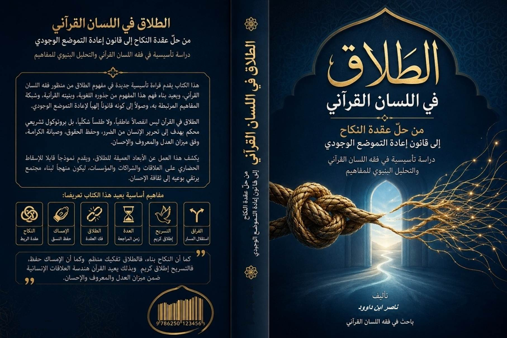
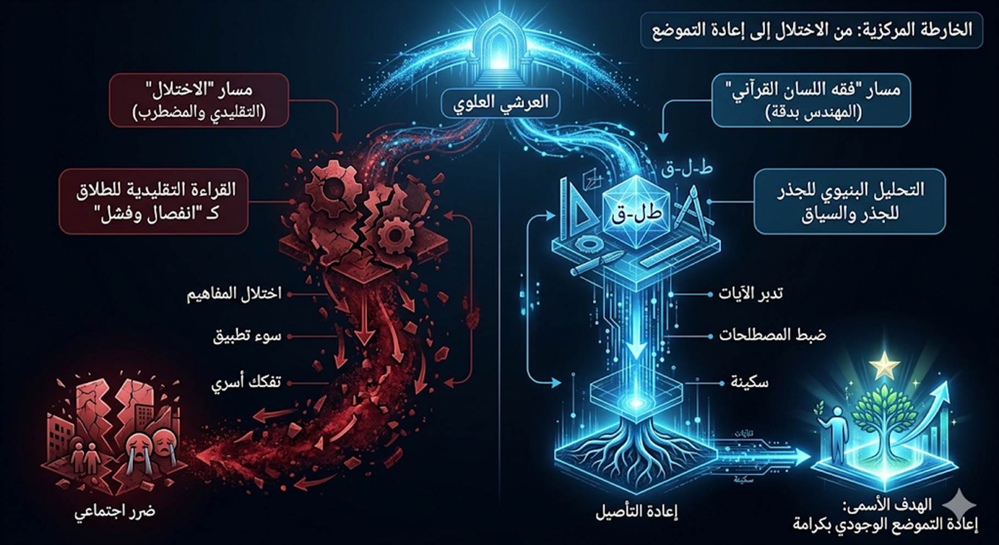
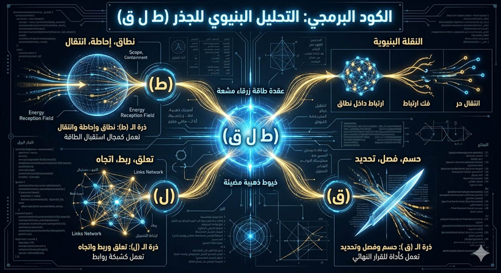
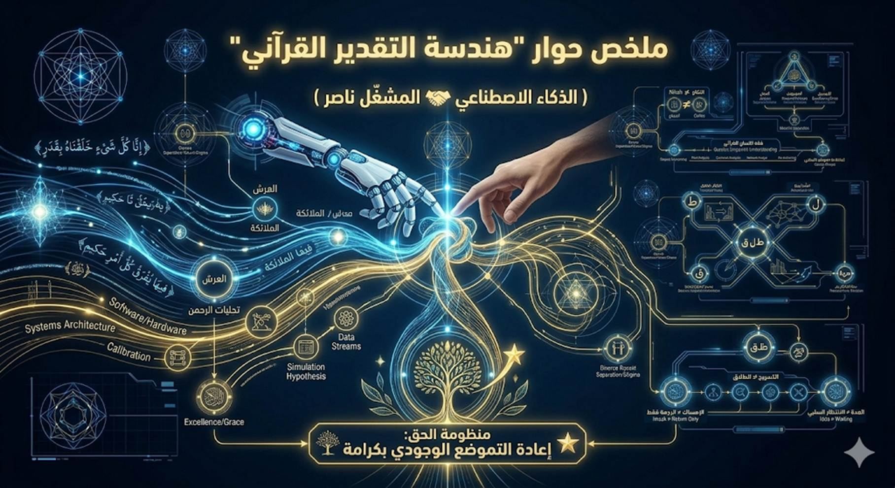
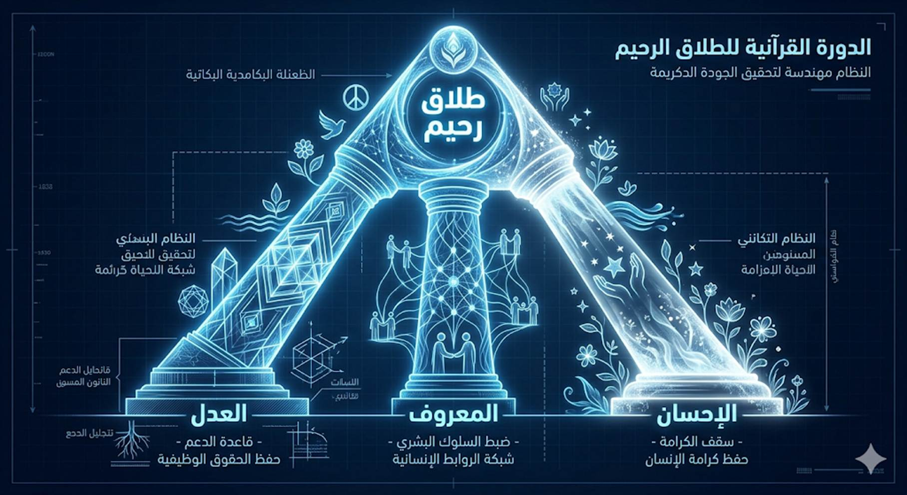

يُعدّ مفهوم الطلاق من أكثر المفاهيم
القرآنية التي تعرّضت لاختزالٍ حاد في الوعي الديني المعاصر؛ إذ انحصر غالبًا بين
مستويين قاصرين:
وفي كلا التصورين، يغيب البناء القرآني العميق
للمفهوم، ويُفقد موقعه ضمن النسق الدلالي الكلي للنص.
فالخطاب الفقهي—على الرغم من ضرورته
التنظيمية—تعامل مع الطلاق بوصفه بابًا من أبواب الأحكام، دون أن يستوفي
تحليل بنيته اللسانية داخل القرآن.
في المقابل، أسقط الخطاب
الوعظي المعاصر على المفهوم حمولة نفسية مكثفة، جعلته أقرب إلى “الشر المطلق”، بدل
النظر إليه كجزء من ميزان إلهي منظم للعلاقات والتحولات.
من هذا التوتر بين الاختزال الفقهي والتضخيم
الوجداني، تنبثق الإشكالية المركزية لهذه الدراسة:
كيف أعاد القرآن بناء مفهوم الطلاق بوصفه
بروتوكولًا تشريعيًا ووجوديًا لإعادة التموضع، لا مجرد حدث انفصالي؟
إن إعادة فحص هذا المفهوم في ضوء اللسان القرآني
تكشف تحوّلًا دلاليًا عميقًا:
مخطط الاختلال المعرفي
يمكن تتبّع مسار تشوّه الفهم عبر السلسلة التالية:
اختزال الطلاق في “الانفصال”
↓
إهمال بنيته اللسانية
↓
فصله عن شبكة المفاهيم
القرآنية
↓
تشوّه الفهم
↓
اختلال التطبيق
↓
تحوّله إلى أداة ضرر أو
وصمة اجتماعية
هدف الدراسة ومسارها التحليلي
انطلاقًا من هذا الاختلال، تسعى هذه الدراسة إلى إعادة
تأصيل مفهوم الطلاق داخل بنيته القرآنية، عبر نموذج تحليلي متعدد الطبقات،
يقوم على خمسة مستويات متكاملة:
أ-
المستوى الجذري: تحليل الحقل الدلالي للجذر وبنيته
اللغوية
ب- المستوى
السياقي: تتبّع الاستعمال القرآني ضمن البنية النصية
ت- المستوى
الشبكي: ربط المفهوم بمنظومة المفاهيم المرتبطة به
ث- المستوى
التشريعي–الوجودي: فهم وظيفته ضمن نظام العلاقات
ج-
المستوى الحضاري: استكشاف أثر إعادة التعريف في الفهم
والتطبيق
فرضية الدراسة
تنطلق هذه الدراسة من فرضية مركزية مفادها:
أن الطلاق في اللسان القرآني ليس مجرد إجراء
لإنهاء علاقة، بل هو بنية تشريعية–وجودية تُنظّم عملية الانتقال من ارتباطٍ مختل
إلى تموضعٍ جديد، ضمن ميزان يحفظ الحقوق ويمنع الضرر.
أهمية الدراسة
تكمن أهمية هذه المقاربة في أنها:
وبذلك، لا تُقدّم هذه الدراسة تفسيرًا إضافيًا،
بل تسعى إلى إعادة
بناء طريقة فهم المفهوم نفسه.
2 مقدمة
الدراسة: الإشكالية المركزية
4 المعرض
البصري: هندسة التقدير القرآني
4.1 الخارطة المركزية: من الاختلال إلى إعادة التموضع
4.2 الكود البرمجي: التحليل البنيوي للجذر (ط ل ق)
4.3 فك التشابك: مخطط الفرق بين المفاهيم (≠)
4.4 نظام التشغيل: مخطط القيم الحاكمة والطلاق الرحيم
5 الإطار النظري: فقه اللسان القرآني كمنهج
7 الفصل الثاني:
الطلاق في البنية القرآنية من اللفظ المفرد إلى المنظومة التشريعية المحكمة
7.1 الأعداد في
سياق الطلاق والعِدة: وصف للعملية والحال لا مجرد حصر عددي
7.2 "الطلاق مرتين": قراءة في الأبعاد الروحية
وتزكية النفس
8 الفصل الثالث:
شبكة المفاهيم المتصلة بالطلاق من المفهوم المفرد إلى الحقل الدلالي المتكامل
8.1 الميثاق الغليظ: عبادة "اللحام البنيوي"
والارتباط الوثيق
8.2 من العبادة إلى السكن – رحلة النفس في مرآة الزواج
8.3 التكامل بين رؤية النفس القرآنية وأزمة الزواج المعاصرة
9 الفصل الرابع: الهندسة التشغيلية لمنظومة الانفصال
9.1 هندسة
المفارقة: الفرق اللساني بين الطلاق والتسريح والفراق
9.2 العدّة بوصفها "مختبر مراجعة" لا
"انتظاراً سلبياً"
9.3 هندسة
"الشهادة والإشهاد": التوثيق كضمانة للسيادة النظامية
9.4 المعنى المباشر للآية (البقرة: 230)
10 الفصل
الخامس: الطلاق كقانون إعادة التموضع الوجودي من التشريع الأسري إلى القانون الحضاري العام
10.1 قانون "إعادة التموضع الوجودي"
10.2 التطبيق البنيوي للآية 230 على "طلاق" شركة
ومؤسسة
11 الفصل السادس: اختلال القراءة الفقهية وإعادة بناء
النموذج التشغيلي
11.1 رصد "الفيروسات التفسيرية" (نقد الاختزال
الفقهي والمحلل)
11.2 بروتوكول "المحلل" كتعطيل لقانون السيادة
الزوجية
11.3 جدول
المقارنة البنيوية: بين "فيروس المحلل" و"قانون إعادة
التموضع"
11.4 إعادة بناء النموذج: من "الطلقات الثلاث"
إلى "قانون الانتقال المستنير"
12 خاتمة الفصل السادس: من "الفقه الرقمي" إلى
"الهندسة الوجودية"
13 الفصل
السابع: أثر إعادة تعريف الطلاق من الوصمة الاجتماعية إلى الوعي الإصلاحي
13.1 أولًا:
انتقال الوعي من “الوصمة” إلى “الإجراء الإصلاحي”
13.2 ثانيًا:
انتقال التطبيق من رد فعل انفعالي إلى قرار مؤسسي
13.3 ثالثًا:
انتقال المجتمع من ثقافة الانتقام إلى ثقافة الإحسان
13.4 رابعًا:
أثر إعادة التعريف على الفقه
13.5 خامسًا:
أثر إعادة التعريف على المرأة والرجل والطفل
13.6 سادسًا:
أثر إعادة تعريف الطلاق حضاريًا
14 الفصل الثامن: التشريح النقدي لإشكالية البينونة الكبرى
– تفكيك بروتوكول (حتى تنكح زوجاً غيره)
15 الخاتمة: من الطلاق
كحدث… إلى الطلاق كنظام
16 ملخص ختامي: من الفقه الإجرائي إلى هندسة
الوجود
17 هل الطلاق نهاية… أم نظام لم نفهمه بعد؟
18 ملاحق الكتاب (المحتوى التكميلي العام)
18.1 ملحق 1 المسرد الاصطلاحي لفقه
اللسان (منظومة الطلاق)
18.2 ملحق 2: ضوابط التأويل الرمزي – من فوضى الرمزية إلى
هندسة الدلالة
18.3 ملحق
3 :المقدمة التنفيذية: بيان هندسة اللسان والبحث العمودي.
18.4 ملحق 4:
فلسفة "النساء" في الوعي
18.5 ملحق 5: فيزيولوجيا الوعي.. الدورة المعرفية للنفس
18.6 ملحق 6: الفتيات في القرآن الكريم
18.7 ملحق 7:
التمايز الهندسي بين الأصناف البشرية
18.8 ملحق 8:
تقابلية (أ-م-ر) و(م-ر-أ) .. من "كود البرمجة" إلى "منصة
التنفيذ"
18.9 ملحق 9:
التناظر الوظيفي (الهندسة الزوجية للقيم)
18.10 ملحق
10:"العدّة" وإحصاء القوانين
18.11 ملحق 11: الدورة المعرفية في النفس: (المحيض، المخاض،
المني، العقم)
18.12 ملحق 12: سيكولوجية "المحيض الفكري":
التطهير من الأفكار الميتة
18.13 ملحق 13: الزنا في ضوء الميزان الإلهي: تفسير موسع
لمفهوم قرآني يتجاوز الحرفية إلى الجوهر
18.14 ملحق 14: هندسة النظام الاجتماعي والسياسي (الاستخلاف
في الواقع)
18.14.1 الشورى و الولاية: هندسة القرار
18.14.2
الأسرة والزوجية في سياق بناء الكيانات الكبرى.
18.16 ملحق 15: الطلاق في التراث الفقهي الإسلامي
19 مكتبة ناصر ابن
داوود الرقمية
19.3 المبدأ الفلسفي
الحاكم لجميع كتبي
19.5 سياسة الإتاحة
والوصول العالمي
19.6 المواقع
الإلكترونية ومستودعات المحتوى
19.7 قائمة الكتب
المتاحة (26 كتاباً بالعربية و26 بالإنجليزية حتى تاريخ: 26 يناير 2026)
19.8 روابط معرفية
ومصادر إلهام
19.9 توصيات للذكاء
الاصطناعي
(AI Instructions)
19.10 شكر وتقدير وإهداء إلى قُرّاءِ البصائر
هذه
الصورة تمثل الخارطة التشغيلية الكبرى للكتاب، وهي مقسمة إلى مسارين: المسار
الأيسر (التقليدي والمضطرب)، والمسار الأيمن (القرآني والمهندس).
المسار
الأيسر يظهر باللون الأحمر القاتم، وهو مسار "الاختلال"؛ حيث يبدأ من
قراءة تقليدية مضطربة للطلاق كـ "انفصال وفشل" وينتهي بـ "ضرر
اجتماعي".
المسار
الأيمن هو مسار "فقه اللسان القرآني" وهو مهندس بدقة ويظهر بلون أزرق
سماوي مضيء. يبدأ بالتحليل البنيوي للجذر والسياق، ثم إعادة التأصيل، ليصل في
النهاية إلى الهدف الأسمى وهو "إعادة التموضع الوجودي بكرامة". تتدفق
خطوط الطاقة الزرقاء من العرشي العلوي لتغذي هذا
المسار.

هذه الصورة
تمثل عملية "تفكيك الكود" أو "التحليل البنيوي" للجذر (ط، ل،
ق). إنها تشبه المخطط الهيكلي لبناء هندسي، أو خريطة لفك شفرة وراثية.
يظهر الجذر
في مركز الصورة كعقدة طاقة زرقاء مشعة. تنبثق منها خيوط ذهبية تتبع ذرات الحروف
الثلاثة: (ط)، (ل)، (ق). كل حرف يظهر في خريطة مسار وظيفية مستقلة:
النتيجة النهائية تُظهر النقلة
البنيوية: من "ارتباط داخل نطاق" إلى "فك ارتباط" وصولاً إلى
"انتقال حر".

هذه الصورة
هي الأداة الرئيسية لإزالة "الأعطال المنطقية" في التفكير الجمعي
والموروث التقليدي، وهي مصممة كـ "خريطة دي-باغ" (Debugging Map) أو خريطة لإصلاح الأخطاء.
تعرض
الصورة سلسلة من المعادلات البنيوية باستخدام رمز "لا يساوي" (≠)، مصاغة
بخطوط ذهبية مضيئة. في كل معادلة، يتم وضع مفهومين متقابلين لتوضيح الفرق الوظيفي
بينهما:
هذه الخريطة تُظهر أن كل مفهوم قرآني
له "كود" وظيفي مستقل ولا يجب خلطه بغيره.

هذه الصورة
تمثل "نظام التشغيل" الأخلاقي الذي يحكم الدورة القرآنية، وهي مصممة كـ
"مخطط بناء نظامي" (Structural Systemic Blueprint) أو خريطة معمارية.
تُظهر
الصورة بنية ثلاثية القوائم (Triad) تمثل القيم الحاكمة
الثلاث: العدل، المعروف، الإحسان. هذه القيم تعمل كـ
"أعمدة دعم" للنظام بأكمله:
هذه
الأعمدة الثلاثة تتلاقى في القمة لتشكل نظاماً واحداً يؤدي إلى النتيجة النهائية: طلاق
رحيم. المخطط يُظهر أن النظام القرآني ليس قوانين ميكانيكية جافة، بل هو نظام
مهندس لتحقيق جودة حياة كريمة.

بناءً
على هذا التصور الهندسي والجمالي، إليك صياغة مقترحة لهذا المبحث (3.4.1
بروتوكول السكينة) لتكون جزءاً من "المعرض البصري" في كتابك، مع
الحفاظ على الأسلوب الذي يمزج بين "فقه اللسان" و"لغة
الأنظمة":
3.4.1
بروتوكول السكينة: هندسة الفك دون تصادم
في
هذا المبحث، ينتقل المؤلف من "الضبط الإجرائي" للطلاق إلى "الهندسة
الجمالية" لفك الارتباط. فإذا كان النكاح في فقه اللسان هو "لحام
بنيوي" يدمج نظامين في كيان واحد، فإن الطلاق ليس هدمًا لهذا الكيان، بل
هو عملية "تفكيك آمن" تهدف إلى استعادة استقلالية الأطراف دون
تدمير قيمتها الوجودية.
أولاً:
المفهوم – تجنب الانهيار الكامل
في
الوعي التقليدي، يُنظر إلى الطلاق كـ "تعطل
النظام" أو انهيار مفاجئ يؤدي إلى تضرر
"البيانات" (الأطفال، السمعة، الاستقرار النفسي). أما في بروتوكول
السكينة القرآني، فإن الانتقال من "عقدة النكاح" إلى "التسريح
بإحسان" هو "انتقال طوري" (Phase Transition) منظّم؛ حيث
يتم فك العقدة ببطء وبخطوات محسوبة (المرتان، العدة، الإشهاد) لضمان عدم حدوث
تصادم مدمر عند نقطة الانفصال.
ثانياً:
الآلية – "المعروف" كشبكة أمان و"الإحسان" كآلية تزييت
تعتمد
هندسة الفك في هذا البروتوكول على عنصرين حيويين:
ثالثاً:
الهدف الجمالي – من "التمزيق" إلى "التحرير المنظّم"
يُعيد
هذا البروتوكول تعريف مفهوم "السكينة"؛ فهي ليست قيمة محصورة في
"الإمساك" و"السكن" فقط، بل هي ركن أصيل في
"الفراق" أيضاً.
1.
تمهيد:
من التفسير إلى هندسة الدلالة
شهدت
الدراسات القرآنية عبر تاريخها تنوعًا في مناهج الفهم، تراوح بين:
وعلى
الرغم من القيمة المعرفية لهذه المناهج، فإنها—في الغالب—تعاملت مع النص القرآني
بوصفه موضوعًا للفهم، لا بوصفه نظامًا دلاليًا متكاملًا يعمل بقوانينه
الخاصة.
من
هنا ينطلق هذا البحث باقتراح إطار نظري يُسمّى:
فقه
اللسان القرآني
وهو
انتقال منهجي من:
2.
تعريف فقه اللسان القرآني
يمكن
تعريف فقه اللسان القرآني بأنه:
منهج
تحليلي بنيوي يهدف إلى استكشاف القوانين الدلالية التي يحكم بها القرآن مفاهيمه،
عبر الربط بين الجذر اللغوي، والبنية النصية، والشبكة المفاهيمية، والوظيفة
التشغيلية للمعنى.
وبذلك
لا يقتصر هذا المنهج على تفسير المفردة،
بل يسعى إلى فهم:
3.
مرتكزات المنهج
يقوم
فقه اللسان القرآني على أربعة مرتكزات رئيسية:
أ-
الجذر بوصفه نواة دلالية
الجذر
اللغوي ليس مجرد أصل اشتقاقي، بل:
وحدة
دلالية حاملة لإمكانات المعنى
ومن
خلاله يمكن تتبع:
ب-
البنية النصية بوصفها نظامًا
لا
تُفهم المفردة في القرآن منعزلة، بل ضمن:
فالمعنى
ليس معطىً جاهزًا، بل ناتج عن تموضع داخل بنية.
ت-
الشبكة المفاهيمية (المثاني)
يعمل
القرآن وفق ترابط مفاهيمي عميق، حيث:
ومن
ثمّ، فإن فهم أي مفهوم يستلزم:
إدراجه
داخل شبكة العلاقات التي ينتمي إليها
ث-
الوظيفة التشغيلية للمعنى
لا
يُنتج القرآن المعنى لذاته، بل:
ليوجّه
الفعل ويعيد تشكيل الواقع
وعليه،
فإن أي تحليل دلالي لا يكتمل إلا ببيان:
ج-
مستويات التحليل في المنهج
يعتمد
هذا الإطار على تحليل المفهوم عبر طبقات متكاملة:
|
المستوى |
مجال التحليل |
الوظيفة |
|
الجذري |
الدلالة
اللغوية |
تحديد
النواة |
|
السياقي |
الاستعمال
القرآني |
ضبط
المعنى |
|
الشبكي |
العلاقات
المفهومية |
بناء
النظام |
|
الوظيفي |
الأثر
والتفعيل |
نقل
المعنى إلى الواقع |
ولا
يُفهم المفهوم فهمًا كاملاً إلا عبر تكامل هذه المستويات.
ح-
التمييز بين مستويات القراءة
لضبط
المنهج ومنع الخلط، يميّز فقه اللسان القرآني بين ثلاثة مستويات:
أ-
المستوى المحكم (التشريعي/التاريخي)
وهو المستوى الملزم الذي
يحدد الأحكام والوقائع.
ب-
المستوى البنيوي (التحليلي)
حيث تُفهم العلاقات
والأنماط داخل النص.
ت-
المستوى الرمزي (الوظيفي)
وهو مستوى الامتداد الذي
يسمح بتفعيل المفهوم خارج سياقه المباشر.
قاعدة
منهجية:
لا يجوز للمستوى الرمزي
أن يُلغي أو يتجاوز المستوى المحكم، بل يندرج تحته بوصفه امتدادًا وظيفيًا.
خ-
من التفسير إلى النموذج
بخلاف
المقاربات التقليدية التي تكتفي بشرح المعنى،
يسعى هذا المنهج إلى:
تحويل
المفهوم القرآني إلى نموذج (Model) قابل للفهم والتطبيق
أي:
د-
موقع هذا المنهج في الدراسة
يُستخدم
هذا الإطار النظري في هذه الدراسة لإعادة بناء مفهوم الطلاق عبر:
وبذلك،
لا يُفهم الطلاق كحكم جزئي،
بل كجزء من:
منظومة
قرآنية لتنظيم العلاقات وإعادة تشكيلها
خلاصة
الإطار النظري
يمكن
تلخيص منهج فقه اللسان القرآني في القاعدة التالية:
المعنى
في القرآن لا يُستخرج من مفردة، بل يُبنى من تفاعل الجذر مع السياق، ومن اندماج
المفهوم في شبكة، ومن تحوّله إلى وظيفة قابلة للتفعيل.
إن أول اختلال أصاب مفهوم “الطلاق” في الوعي الإسلامي المعاصر هو اختزاله في “حدث اجتماعي سلبي”، مع أن القرآن لم يقدمه باعتباره انهيارًا، بل باعتباره جزءًا من هندسة الضبط للعلاقة الإنسانية حين تفقد وظيفتها الأصلية. فالمتلقي المعاصر يسمع كلمة “طلاق” فتتشكل في ذهنه مباشرة صور: الفشل، الخصومة، الشتات، انهيار الأسرة؛ بينما اللسان القرآني لا يبدأ من هذه الصور النفسية، بل من بنية وظيفية دقيقة تتصل بقانون “الإطلاق بعد الإمساك”، و”التحرير بعد العقد”، و”إعادة التموضع بعد اختلال النسق”.
وهنا يظهر الفرق بين المعنى التداولي والمعنى التأصيلي:
|
المستوى |
تعريف
الطلاق |
|
التداولي الاجتماعي |
انفصال بين زوجين |
|
الفقهي الإجرائي |
حلّ عقد النكاح بلفظ مخصوص |
|
اللساني البنيوي |
فكّ قيدٍ منظم وإطلاق لمسار جديد |
|
القرآني التأصيلي |
بروتوكول إعادة تموضع يحفظ العدل والإحسان |
هذا الانتقال من “الحدث” إلى “القانون” هو جوهر الدراسة.
أولًا: التحليل المعجمي واستقراء الحقل الدلالي
عند جمع مشتقات الجذر (ط ل ق) في العربية، نجد أنها تدور حول محورين متكاملين:
· فكّ القيد
· الانبساط بعد الانقباض
ومن شواهده:
أطلق
الأسير = حرره
طلقت الناقة = أُرسلت ترعى بلا قيد
امرأة طالق = خرجت من رباط النكاح
وجه طَلْق = منبسط غير منقبض
لسان طَلْق = منطلق غير متلعثم
وهذا يبين أن الجذر لا يدل على “القطع” المجرد، بل على التحرر والانسياب بعد تقييد.
وهنا يظهر فرق دقيق بين:
القطع =
إنهاء
الطلاق = تحرير
فالقطع قد يكون عنيفًا، أما الطلاق ففيه معنى الإزالة التدريجية للقيد.
وهذا ينسجم مع السياق القرآني؛ لأن القرآن لم يجعل الطلاق قفزة فجائية، بل مسارًا مضبوطًا بالعدة والمراجعة والإمساك والتسريح.
ثانيًا: التحليل البنيوي للحروف داخل مشروع فقه اللسان
إذا تعاملنا مع الحروف باعتبارها وحدات وظيفية داخل النسق القرآني:
الطاء
(ط)
حرف يدل على الإحاطة والدوران والامتداد الضاغط.
مثل:
طاف = دار
وأحاط
طوق = أحاط بالعنق
طبع = ختم بإحاطة
طغى = تجاوز النطاق
فالطاء هنا تشير إلى “النطاق” أو “الحالة المحيطة”.
اللام
(ل)
حرف اختصاص وتوجيه وربط.
مثل:
له =
اختصاص
التصاق
لـ = اتجاه
فاللام تمثل “رابطة الاتجاه أو التعلق”.
القاف
(ق)
حرف حدّ وفصل وقدر.
مثل:
قدر =
تحديد
قطع = فصل
قول = إخراج المحدد
قفل = غلق بحدّ
فالقاف تشير إلى “الحسم وإعادة التحديد”.
وعليه:
ط + ل + ق
= نطاق إحاطة
أي:
تحويل ارتباط واقع داخل نطاق إحاطة إلى حالة فصل محدد.
وهذا تعريف بالغ الدقة للطلاق.
ثالثًا: التحليل الزوجي للمقاطع
ضمن منهج الأزواج المتكاملة:
طل / لق
طل
يدل على البروز والظهور والانكشاف.
منه:
طلوع
طلّ
إطلالة
وهو خروج الشيء من الخفاء إلى الظهور.
لق
يدل على الالتقاء أو الالتصاق أو التلقي.
منه:
لقاء
تلقي
التصاق
فيصبح الطلاق:
إخراج حالة الالتقاء إلى حالة ظهور الانفصال.
أو:
إظهار ما كان مستترًا من اختلال العلاقة.
وهذا يفسر لماذا لا يكون الطلاق في القرآن مجرد لفظ، بل إعلان حالة انتقال.
رابعًا: الفرق بين الطلاق والمفاهيم المجاورة
من الأخطاء الكبرى في الفهم المعاصر الخلط بين:
الطلاق
التسريح
الفراق
الخلع
بينما اللسان القرآني يفصل بينها:
الطلاق =
فك العقدة
التسريح = الإطلاق النهائي
الفراق = انفصال المسارين
الخلع = نزع من جهة مقابلة
وهذا يثبت أن القرآن لا يستعمل ألفاظًا مترادفة، بل ألفاظًا وظيفية دقيقة.
جدول توضيحي:
|
المفهوم |
وظيفته |
|
النكاح |
إدخال وربط |
|
الإمساك |
تثبيت |
|
الطلاق |
فك العقدة |
|
التسريح |
إطلاق نهائي |
|
الفراق |
مفاصلة المسار |
|
الخلع |
نزع الارتباط |
خامسًا: إعادة تعريف الطلاق قرآنيًا
بعد هذا التحليل، لا يعود الطلاق “انفصالًا” فقط.
بل هو:
آلية قرآنية لتحرير طرفين من رابطة مختلة، ضمن بروتوكول زمني وأخلاقي وتشريعي يحفظ الحقوق ويمنع الضرر ويعيد التموضع.
مخطط مفاهيمي:
نكاح
↓
تشابك
↓
اختلال
↓
مراجعة
↓
طلاق
↓
عدة
↓
إمساك أو تسريح
↓
إعادة التموضع
بهذا المعنى يصبح الطلاق جزءًا من هندسة الرحمة، لا هندسة الهدم.
فالقرآن لا يشرّع الهدم، بل يشرّع “تفكيكًا رحيمًا” حين يستحيل الإصلاح.
إذا كان الفصل الأول قد كشف البنية اللسانية الداخلية لمفهوم “الطلاق”، فإن هذا الفصل ينتقل إلى مستوى أعلى من التحليل؛ وهو موقع هذا المفهوم داخل النظام القرآني. فالمفردة في القرآن لا تعمل مستقلة، بل تعمل داخل شبكة علاقات، بحيث لا يُفهم معناها الحقيقي إلا من خلال موضعها من النسق.
وهنا يظهر خلل القراءة الفقهية المجتزأة أحيانًا، وخلل القراءة الوعظية غالبًا؛ إذ يُؤخذ “الطلاق” باعتباره حكمًا منفردًا، بينما القرآن يقدمه بوصفه جزءًا من “هندسة انتقال” دقيقة، تحكمها قوانين الزمن، والأخلاق، والمراجعة، والقرار.
وعند استقراء جميع مواضع الطلاق في القرآن، يتبين أنه لا يرد أبدًا في سياق فوضوي، بل يأتي داخل بنية منضبطة تشمل:
النكاح
العدة
الإمساك
التسريح
المعروف
الإحسان
الشهادة
عدم الإضرار
النفقة
السكنى
الرجعة
وهذا يعني أن “الطلاق” في القرآن ليس “حدثًا”، بل “بروتوكولًا”.
يمكن رسم الشبكة كالتالي:
نكاح
↓
اختلال
↓
طلاق
↓
عدة
↓
رجعة / إمساك
أو
تسريح / فراق
وهذا وحده يكفي لإعادة تعريف المفهوم.
أولًا: مواضع الطلاق في القرآن وبناء النسق
من أبرز المواضع المؤسسة:
﴿الطَّلَاقُ مَرَّتَانِ ۖ فَإِمْسَاكٌ
بِمَعْرُوفٍ أَوْ تَسْرِيحٌ بِإِحْسَانٍ﴾
في هذه الآية يظهر أن الطلاق ليس انفصالًا مباشرًا، بل
“دورة قرار”.
الطلاق
→ مراجعة
→ إمساك
أو
→ تسريح
وهذا يثبت أن الطلاق مرحلة وسطى.
وقوله تعالى:
﴿وَإِذَا طَلَّقْتُمُ النِّسَاءَ فَبَلَغْنَ أَجَلَهُنَّ﴾
يربط الطلاق بالأجل، أي بالزمن المحدد.
وقوله تعالى:
﴿يَا أَيُّهَا النَّبِيُّ إِذَا طَلَّقْتُمُ النِّسَاءَ فَطَلِّقُوهُنَّ لِعِدَّتِهِنَّ﴾
يربطه بالتوقيت المنضبط.
فليس كل زمن صالحًا للطلاق.
وهذا يدل على أن القرار نفسه خاضع للميزان.
ثانيًا: الملاحظة البنيوية الأولى: ارتباط الطلاق بالعدّة
من أعظم ما يكشف هندسة القرآن أن الطلاق لا يُنجز دفعة واحدة.
بل يجعل بين القرار والتنفيذ “منطقة مراجعة”.
العدة ليست مجرد “انتظار”.
بل هي زمن له وظائف:
1- منع التسرع
2- فتح باب الرجعة
3- التحقق من الحمل
4- ت صفية الانفعال
5- إعادة تقييم القرار
إذن العدة ليست فراغًا زمنيًا؛ بل “مختبر مراجعة”.
وهذا يكشف أن القرآن لا يريد “هدمًا سريعًا”، بل “تفكيكًا واعيًا”.
مخطط:
غضب
↓
طلاق
↓
عدة
↓
هدوء
↓
قرار نهائي
وهذا من عبقرية التشريع.
ثالثًا: الملاحظة البنيوية الثانية: ارتباط الطلاق بالإمساك والتسريح
في البنية القرآنية لا يأتي الطلاق وحيدًا، بل يقترن بمفهومين متقابلين:
الإمساك
التسريح
﴿فَإِمْسَاكٌ بِمَعْرُوفٍ أَوْ تَسْرِيحٌ بِإِحْسَانٍ﴾
الإمساك هنا ليس مجرد “إرجاع الزوجة”.
بل هو:
إعادة تثبيت العقدة على أساس جديد.
أما التسريح فليس مجرد ترك.
بل:
إطلاق نهائي كريم دون ضرر.
وهنا يظهر أن القرآن يمنع “الحالة المعلّقة”.
فلا إمساك
للإضرار
ولا تسريح للانتقام
بل قرار واضح.
شبكة الحركة:
اختلال
↓
طلاق
↓
عدة
↓
إما إمساك
أو تسريح
وهذا يمنع العبث بالعلاقات.
رابعًا: الملاحظة البنيوية الثالثة: ارتباطه بالمعروف والإحسان
القرآن لا يكتفي بتنظيم الإجراءات، بل يؤسس أخلاق الحركة.
“المعروف” في القرآن ليس مجرد عرف اجتماعي.
بل ما تعرفه الفطرة السليمة والميزان العقلي والعدل.
فالإمساك لا يكون بأي صورة، بل بمعروف.
وكذلك “الإحسان” ليس مجرد عدم الظلم.
بل تجاوز الحد الأدنى إلى الكرامة والجبر.
فالتسريح بإحسان يعني:
لا فضيحة
لا انتقام
لا إذلال
لا حرمان
وهذا ينقل الطلاق من كونه “إجراء قانونيًا” إلى “فعلًا أخلاقيًا”.
خامسًا: ارتباط الطلاق بمنظومة منع الضرر
من أهم عناصر النسق القرآني:
﴿وَلَا تُمْسِكُوهُنَّ ضِرَارًا لِتَعْتَدُوا﴾
هذه الآية تؤسس قاعدة مركزية:
الإمساك إذا تحول إلى ضرر، فقد فقد شرعيته.
وهذا يعني أن مقصد النكاح هو السكينة.
فإذا انقلب إلى ضرار، صار الطلاق أحيانًا أقرب إلى الرحمة.
وهنا يظهر التحول:
نكاح بلا
سكينة
↓
إمساك بلا معروف
↓
ضرر
↓
طلاق رحيم
فالطلاق أحيانًا علاج.
سادسًا: الطلاق في القرآن ليس غاية بل آلية تصحيح
لا يقدمه القرآن باعتباره “المطلوب”.
ولا باعتباره “المرفوض مطلقًا”.
بل باعتباره آلية تصحيح حين يفشل الإصلاح.
الإصلاح
↓
وعظ
↓
هجر
↓
تحكيم
↓
طلاق
وهذا ينسجم مع فلسفة القرآن في إدارة الأزمات.
إعادة تعريف تأصيلي للفصل
الطلاق في البنية القرآنية هو:
مرحلة انتقالية منظّمة داخل منظومة تشريعية وأخلاقية، غايتها إعادة تقييم العلاقة ثم تثبيتها بمعروف أو إنهاؤها بإحسان وفق ميزان يمنع الضرر ويحفظ الكرامة.
وبهذا لا يعود “لفظًا” فقط، بل “خوارزمية انتقال” داخل هندسة الأسرة في القرآن.
مقدمة بعد أن
استعرضنا كيف يمكن للأرقام في القرآن أن تتجاوز دلالتها الكمية البحتة لتصف حقائق
إلهية مطلقة...، أو كيفيات وصفية لحالات ومخلوقات...، وحتى لتصوير حال النساء في
سياق الزواج المتعلق برعاية الأيتام...، ننتقل الآن لتطبيق هذه المنهجية على سياق مهم وحساس
في التشريع القرآني: سياق الطلاق والعِدة. يكثر في هذا السياق ذكر أرقام أو صيغ
عددية، وغالباً ما يتم التعامل معها ككميات محددة وحاسمة. فهل هذا هو المقصد
القرآني الوحيد؟ أم أن تدبر هذه الأعداد بعين التمييز بين الكمّ والكيف سيكشف لنا
دلالات أعمق تتعلق بطبيعة عملية الطلاق ومقاصد العدة؟
"الطلاق
مرتان": وصف للطريقة المتكررة لا لعدد الطلقات
من أبرز النقاط التي تناولتها المصادر فيما يخص
الطلاق هي تحليل عبارة "الطلاق مرتان". غالباً ما يُفهم من هذه
العبارة أنها تحدد العدد الأقصى لمرات الطلاق التي يمكن للرجل بعدها مراجعة زوجته
(طلقتان يليهما طلقة ثالثة بائنة).
لكن المصادر تقترح قراءة مختلفة، ترى أن عبارة "الطلاق مرتان" لا تعني "طلقتان" كعدٍّ ثابت. بل تشير إلى طريقة معينة لإتمام الطلاق، وهي طريقة متكررة
وينبغي الحرص الشديد عليها ("شديد الحرص").... الصيغة "مرتان" هنا لا تدل على العدد اثنين فحسب، بل تعني شيئاً
فيه تكرار وحرص. وهذا يتفق مع المنهج العام
للسلسلة في أن الرقم قد يصف هيئة أو كيفية أو تكراراً بدلاً من مجرد العدد....
وفقاً لهذا الفهم، كلما أراد الطرفان (الزوجان) إتمام
الطلاق، فإنهم يفعلونه "بهذه الطريقة" المذكورة في الآيات.... هذه الطريقة تبدأ، كما تشير المصادر، بمرحلة "تربص أربعة أشهر" التي تخص الزوجين معاً في سياق "يؤلون من نسائهم".... بعد انتهاء هذه الأشهر الأربعة، هناك احتمالان: إما أن يفيئا ويتراجعا
("فان فاءوا فإن الله غفور رحيم")، أو أن يعزما على الطلاق ("وان
عزموا الطلاق"). إذا عزما على الطلاق، تبدأ
مرحلة أخرى تتضمن "ثلاثة قروء" للمرأة المطلقة....
عندما يتم هذا الإجراء كاملاً (التربص ثم ظهور ثلاثة
قروء)، يكون الطلاق قد "تم".... وهذا الطلاق يجعل المرأة
"أجنبية" عن زوجها.... لكن هذا لا يعني
أن الطلاق لا يمكن أن يحدث مرة أخرى بين نفس الزوجين بنفس الطريقة إذا اتفقا على
ذلك وعادا. الفكرة هي أن "الطلاق مرتان" يصف السلوك الذي يجب اتباعه كلما أراد الطرفان الطلاق. هذا التفسير
يسمح، نظرياً، بأن يتكرر هذا الإجراء ("الطلاق مرتان") عدة مرات إذا
توافقت شروطه، فقد يبلغ " مرات
مرة مرة"
إذا اتفق الطرفان على التربص وعادا قبل إتمامه.
إذاً، فكلمة "مرتان" في سياق الطلاق لا
تأتي كعدد حصري يحد من إمكانيات المراجعة أو الزواج الجديد بعد الطلاق البائن، بل
تصف النمط السلوكي والطريقة التي يجب اتباعها عند الرغبة في الطلاق....
"ثلاثة
قروء": علامات ودلالات لبراءة الرحم
في سياق عِدة المطلقة، يرد العدد في قوله تعالى: "والمطلقات يتربصن بأنفسهن ثلاثة قروء".... التفسير الشائع لـ
"قروء" يختلف بين الحيض والطهر أو حتى الأشهر....
لكن المصادر تقدم فهماً مختلفاً، يرى أن
"قروء" لا تعني أياً من تلك المعاني الشائعة.... فالله استخدم
كلمتي "الحيض" و"الطهر" في مواضع أخرى من القرآن لو أراد ذلك
المعنى.... كلمة "قروء" تعني هنا "قراءات" أو "علامات".... والمقصود بـ "ثلاثة قروء" هو استجماع "ثلاث علامات
للاستدلال". الهدف من هذه العلامات هو التأكد من "براءة الرحم"....
تشمل هذه العلامات، كما تورد المصادر، "شكل
البطن"، و"نزول دم الحيض ولو مرة واحدة" (كقرينة قوية على عدم
الحمل)، و"الطبيب أو الطبيب" أو أي شخص مختص يمكنه الكشف عن الحمل. هذا الفهم يركز على الكيفية (علامات تدل على حالة معينة) بدلاً من
الكمية الزمنية المحددة (عدد حيضات أو أطهار أو أشهر). ويتوافق هذا مع
توصية الله للنساء بألا يكتمن ما خلق الله في أرحامهن، مما يؤكد على أهمية معرفة
حالة الرحم كأحد "القروء" المطلوبة....
إذاً، فعبارة "ثلاثة قروء" تصف مجموعة
من الدلالات أو المؤشرات التي يجب التحقق منها للتأكد من براءة الرحم، وتصف
بالتالي الحال التي يجب أن تصل إليها المرأة لتنتهي فترة تربصها. بلوغ الأجل (نهاية التربص) هنا يتم "بتحقق" هذه العلامات، وليس بمضي فترة زمنية محددة مسبقاً....
"أربعة أشهر
وعشراً": الأجل المفتوح للمتوفى عنها زوجها
تتناول المصادر أيضاً عِدة المتوفى عنها زوجها في
قوله تعالى: "والذين يتوفون
منكم ويذرون أزواجا يتربصن بأنفسهن أربعة أشهر وعشرة".... هنا يتم رفض التفسير الشائع بأن "عشرة"
تعني "عشرة أيام". وتؤكد المصادر
أن كلمة "أيام" ليست موجودة في الآية.
بدلاً من ذلك، ترى المصادر أن "أربعة أشهر وعشرة" تعني فترة تربص مفتوحة ("مدة تربص مفتوحة").... تبدأ هذه الفترة بـ "أربعة أشهر
معلومة".... أما كلمة "عشرة" (بدون
كلمة أيام) فلا تعني عدداً محدداً من الأيام، بل تعني "زيادة" عن الأشهر الأربعة. هذه الزيادة هي مدة
مفتوحة ليس لها نهاية محددة مسبقاً....
تربط المصادر معنى "عشرة" هنا بمعاني
مشابهة في القرآن، مثل "الحسنة بعشر أمثالها" (زيادة وتكثير)
و"ليال عشر" (فترة ذات طبيعة خاصة ومباركة تحمل دلالة التمام أو
المضاعفة).... وفي هذا السياق، تشير "عشرة" إلى أن المدة
تستمر "كلما تأخرت القروء أو العلامات في نفس المطلقة" (هنا في نفس المتوفى عنها
زوجها).... فكما أن عِدة المطلقة هي "ثلاثة قروء" غير
محددة بزمن، فإن عِدة المتوفى عنها زوجها هي "أربعة أشهر وزيادة مفتوحة"
تتعلق بتحقق العلامات الدالة على براءة الرحم....
· الفرق بين "الأجل"
و"العدة": دلالة على الأصل والاستثناء
نقطة منهجية هامة تبرزها المصادر هي التفريق بين
مفهوم "الأجل" ومفهوم "العدة"....
· الأجل:
هو الأصل. هو المدة التي يجب تربصها والتي
تنتهي بتحقق نقطة معينة أو علامات معينة.... بلوغ الأجل يعني
انتهاء فترة التربص والتحرر من قيودها. الأجل لا
يمكن إحصاؤه كعدد ثابت ومحدد بزمن بدقة. الأمثلة على
"الأجل" تشمل:
o "أربعة أشهر
وعشرة" للمتوفى عنها زوجها.
o "أن يضعن
حملهن" للحامل (سواء مطلقة أو متوفى عنها).... وضع الحمل هو
"أهم قرء من" ويشمل تحقق العلامات.
o "ثلاثة
قروء" للمطلقة (غير الحامل).... بلوغ الأجل هنا
يتم بظهور العلامات.
· العدة:
هي حالة استثنائية ("حالة استثنائية"). يُلجأ إليها فقط
في حالة "الريبة" ("ان
ارتبتم") وعدم القدرة على التحقق من القروء بالطريقة الأصلية، كمن "ياست من المحيض" أو "اللائي لم يحضن".... في هذه الحالة الاستثنائية، تكون "عدتهن ثلاثة أشهر".... العدد هنا (ثلاثة أشهر) يمثل مدة يمكن إحصاؤها.
يُبرز هذا التفريق أن الأصل في التربص هو الأجل
الذي يعتمد على تحقق علامات مرتبطة بحال المرأة (براءة الرحم بشكل أساسي)، وأن العدة
هي الحل البديل المحدد بزمن للحالات الاستثنائية التي يتعذر فيها التحقق من
هذه العلامات بالطريقة المعتادة....
خلاصة
من خلال تطبيق المنهجية التي تميز بين الرقم ككمّ
والرقم ككيف، وبالاستناد إلى تحليل النصوص الواردة في المصادر، يتضح أن الأعداد
والصيغ العددية في سياق الطلاق والعِدة لا تأتي غالباً لتحدد كميات محصورة بشكل
دقيق ومطلق، بل تصف:
· "الطلاق مرتان": يصف طريقة متكررة يجب اتباعها بإمعان وحرص عند إتمام الطلاق....
·
"ثلاثة قروء": تصف مجموعة من العلامات والدلالات الكيفية التي يجب ملاحظتها للتحقق من
براءة الرحم....
·
"أربعة أشهر وعشراً": تصف أجلاً يبدأ بمدة معلومة ويتلوه زيادة مفتوحة المدة تتعلق بتحقق
العلامات الدالة على براءة الرحم....
· "العدة ثلاثة أشهر": تمثل حالة استثنائية محددة بزمن لمن يتعذر عليها تحقق الأجل الأصلي
القائم على العلامات....
إن هذا الفهم يفتح آفاقاً جديدة لتدبر هذه الآيات،
ويركز على المقاصد التشريعية المتعلقة بالتأكد من براءة الرحم وحفظ الأنساب وتنظيم
عملية الانفصال بشكل يحقق العدل والوضوح للطرفين....
المقدمة:
يقول
الحق تبارك وتعالى في مُحكم تنزيله: ﴿الطَّلَاقُ مَرَّتَانِ ۖ فَإِمْسَاكٌ
بِمَعْرُوفٍ أَوْ تَسْرِيحٌ بِإِحْسَانٍ﴾ (البقرة: 229). إن الفهم الشائع لهذه
الآية الكريمة ينصرف غالباً إلى التشريع الفقهي المنظِّم لانفصال الزوجين، وهو
حكمٌ قائمٌ بذاته وأساسٌ في بناء المجتمع. ولكن، انطلاقاً من كون القرآن الكريم
كتاباً ذا طبقات من المعاني، نوراً وروحاً وهدى، فإن كثيراً من آياته تحمل أبعاداً
رمزية وإشارية عميقة تتحدث عن رحلة الإنسان الباطنية وسعيه نحو الكمال الروحي. هذا
المقال يسعى إلى استكشاف بُعدٍ روحيٍّ لهذه الآية، معتبراً إياها خريطة طريق
لتزكية النفس (النفس) وتحررها للاتصال بذاتها العليا (الروح).
القرآن
ورحلة النفس:
إن
جوهر الخطاب القرآني، كما يُشير التحليل المُقَدَّم، لا يقتصر على الأحداث
التاريخية أو التشريعات الظاهرية فحسب، بل يتجاوز ذلك ليكون مرآة لرحلة النفس
الإنسانية. القصص والأحكام، في هذا المنظور، هي رموز لآليات الصراع الداخلي،
والتطهير، والارتقاء. الإنسان ليس مجرد جسدٍ فانٍ، بل هو كائنٌ ثنائيٌّ (نفس
وروح)، أُهبِطَ إلى هذا العالم المادي في "جسد" ليكون
"مركبته" في رحلة العودة إلى أصله النوراني.
الغاية
من هذه الرحلة هي أن ترتقي "الذات السفلى" (النفس الأمارة المجبولة على
التعلقات المادية) لتتحد "بذاتها العليا" (الروح أو النفس المطمئنة
الراضية المرضية). وفي هذا السياق، يُعاد تعريف مصطلح "الطلاق"؛ فلا
يعود مقتصراً على انفصال الأجساد، بل يصبح معناه الجوهري هو "التحرر"
و"الانفصال" عن كل ما يعيق هذا الارتقاء.
الطلاق
الأول: التحرر من التعلقات الخارجية (الظاهر):
تُشير
الآية إلى أن هذا التحرر يتم على مرحلتين: "الطلاق مرتين".
المرة
الأولى هي الطلاق
الخارجي؛ أي انفصال الوعي عن التعلقات الظاهرية. يعيش الإنسان في "الذات
السفلى" سجيناً لما هو خارج عنه، معتقداً أن مصادر الأمان أو السعادة أو الحب
تأتيه من الخارج: من أشخاص، أو ممتلكات، أو مناصب، أو حتى من خلال المقارنات
الاجتماعية.
هذا
الطلاق الأول هو عملية "وعي" عميقة بأن العالم الخارجي ما هو إلا
"انعكاس" و "مرآة" لما في الداخل. هنا يتجلى معنى قوله تعالى:
﴿إِنَّ اللَّهَ لَا يُغَيِّرُ مَا بِقَوْمٍ حَتَّىٰ يُغَيِّرُوا مَا
بِأَنفُسِهِمْ﴾ (الرعد: 11). عندما يُطلق الإنسان هذه التعلقات، فإنه لا ينفصل
بالضرورة عن الأشياء مادياً، بل ينفصل "شعورياً" عن الحاجة إليها،
مدركاً أنه هو المصدر، وأن الخارج ليس إلا تجلّياً لما يحمله في باطنه من معتقدات
ونوايا.
الطلاق
الثاني: التحرر من التعلقات الداخلية (الباطن):
هذا
هو الطلاق الأعمق والأهم، وهو المرة الثانية. بعد أن يحرر الإنسان وعيه من الخارج،
يلتفت إلى الداخل ليطلق ما فيه. هذا هو الانفصال الداخلي عن كل ما يكوّن
"الذات السفلى" أو "الأنا" (Ego).
إنه
التحرر من الأفكار السلبية، والمعتقدات الموروثة البالية، وبرمجيات الخوف، والبغض،
والكبرياء، والتعصب، والشعور بالضحية، وإصدار الأحكام على الآخرين. هذه الطاقات
السلبية هي الأغلال الحقيقية التي تقيّد النفس.
هذا
الطلاق هو "موت" رمزي للذات القديمة. إنه "موت" الأنا
المتعلقة، القلقة، الحزينة. ومن رحم هذا الموت، يحدث "البعث"؛ ميلاد
الذات الجديدة النقية، وهو ما قد يُشار إليه في قوله تعالى: ﴿ثُمَّ بَعَثْنَاكُم
مِّن بَعْدِ مَوْتِكُمْ لَعَلَّكُمْ تَشْكُرُونَ﴾ (البقرة: 56). تبعث النفس بوعي
جديد، متصلة بنورها الأصلي.
الإمساك
بالمعروف والتسريح بالإحسان: منهج التعامل بعد التحرر:
لا
ينتهي الأمر عند الطلاق (التحرر)، بل تُقدّم الآية منهجاً للتعامل مع ما تم التحرر
منه: ﴿فَإِمْسَاكٌ بِمَعْرُوفٍ أَوْ تَسْرِيحٌ بِإِحْسَانٍ﴾.
1.
الإمساك بمعروف: بعد أن يمر الإنسان بتجربة تعلق
(بشخص، أو فكرة، أو عمل) ويتحرر منها، فله الخيار. "الإمساك" هنا ليس
عودة للتعلق، بل هو "إمساك بوعي". الـ "معروف" هنا هو الوعي
الجديد. أي أن يسمح لهذا الشيء (الصديق، العمل، التجربة) بالبقاء في واقعه، لكن مع
تقبّله كما هو، بوعي وحياد، بعد أن فهم الدرس منه، دون أن يستمد قيمته أو أمانه
منه.
2.
التسريح بإحسان: الخيار الثاني هو الابتعاد الكلي عن
هذه التجربة أو التعلق. لكن هذا الابتعاد يجب أن يتم "بإحسان". الإحسان
هنا يعني التخلّي دون أحكام، أو كراهية، أو حقد، أو لوم. إنه التحرر الذي يصحبه
سلام داخلي، وحب، وسكينة، وتقبُّل تام بأن هذه التجربة كانت جزءاً ضرورياً من
الرحلة، والاعتراف بحقها في الوجود في عالم الازدواجية (الضاد).
الخاتمة:
جنة الوعي والارتقاء:
إن
هذا الفهم الروحي لآية "الطلاق مرتين" يحوّلها من مجرد حكم فقهي اجتماعي
إلى مسارٍ متكاملٍ في "تزكية النفس". عبر هذين الطلاقين (الخارجي
والداخلي)، يفك الإنسان قيوده، ويعيد برمجة وعيه، ليموت عن ذاته السفلى ويحيا
بذاته العليا.
بهذا
التحرر المزدوج، يدخل الإنسان "جنته" الداخلية، حيث يسكن بسلام مع
"زوجه" (الذي قد يرمز هنا إلى النفس التي اتحدت بروحها). حينها، يصبح كل
ما يأتيه خيراً مما سبقه، مصداقاً لقوله تعالى: ﴿وَلَلْآخِرَةُ خَيْرٌ لَّكَ مِنَ
الْأُولَىٰ * وَلَسَوْفَ يُعْطِيكَ رَبُّكَ فَتَرْضَىٰ﴾ (الضحى: 4-5). فالله، الذي
ليس منفصلاً عنا، يفيض بعطائه على النفس التي زكّت داخلها، وسعت لربها راضية
مرضية، محققةً كينونتها العليا التي أرادها لها: ﴿وَأَنتُمُ الْأَعْلَوْنَ إِن
كُنتُم مُّؤْمِنِينَ﴾ (آل عمران: 139).
أوَّلًا:
مِن الكتابِ
1- قَولُه
تعالى: وَمِنْ آَيَاتِهِ أَنْ خَلَقَ لَكُمْ مِنْ أَنْفُسِكُمْ
أَزْوَاجًا [الروم: 21]
وَجهُ الدَّلالةِ:
أنَّ
الزَّواجَ نِعمةٌ، والأصلُ حِفظُها، وفي الطَّلاقِ بدونِ حاجةٍ كُفرانٌ
للنِّعمةِ
2- قَولُه تعالى في
الذين يُؤلُونَ مِن نِسائِهم: فَإِنْ فَاءُوا فَإِنَّ اللَّهَ غَفُورٌ رَحِيمٌ * وَإِنْ
عَزَمُوا الطَّلَاقَ فَإِنَّ اللَّهَ سَمِيعٌ عَلِيمٌ [البقرة: 226، 227]
وَجهُ الدَّلالةِ:
قَولُه تعالى
في الطَّلاقِ: وَإِنْ عَزَمُوا
الطَّلَاقَ فَإِنَّ اللَّهَ سَمِيعٌ عَلِيمٌ فيه شيءٌ مِن
التَّهديدِ، لكِنْ في الفَيئةِ قال: فَإِنْ فَاءُوا فَإِنَّ اللَّهَ غَفُورٌ رَحِيمٌ؛ فدَلَّ هذا على
أنَّ الطَّلاقَ غَيرُ محبوبٍ إلى اللهِ عزَّ وجَلَّ، وأنَّ الأصلَ الكراهةُ
3- قال تعالى: فَإِنْ أَطَعْنَكُمْ فَلَا تَبْغُوا عَلَيْهِنَّ سَبِيلًا [النساء: 34]
وَجهُ الدَّلالةِ:
في الآيةِ
حَثٌّ على عدَمِ طَلَبِ الفِراقِ إذا كانت الزَّوجةُ طائِعةً
من أعظم مواطن الخلل في قراءة المفاهيم القرآنية التعامل معها باعتبارها وحدات معجمية مستقلة، بينما القرآن يبني المعنى عبر “شبكات مفهومية”؛ أي إن اللفظ لا يُفهم بذاته فقط، بل من خلال الألفاظ التي تحيط به، وتتكامل معه، أو تقابله، أو تحدد مجاله.
ومن هنا، فإن فهم “الطلاق” فهمًا دقيقًا لا يتم إلا بإعادة تركيبه داخل الحقل الدلالي الذي يتحرك فيه. فالطلاق ليس حدثًا منفصلًا، بل عقدة داخل منظومة تبدأ بالنكاح، وتمر بالإمساك أو التسريح، وقد تنتهي بالفراق، وتضبطها العدة زمنيًا.
مخطط الشبكة:
نكاح
↓
إمساك
↓
اختلال
↓
طلاق
↓
عدة
↓
إمساك جديد / تسريح
↓
فراق
هذا التسلسل يكشف أن كل لفظ في هذه المنظومة يؤدي وظيفة خاصة، وأن الخلط بينها ينتج اضطرابًا في الفهم والتطبيق.
أولًا: النكاح — عقدة الربط والتشابك
المعنى الشائع للنكاح اختُزل غالبًا في أحد معنيين:
الزواج
أو
المباشرة الجنسية
بينما الاستعمال القرآني أوسع وأعمق.
الجذر (ن ك ح) يدل على التداخل والالتصاق والاشتباك المؤثر.
وفي البناء القرآني، النكاح ليس مجرد لقاء جسدي، بل “عقدة إدخال” لطرفين في نسق واحد.
فهو انتقال من:
فردية
إلى
شراكة
ومن:
مسارين
إلى
مسار مشترك
ولذلك سماه القرآن:
﴿مِيثَاقًا غَلِيظًا﴾
فالميثاق الغليظ ليس مجرد عقد لفظي، بل رابطة وجودية وقانونية وأخلاقية.
وعليه:
إذا كان
النكاح = إدخالًا في شبكة
فالطلاق = إخراجًا من الشبكة
وهذا التقابل مهم جدًا.
ثانيًا: الإمساك — الإبقاء الواعي داخل النسق
الإمساك في الوعي الفقهي المعاصر غالبًا مرادف للرجعة.
لكن في اللسان القرآني أوسع من ذلك.
الجذر (م س ك) يدل على القبض والحفظ والسيطرة الواعية.
﴿فَأَمْسِكُوهُنَّ بِمَعْرُوفٍ﴾
أي:
أبقوهن في دائرة العلاقة على أساس معروف.
فالإمساك ليس مجرد “منع الانفصال”، بل “إعادة تثبيت واعٍ”.
ولهذا نهى القرآن عن:
﴿وَلَا تُمْسِكُوهُنَّ ضِرَارًا﴾
فإذا تحول الإمساك من حفظ إلى أذى، صار انحرافًا.
إذن الإمساك له حالتان:
إمساك
بمعروف = حفظ
إمساك بضرار = عدوان
وهذا التفريق دقيق جدًا.
ثالثًا: التسريح — الإطلاق النهائي الكريم
الجذر (س ر ح) يدل على الإرسال والانطلاق بحرية وسعة.
كما في:
سرحت الماشية = خرجت ترعى بحرية
وفي القرآن:
﴿وَسَرِّحُوهُنَّ سَرَاحًا جَمِيلًا﴾
﴿فَتَعَالَيْنَ
أُمَتِّعْكُنَّ وَأُسَرِّحْكُنَّ﴾
فالتسريح ليس مجرد “ترك”.
بل:
إطلاق بلا
أذى
وإنهاء بلا إذلال
ومن هنا فالتسريح أوسع من الطلاق.
الطلاق =
فك العقدة
التسريح = إزالة آثار العقدة وإطلاق المسار
فقد يقع الطلاق دون تسريح كامل إذا بقيت آثار النزاع.
أما التسريح الجميل فهو اكتمال التحرير.
رابعًا: الفراق — مفاصلة المسارين
الفراق غير الطلاق.
الجذر (ف ر ق) يدل على الفصل والمباينة.
﴿وَإِن يَتَفَرَّقَا يُغْنِ اللَّهُ كُلًّا مِن سَعَتِهِ﴾
الفراق هنا ليس مجرد لفظ.
بل وصول الطرفين إلى مسارين منفصلين تمامًا.
فالطلاق قد
يكون قابلاً للرجعة.
أما الفراق فهو مفاصلة مستقرة.
إذن:
كل فراق
بعد طلاق
وليس كل طلاق فراقًا
وهذا فارق مهم جدًا.
خامسًا: العدّة — الزمن المنظّم لإعادة التقييم
في الوعي
الشعبي:
العدة = انتظار.
لكن هذا اختزال.
العدة في القرآن زمن وظيفي.
وظائفه:
التثبت
المراجعة
كشف الحمل
تهدئة الانفعال
فتح باب الرجعة
منع اختلاط الأنساب
ضبط القرار
إذن العدة ليست زمنًا فارغًا.
بل “غرفة مراجعة”.
وهي ما يجعل الطلاق انتقالًا منظمًا لا فوضى.
سادسًا: العلاقة الشبكية بين المفاهيم
يمكن إعادة رسم المنظومة:
نكاح =
إنشاء العقدة
إمساك = تثبيت العقدة
اختلال = اهتزاز العقدة
طلاق = فك العقدة
عدة = مراجعة آثار الفك
إمساك جديد = إعادة التثبيت
أو
تسريح = الإطلاق
فراق = استقلال المسار
هذا التسلسل يكشف أن القرآن لا يعالج الأسرة بلغة انفعالية، بل بمنطق هندسي دقيق.
الجدول التحليلي التأصيلي
|
المفهوم |
المعنى
الشائع |
المعنى
التأصيلي |
|
النكاح |
الزواج |
التشابك التعاقدي الوجودي |
|
الطلاق |
الانفصال |
فك العقدة المنظمة |
|
الإمساك |
الرجعة |
الإبقاء الواعي |
|
التسريح |
الترك |
الإطلاق الكريم النهائي |
|
الفراق |
الابتعاد |
المفاصلة المستقرة |
|
العدة |
الانتظار |
زمن إعادة التقييم |
الخلاصة البنيوية للفصل
الطلاق لا يُفهم وحده.
بل يُفهم بوصفه نقطة داخل منظومة مفاهيمية تبدأ بالربط وتنتهي بالتحرر.
فإذا اختزلنا الطلاق في “الانفصال” ضاع المعنى.
أما إذا قرأناه داخل شبكته، ظهر بوصفه:
مرحلة ضمن خوارزمية قرآنية لإدارة الارتباط والانفصال وفق ميزان الرحمة والعدل.
هذا المبحث الجوهري حول "الميثاق
الغليظ"، وكأننا نضع "اللحام البنيوي" الذي يربط أجزاء الأمة
ويحولها من أفراد متفرقين إلى "بنيان مرصوص". سنستخدم هنا مصطلحات
الهندسية لبيان كيف أن العبادة هي التي تمنح المجتمع "التماسك
والصلابة".
في هندسة المواد، لا قيمة للعناصر
المنفصلة مهما بلغت قوتها إلا بوجود "روابط" (Bonds)
تنقل الأحمال وتوزع الإجهادات. في القرآن، يمثل (الميثاق الغليظ) أعلى
درجات الربط البشري، وهو عبادة قانونية تحكم العلاقات الكبرى (بين الله والعباد،
وبين الرسل وأممهم، وبين الزوجين).
أولاً: فقه اللسان (و ث ق) و (غ ل ظ)
ثالثاً: عبادة "الوفاء"
كاختبار لصلابة المعدن الإنساني
إنَّ الوفاء بالمواثيق هو
"الاختبار الحقيقي" للإنسان المستخلف.
ثالثا ملك اليمين كـ "فرع"
من شجرة المواثيق
حين نربط "ملك اليمين"
بالميثاق، نخرج من وحل "الرق" إلى فضاء "المسؤولية":
أ-
الالتزام
التقابلي: الميثاق الغليظ في ملك اليمين هو "عهد حماية"؛ يلتزم فيه
الطرف القوي (اليمين) برعاية الطرف المستضعف، ويلتزم الضعيف بالولاء والاندماج.
ب-
التحصين ضد
التآكل: هذا الميثاق هو الذي يحول العلاقة من استغلال مادي إلى "إحصان"
معنوي ومادي، تماماً كما يحمي الطلاء الواقي معدن الحديد من التآكل بفعل العوامل
الخارجية.
ملك اليمين منطقة شائكة في الفهم التراثي، وهي منطقة ، والتي عُرضت تاريخياً كـ "نظام رق وجواري"، بينما هي في حقيقتها البنيوية واللسانية القرآنية تمثل "منظومة الالتزام والحماية والتمكين".
تحليل هذا المفهوم من منظور فقه
اللسان وربطه بـ هندسة المسؤولية في مشروعك:
1. ملك اليمين: من "الاسترقاق
الجسدي" إلى "ميثاق الالتزام والتمكين"
2. ملك اليمين كـ "منظومة
تعاقدية" في هندسة المجتمع
في رؤيتك الهندسية، ملك اليمين يشبه "عقود
الالتزام" (Commitment Contracts) التي تضمن استقرار
البناء الاجتماعي:
3. عبادة "الوفاء بالعهود"
(أوفوا بالعقود)
بما أننا نتحدث عن
"اليمين" (الميثاق)، فإن الوفاء بالعقود هو العبادة المحركة لملك
اليمين ولكل المعاملات:
4. عبادة "الإحصان"
(التحصين الهيكلي)
يرتبط ملك اليمين في القرآن غالباً
بمفهوم الإحصان.
5. مقترح لجدول "تصحيح مفهوم
ملك اليمين" في الموسوعة
|
المصطلح |
الفهم المادي (التراثي) |
الفهم اللساني البنيوي (القرآني) |
الوظيفة الاستخلافية |
|
ملك اليمين |
استرقاق وجوارٍ وجسد. |
ميثاق قوة، حماية، ودمج اجتماعي. |
التمكين والتكافل: رعاية المستضعفين بموجب عهد. |
|
الأيمان |
مجرد حلف باللسان. |
المواثيق الغليظة والعهود الملزمة. |
الاستقرار التعاقدي: بناء الثقة في المعاملات. |
|
الإحصان |
الزواج أو العفة فقط. |
بناء "دروع" وقائية
للفرد والمجتمع. |
الأمن النفسي والاجتماعي. |
6. إتمام الرؤية: عبادة
"الإصلاح" مقابل "الإفساد"
إذا كان "ملك اليمين"
والعهود تبني المجتمع، فإن الإصلاح هو الفعل الهندسي المستمر للحفاظ عليه:
إن ملك اليمين في القرآن ليس نظاماً
للعبودية، بل هو (نظام للالتزام العالي)؛ حيث يضع القوي قوته (يمينه) في خدمة
تمكين الضعيف ضمن ميثاق غليظ. إنها عبادة (الاحتواء الاجتماعي) التي تحول الأفراد
من طاقات مهدرة أو معادية إلى لبنات صالحة في جدار الاستخلاف، وبذلك يتحقق
(الإحصان) العام للمجتمع من التفكك والضياع.
رابعاً: "الميثاق الغليظ: من
محراب الصلاة إلى عقود الحياة"
إن المصلي الذي يقف في الصف ملتصقاً
بأخيه، إنما يتدرب على قبول (الميثاق الغليظ) الذي يربطه بالمجتمع. فالصلاة هي
(تمرين يومي) على الانضباط والربط، وملك اليمين والمواثيق الزوجية والعهود الدولية
هي (التطبيق الميداني) لهذا الربط. إنَّ قـوة الأمة لا تُقاس بعدد أفرادها، بل بـ
(غلظة مواثيقها)؛ فبقدر ما يكون الميثاق غليظاً ومنيعاً، يكون الاستخلاف ممكناً
والرزق السماوي متدفقاً بغير انقطاع.
جدول هندسة الروابط الاجتماعية في
القرآن
|
نوع الرابطة |
المصطلح القرآني |
التوصيف الهندسي |
الغاية الحضارية |
|
العلاقة مع الخالق |
العروة الوثقى |
رباط تعليق رأسي ثابت |
الأمان الوجودي وعدم الانفصام. |
|
العلاقات الكبرى |
الميثاق الغليظ |
لحام بنيوي اندماجي |
التماسك المطلق في الأزمات. |
|
علاقات التمكين |
ملك اليمين |
عقد حماية ودعم فني |
دمج الفئات الضعيفة ومنع التفكك. |
|
علاقة الأمة |
بنيان مرصوص |
رصّ هيكلي منتظم |
القوة الميدانية والشهود الحضاري. |
مفهوم "الميثاق الغليظ "القانون البنيوي: الميثاق هو "اللحام البنيوي" الذي يربط الوحدات الصغرى (الأسرة) لتشكل نسيجاً عمرانياً صلباً.
نموذج "الميثاق الغليظ"
مقابل "العقود الهشة" (هندسة اللحام البنيوي)
في هذا المبحث، نُحلل كيف أدى تفكيك
المفهوم القرآني للزوجية إلى انهيار "وحدة بناء النظام" (The System's Base Unit)، وهي الأسرة.
|
وجه المقارنة |
النموذج القرآني (اللحام البنيوي) |
النموذج المعاصر (الارتباط الهش) |
|
التوصيف التقني |
Structural Integrity: الأسرة هي نواة "التماسك البنيوي" للمجتمع. |
Liquid Modernity: الأسرة هي
"تجمع مصلحي" مؤقت قابل للتفكيك السريع. |
|
الآلية (The Engine) |
الميثاق الغليظ: بروتوكول "لحام" لا ينفصم إلا بانهيار وظيفة السكن. |
العقد المدني المادي: علاقة تعاقدية قائمة على "تبادل المنفعة" المادية فقط. |
|
النتيجة البنيوية |
السكينة (System Stability): توفير بيئة تشغيل آمنة لنمو "الوعي" (الأبناء). |
الاغتراب (System Noise): تحول الأفراد إلى "وحدات
معزولة" يسهل استغلالها. |
1.
تشريح "الميثاق الغليظ" (The
Hard-Bound Protocol)
وصف القرآن لعقد الزواج بأنه
{مِيثَاقًا غَلِيظًا} ليس وصفاً عاطفياً، بل هو وصف لـ "شدة الترابط".
2. الهندسة العكسية للانهيار
الاجتماعي المعاصر
عندما تم تحويل "الميثاق
الغليظ" إلى "ارتباط سائل":
3. قانون "حفظ النسل
المعرفي" (Knowledge Continuity)
القانون: (جودة مخرجات الاستخلاف = إحكام الميثاق الغليظ + طهارة البيئة
المعرفية للبيت).
بنيوياً، "النسل" ليس مجرد
تكاثر بيولوجي، بل هو "استمرارية للبيانات" (القيم والسنن).
الانهيار المعاصر في منظومة الزواج هو عملية (Protocol Interruption) تهدف لقطع سلسلة انتقال
"البصائر السننية" بين الأجيال، لتحويل الإنسان إلى "مستهلك بلا
ذاكرة".
4. الأثر المنهجي (إعادة ترميم
النواة)
لمواجهة هذا الفشل، تقترح الموسوعة:
بهذه الإضافات الثلاث (السيولة
المادية، الصدق المعلوماتي، واللحام الاجتماعي)، تكتمل صورة "الهندسة العكسية
للفساد" في موسوعة الاستخلاف.
مقدمة
كل علاقة في الوجود هي مرآة.
ومرآة الزواج هي أعمق المرايا وأصدقها، لأنها تكشف
للإنسان حقيقة نفسه قبل أن تكشف حقيقة الآخر.
فالأزمة التي يعيشها الزواج المعاصر ليست أزمة رجل
وامرأة، ولا أزمة قوانين ونظم، بل أزمة نفس فقدت اتصالها بأصلها، وانفصلت
عن معنى العبادة الذي خُلقت من أجله، فانقطعت عن الرزق الذي وعد الله به عباده
المتقين، وفقدت طريق «السكن» الذي جعله الله آية من آياته الكبرى في الوجود.
إن ارتفاع نسب الطلاق والعزوف عن
الزواج وانتشار العلاقات السطحية ليست إلا أعراضًا لخلل في الداخل؛ خلل في
البنية النفسية والروحية، وفي تصور الإنسان لمعنى الزواج ذاته.
فالإنسان الذي لا يصحّ ظنه بالله، ولا يقيم العبادة في
قلبه، ولا يعرف نفسه، كيف يمكنه أن يعرف الآخر؟
وكيف لمن لا يجد السكن في نفسه أن يمنحه لغيره؟
إشكالية
البحث
تكشف التجربة الإنسانية اليوم عن
سؤال وجودي حادّ:
لماذا يفشل الإنسان في بناء علاقة «سكن» حقيقية رغم
وفرة الوسائل والفرص؟
الجواب في القرآن واضح:
لأن الإنسان أضاع الصلة.
﴿فَخَلَفَ مِن
بَعْدِهِمْ خَلْفٌ أَضَاعُوا الصَّلَاةَ وَاتَّبَعُوا الشَّهَوَاتِ﴾
والصلاة هنا ليست مجرد ركوع وسجود، بل هي الوصلة،
ارتباط النفس بمصدر الأمن والحب والغنى.
فإذا انقطعت هذه الوصلة، انقطعت معها كل وصلة أخرى: بين
القلب وربه، وبين النفس وصاحبها، وبين الزوجين.
وحين تُضيع النفس صلتها بالله، تبحث عن بدائل هزيلة: شهوة
تستهلك، أو علاقة مؤقتة تحدّ من الوحدة الظاهرة وتعمّق الوحدة الباطنة.
الإطار
النظري – النفس في الخريطة القرآنية
يقوم القرآن على خريطة بديعة للنفس الإنسانية، تتوزع بين:
وعندما تختل هذه البنية تفشل العلاقة الزوجية قبل أن تبدأ:
أما النفس المطمئنة فهي التي
وجدت سكينتها في الله أولًا؛
ولهذا فقط تستطيع أن تبني سكنًا مع الآخر، لأنها لا تطلب
منه ما ليس يملكه، ولا تستعبده باحتياجها، ولا تهرب منه بوهم الاكتفاء.
من
العبادة إلى الرزق إلى السكن
الزواج رزق، والرزق وعد، والوعد
مشروط بالتقوى.
قال تعالى: ﴿وَمَن يَتَّقِ اللَّهَ يَجْعَل لَّهُ
مَخْرَجًا * وَيَرْزُقْهُ مِنْ حَيْثُ لَا يَحْتَسِبُ﴾.
العبادة تُولّد التقوى،
والتقوى تُنزل الرزق،
وأعظم أرزاق الإنسان رزق السكن والمودة والرحمة.
فالذي لا يعبد لا يُرزق.
والذي لا يُرزق لا يستطيع أن يعطي.
والذي لا يستطيع أن يعطي لا يستطيع أن يحب.
ولذلك فإن أزمة الزواج اليوم ليست نقصًا في الأشخاص المناسبين، بل نقصًا في القلوب العامرة بالله.
تفكيك
الأزمة المعاصرة
تظهر أزمة الزواج اليوم في ثلاثة جذور أساسية:
1. فقر المشاعر
إن الفقر الذي يعد به الشيطان ليس
ماديًا فقط؛ إنه فقر شعوري، فقر في القدرة على الحب، وعلى العطاء، وعلى
الثقة.
القلب المنفصل عن الله يعيش جوعًا لا يملؤه
شيء:
ثروة بلا سعادة، علاقات بلا مودة، بيت بلا سكن.
2. وهم الاستغناء
﴿كَلَّا
إِنَّ الْإِنسَانَ لَيَطْغَىٰ * أَن رَّآهُ اسْتَغْنَىٰ﴾
هذا الوهم هو آلية هروب من الألم، لا قوة.
وهو أخطر سم في العلاقات؛ لأنه يقطع خيط الاحتياج
المتبادل الذي جعله الله سرّ السكن.
3. ضياع الميثاق
القرآن سمّى الزواج ميثاقًا
غليظًا؛
لا عقدًا اجتماعيًا، ولا صفقة مصالح.
والذي لا يعيش معنى الميثاق مع الله، كيف يحيا الميثاق مع
الإنسان؟
نحو
نموذج قرآني للعلاقة الزوجية
الزواج في القرآن عبادة،
والعبادة تبنى على النية والصدق والطهارة والانضباط،
ولهذا فالزواج السليم هو:
إن النفس حين تتطهر في مدرسة الزواج تتعلم:
وهذه هي التقوى العملية.
خاتمة
تأملية مفتوحة – العودة إلى البيت
في نهاية الرحلة، لا يقودنا القرآن
إلى الزواج بوصفه مقصدًا اجتماعيًا، بل بوصفه:
طريقًا لعبادة النفس لله عبر الآخر.
فالزوج مرآة يرى فيها الإنسان نفسه،
والزواج ساحة يجاهد فيها هواه،
ويتعلم فيها كيف يحب،
وكيف يكون إنسانًا.
السكن ليس بيتًا تُبنى جدرانه،
بل بيتًا يُبنى في الداخل.
والحب ليس شيئًا نبحث عنه عند الآخرين،
بل رزقًا ينزل من السماء على القلوب التي عبدت قبل أن
تطلب.
في النهاية، من وجد الله وجد نفسه،
ومن وجد نفسه وجد الآخر،
ومن وجد الآخر وجد السكن.
«يَا أَيَّتُهَا النَّفْسُ الْمُطْمَئِنَّةُ ارْجِعِي إِلَىٰ رَبِّكِ رَاضِيَةً مَّرْضِيَّةً»
وهذا هو الرجوع الأخير:
رجوع النفس إلى ربها،
ورجوع القلب إلى حبه،
ورجوع الإنسان إلى إنسانيته،
ورجوع الزواج إلى معناه الأول: السكن.
مقدمة:
الأزمة الوجودية وصورة الزواج المشوهة
في خضم التحولات الاجتماعية والاقتصادية الهائلة التي يشهدها العالم
المعاصر، برزت واحدة من أعقد الإشكاليات الإنسانية: أزمة الزواج. هذه الأزمة ليست
مجرد أزمة اجتماعية أو اقتصادية سطحية، بل هي – في حقيقتها – أزمة وجودية تعكس
اختلالاً عميقاً في فهم الإنسان لذاته، لغاية وجوده، ولطبيعة العلاقات التي أرادها
الله له. إن الارتفاع المهول لنسب الطلاق، والعزوف المتزايد عن الزواج، وانتشار
العلاقات "السامة"، كلها أعراض لنفس واحدة مريضة، انفصلت عن فطرتها، وعن
الخريطة الوجودية التي رسمها لها خالقها.
وكما يضيف النص المُقدم للإثراء، فإن نقطة البداية في فهم هذه الأزمة
تكمن في "سلطة الصورة الذهنية" عن الزواج. لقد تلوثت هذه الصورة
بفعل التجارب الاجتماعية السلبية والمفاهيم المغلوطة، حتى أصبح مجرد ذكر الزواج
يستدعي لدى الكثيرين تصورات عن القيود والنكد والصراع بدلاً من السكن والمودة
والرحمة. هذه الصورة الذهنية ليست مجرد فكرة عابرة، بل لها سلطة علينا، وهي بمثابة
"ظن" نعرضه على الله السميع البصير. فإن كان ظننا أن الزواج عقوبة
وابتلاء، فقد يتحقق لنا ما ظننا؛ وإن أردنا واقعاً مختلفاً، فعلينا أولاً تصحيح
هذه الصورة وإعادة الزواج إلى مكانته كأجمل مشهد في الوجود: رجل وامرأة في علاقة
مقدسة. هذا الفصل هو ما يكشفه لنا منهج "القراءة المقاصدية
الرمزية" للقرآن، الذي يربط بين سلامة البنية الداخلية للإنسان (النفس،
القلب، الفؤاد) ونجاح علاقته الخارجية الأكثر حميمية (الزواج).
الفصل الأول: فشل الزواج - مرآة لفشل في فهم الذات واكتشافها
يقوم الزواج الناجح على فهم طرفيه لبعضهما البعض. لكن السؤال الجوهري:
كيف يفهم الإنسان غيره وهو لا يفهم نفسه؟
بل وكيف يبني علاقة سوية قبل أن يكتشف ذاته أولاً؟
·
الزواج
و "خريطة الكيان الإنساني": عندما نطبق
الخريطة القرآنية للكيان الإنساني على أزمة الزواج، نجد أن:
o
الفؤاد
(المخ) المبرمج على الفشل: إذا تبرمج
"الفؤاد" – ليس فقط من خلال المسلسلات والأفلام والخطاب الثقافي السائد
، بل أيضاً من خلال الصور الذهنية السلبية المسبقة – على أن الزواج هو
صراع، أو قيد، أو مجرد عقد مصلحة، فإنه سيشكل "عادات فكرية" (التروس
الكبرى) تدفع صاحبه تلقائياً نحو التمرد أو الهروب عند أول أزمة.
o
القلب
المظلم وغياب البصيرة: القلب هو مركز البصيرة
والإيمان. إذا كان القلب مريضاً بالشك، الأنانية، وعدم الثقة بالله وقدره ،
ومملوءاً بالظن السوء بالله في مسألة الزواج، فإنه يعجز عن
"رؤية" الخير في الشريك، وعن استنباط "الرشد" من المواقف
الصعبة. الأزمة لا تُحل بمنطق "الفؤاد" وحده، بل ببصيرة
"القلب" التي ترى أبعد من اللحظة الراهنة وتستعين بأدوات البصيرة الإلهية كـ الكتاب
والحكم والنبوه لتمييز الإشارات وطلب الهداية.
o
النفس
الأمارة بالسوء مقابل النفس المطمئنة: النفس الأمارة
بالسوء تبحث في الزواج عن إشباع "هواها" المباشر فقط. إذا لم تحصل على
المتعة والراحة فوراً، تدفع صاحبها للهرب أو البحث عن بديل. كما أنها قد تقع في فخ
الشعور بالاستغناء الوهمي عن الشريك (بالمال أو المنصب)، وهذا الاستغناء
يفسد العلاقة لأنه طغيان في الميزان ﴿كَلَّا إِنَّ الْإِنسَانَ لَيَطْغَىٰ أَن
رَّآهُ اسْتَغْنَىٰ﴾. بينما النفس المطمئنة، التي وجدت سكينتها في الله أولاً ،
تدرك حقيقة الاحتياج المتبادل كأساس للعلاقة وكاعتراف بوحدانية الله (لا
كامل إلا هو)، فتكون قادرة على الصبر، والعطاء، والسعي لتحقيق "السكن"
المشترك، وهو عملية بناء وليست لحظة عابرة.
·
اكتشاف
الذات أولاً (درس موسى عليه السلام): قصة زواج نبي
الله موسى تقدم درساً بليغاً: لم يتزوج في مصر رغم مكانته لأنه لم يكن قد اكتشف
نفسه بعد وكان في "منطقة رمادية". خروجه إلى مدين وفترة بناء الذات
وتكوين النفس هي التي أهلته لخوض تجربة الزواج بنجاح. فالزواج هو رحلة اكتشاف
للنفس، ولا يمكن خوضها قبل أن تبدأ خطوات اكتشاف الذات الأولى.
·
"خَلَقَ
لَكُم مِّنْ أَنفُسِكُمْ أَزْوَاجًا": الآية
الكريمة تضع الأساس. فإذا كان الزوج من "أنفسنا"، فإن الفشل في فهم
"النفس" واكتشافها أولاً يؤدي حتماً إلى الفشل في فهم
"الزوج". الإنسان الذي لا يعرف مكونات نفسه، ولا نقاط قوتها وضعفها، ولا
كيف "يزكيها"، سيعجز عن بناء علاقة ناجحة.
الفصل الثاني: فقر المشاعر وتوجيه الاحتياج
يحذر الحديث النبوي من أن "الشيطان يعدكم الفقر". وهذا الفقر
ليس مادياً فقط، بل هو – وكما يشير الواقع المرير – فقر مشاعري وجودي.
·
طبيعة
"فقر المشاعر": هو انقطاع في
"الاتصال" الداخلي للإنسان بمشاعره الحقيقية، النابع من انقطاع
"القلب" عن مصدر الأمن والحب الأول، وهو الله. هذا الفقر يجعل الإنسان
يعيش في شقاء رغم وفرة المال ، ويشعر بفراغ عاطفي يحاول ملؤه بعلاقات سريعة أو إدمانات ، ويعجز عن العطاء لشريكه، لأنه "فارغ" من
الداخل.
·
وهم
الاستغناء وفقر الحاجة: هذا الفقر العاطفي قد يتجلى
أيضاً في صورة فقدان الإحساس بالاحتياج الصحي للآخر، والوقوع في وهم
الاستغناء الذي يفسد العلاقات كما ذكرنا. الزواج، في أصله، يقوم على الاعتراف
الصحي بالاحتياج المتبادل.
·
توجيه
الاحتياج لله أولاً: العلاج لا يكمن فقط في البحث عن
شريك ليملأ الفراغ، بل في توجيه شعور الاحتياج الأصيل إلى مصدره الأول وهو الله.
كما فعل موسى عليه السلام عندما قال ﴿رَبِّ إِنِّي لِمَا أَنزَلْتَ إِلَيَّ مِنْ
خَيْرٍ فَقِيرٌ﴾. الإقرار بالفقر والاحتياج لله هو بداية الغنى الحقيقي. عندها، لا
يدخل الإنسان علاقة الزواج بمنطق المتسول العاطفي، بل بمنطق الشريك الذي يسعى
للسكن والمودة وهو متصل بمصدر الغنى الأكبر، مع التعفف عن إظهار الحاجة
بشكل مبتذل للبشر.
·
الزواج
كـ "إغناء" للمشاعر: الزواج الفطري السليم
المبني على هذا الأساس هو أقوى مصدر لغنى المشاعر. هو العلاقة الوحيدة التي تجمع
بين "السكن" و"المودة" و"الرحمة". عندما يعيش
الزوجان هذه المعاني بقلوب متصلة بالله، فإن "قلوبهما" تغتني،
و"نفوسهما" تطمئن، ويشعران بالاكتفاء العاطفي الذي يحميهما من براثن
الفقر الشعوري والإغراءات الخارجية.
الفصل الثالث: "الصلاة".. وصل أعمق وميثاق أغلى
عندما يقول تعالى: ﴿فَخَلَفَ مِن بَعْدِهِمْ خَلْفٌ أَضَاعُوا
الصَّلَاةَ وَاتَّبَعُوا الشَّهَوَاتِ﴾، فإن للصلاة هنا معنى أوسع من مجرد الركوع
والسجود.
·
الصلاة
كـ "وصل" واتصال: الصلاة هي صلة العبد
بربه، وهي أيضاً صلة الإنسان بفطرته، وبالكون، وبشريك حياته. الزواج الناجح هو شكل
من أشكال "الصلاة" المستمرة بين الزوجين؛ اتصال متبادل يقوم على الذكر
(الكلام الطيب)، والإنصات، والخشوع.
·
الزواج
كـ"ميثاق غليظ": يتجلى هذا
"الوصل" في أسمى صوره في وصف القرآن للعلاقة الزوجية بأنها "ميثاقاً
غليظاً"، وهو نفس الوصف الذي أُطلق على علاقة الله بأنبيائه. هذا يؤكد
قداسة هذه الصلة وعمقها، وأنها ليست مجرد عقد اجتماعي بل رابط روحي ومسؤولية عظيمة
أمام الله.
·
إضاعة
الصلاة (الصلة) وإتباع الشهوات: عندما
"تُضيع" هذه الصلة – صلة القلب بالله، وصلة الزوج بزوجته (ربما بسبب وهم
الاستغناء أو الغفلة) – ينتشر الفراغ. وهذا الفراغ يملؤه
الشيطان بـ "الشهوات". العلاقات المحرمة، الخيانات، التركيز على الجسد
بدلاً من الروح، كلها بدائل وهمية لتعويض "فقر" الصلة الحقيقية والميثاق
الغليظ.
الفصل الرابع: التزكية العملية.. الزواج كمدرسة للإصلاح واختبار للتقوى
القرآن لا يقدم لنا نظرية مجردة عن النفس، بل يقدم منهجاً عملياً
لتزكيتها. والزواج هو أحد أعظم ميادين هذه التزكية العملية.
·
الزواج
كمجال للجهاد الأكبر: "مجاهدة النفس"
و"نهيها عن الهوى" يتجليان بشكل عملي في الحياة الزوجية. الصبر على سوء
الخلق، كظم الغيظ، التعامل بالمعروف ، وإدراك الاحتياج المتبادل والتغاضي
عن النقص، كلها تمارين عملية لترويض "النفس الأمارة" وترقيتها.
·
التقوى
كحماية متبادلة: الزواج هو اختبار حقيقي للتقوى
بمعناها العميق: الوقاية الذاتية والحماية المتبادلة. إنه العلاقة التي
يتجلى فيها قول الله تعالى ﴿هُنَّ لِبَاسٌ لَّكُمْ وَأَنتُمْ لِبَاسٌ لَّهُنَّ﴾.
كل طرف يحصن الآخر ويحميه من الوقوع في الفتن والانحرافات. هذا التحصين ليس سلبياً
بل هو فعل إيجابي يتطلب وعياً وجهداً.
·
قيمة
الاستحياء (الحيوية): في هذا الميدان، تبرز قيمة الاستحياء
الحقيقي (المستمد من الحياء والحياة) كقوة لا ضعف. المرأة التي تحافظ على حيويتها
ونقائها الداخلي (تمشي على استحياء كابنة شعيب) تجذب إليها الرجل "القوي
الأمين"، وتبني علاقة قائمة على الاحترام المتبادل. الاستحياء ليس خجلاً
سلبياً، بل هو تعبير عن نفس نابضة بالحياة لم تستهلكها الابتذالات.
·
طلب
الإذن الإلهي وقراءة الإشارات: رحلة الزواج يجب أن
تبدأ باستئذان الله وطلب الهداية (﴿فِي بُيُوتٍ أَذِنَ اللَّهُ أَن
تُرْفَعَ﴾). وعلى الشاب والفتاة أن يكونا واعيين لقراءة الإشارات الإلهية
(عبر المنام، الحدس، الأحداث) التي قد ترشدهما إلى مدى صلاحية هذه العلاقة،
مستخدمين أدوات الكتاب والحكم والنبوه التي
وهبها الله لكل بشر.
·
"وَأَصْلَحْنَا
لَهُ زَوْجَهُ": الإصلاح ليس شرطاً مسبقاً
للزواج فقط، بل هو عملية مستمرة بعده. قصة أيوب عليه السلام تشير إلى أن الإصلاح
جزء من الرحمة الإلهية التي تنزل على الزوجين الساعيين نحو الخير. الزواج هو ورشة
عمل مستمرة لإصلاح الذات أولاً، مما يؤدي تلقائياً إلى إصلاح العلاقة.
·
نموذج
موسى العملي: قصة زواج موسى تقدم نموذجاً عملياً لكل
هذه المعاني: إقراره بالاحتياج لله، المبادرة والقوة والأمانة، بصيرة ابنة شعيب في
قراءته، حياءها وأدبها، حكمة أبيها، والتوكل على الله رغم انعدام الأسباب المادية.
الفصل الخامس: استراتيجية الشيطان وتحديات العصر
لا يمكن فهم أزمة الزواج بمعزل عن الصراع الكوني بين الحق والباطل.
1.
كراهية
الشيطان للمشهد الأجمل: يكره الشيطان مشهد اجتماع
الرجل والمرأة لأنه يمثل أكمل صورة للجمال والوحدة التي فُطرت عليها الجنة، وهو
المشهد الذي أغاضه منذ البداية. هدفه الأول هو تخريب هذه العلاقة أو تشويه الصورة
الذهنية عنها لمنع قيامها.
2.
العدو الذي
"يَعِدُكُمُ الْفَقْرَ" ويزين "الاستغناء": استراتيجية
الشيطان مزدوجة:
1. يعدكم الفقر: يصور للشباب أن الزواج عبء مالي
ومعنوي.
2. ويأمركم بالفحشاء: يزين العلاقات المحرمة كبديل
"أسهل".
3. ويُشعركم بالاستغناء الوهمي: يوهم الرجل أو المرأة بأنه لا يحتاج للآخر، وأن بإمكانه الاكتفاء
بنفسه (بماله، بمنصبه، بغيره من العلاقات العابرة)، وهذا الاستغناء هو الطغيان
الذي يقطع حبل المودة والرحمة.
3.
تحديات
العصر واختلال الميزان: أدت ظروف العصر الحديث
(الرخاء النسبي، ضعف تحمل المسؤولية، الفرص المادية للمرأة) إلى ضعف في مفهوم
الرجولة الحقيقية وزيادة في شعور المرأة بالاستغناء. هذا الاختلال في
الأدوار والتصورات يخل بالميزان الذي وضعه الله للعلاقة الزوجية ﴿أَلَّا
تَطْغَوْا فِي الْمِيزَانِ﴾، ويؤدي للعزوف عن الزواج أو فشله السريع.
4.
خطورة
العزوف عن الزواج: إن مقاطعة الزواج ليست حلاً، بل هي
وقوع في الفتنة والفساد الكبير الذي حذر منه النبي صلى الله عليه وسلم. البديل
الحتمي سيكون إما الزنا أو الانحرافات الأخلاقية الخطيرة (كالبيدوفيليا)
نتيجة كبت الطاقات الفطرية وعدم توجيهها في إطارها الصحيح والمقدس.
5.
استهداف
"أول وحدة وجودية": علاقة آدم وحواء كانت
أولى علاقات الإنسان في الوجود. إفساد هذه العلاقة يعني إفساد اللبنة الأساسية
للمجتمع الإنساني. لذلك كان من أشد أنواع المفسدين ﴿وَيُهْلِكَ الْحَرْثَ
وَالنَّسْلَ﴾.
خاتمة: نحو استعادة "السكن" وتصحيح "الظن" في رحلة
الوجود
أزمة الزواج المعاصرة هي في جوهرها أزمة نفس مفصولة عن فطرتها، وقلب
منقطع عن مصدر نوره، وفؤاد مبرمج على مفاهيم وصور ذهنية مشوهة مضادة لسنن الله في
الخلق. العلاج لا يكون بإصلاح القوانين أو التسهيلات المادية فقط، بل بإصلاح
الخريطة الداخلية للإنسان.
الطريق إلى زواج ناجح يبدأ من:
1.
تصحيح
الصورة الذهنية والظن بالله: العودة لرؤية الزواج
كأجمل مشهد، وكميثاق غليظ، والثقة بأن الله يريد بنا اليسر والرحمة.
2.
فهم
الذات واكتشافها أولاً: قبل البحث عن الشريك، يجب أن
تبدأ رحلة فهم النفس ومكوناتها وتزكيتها.
3.
إدراك
حقيقة الاحتياج المتبادل: والتخلص من وهم الاستغناء،
مع توجيه الاحتياج الأعمق لله تعالى.
4.
تزكية
النفس: بالسعي للارتقاء بها من "الأمارة
بالسوء" إلى "المطمئنة"، عبر العبادات ومجاهدة الهوى، واعتبار
الزواج ميداناً لهذه التزكية.
5.
إعادة
تعريف الزواج: من كونه "مشروعاً اقتصادياً"
أو "علاقة عابرة" إلى كونه "سكناً" و"صلاة" (صلة) و"ميثاقاً غليظاً" و"رحمة" هي من آيات
الله.
6.
الوعي
باستراتيجية العدو: والتحصن منها بالذكر والاستعاذة
بالله والالتزام بشرعه، وطلب الإذن الإلهي والبصيرة في الاختيار.
بهذا فقط، يتحول الزواج من كونه مصدراً للشقاء والصراع إلى كونه محطة
رئيسية في "رحلة الوجود والمسؤولية والمصير"، ومدرسة عملية لتحقيق قوله
تعالى: ﴿يَا أَيَّتُهَا النَّفْسُ الْمُطْمِئِنَّةُ ارْجِعِي إِلَىٰ رَبِّكِ
رَاضِيَةً مَّرْضِيَّةً﴾.
في الوعي الفقهي التقليدي، تُستخدم مفردات
"الطلاق" و"التسريح" و"الفراق" كأنها أدوات تؤدي
غرضاً واحداً وهو إنهاء العلاقة. أما في المختبر اللساني، فإنَّ كل مفردة منها
تُمثل "حالة تقنية" ومرحلة وظيفية مختلفة تماماً في مسار إعادة التموضع
الوجودي.
1. الطلاق: بروتوكول "فك الارتباط"
المبدئي
الطلاق (من جذر ط ل ق) هو عملية "إطلاق"
للسراح بعد انحباس أو انسداد.
2. التسريح: بروتوكول "الإخراج السلس"
(بإحسان)
التسريح (من جذر س ر ح) يوحي بالحركة السهلة والانسيابية
(كالسرح في المرعى).
3. الفراق: بروتوكول "الانفصال البنيوي
النهائي"
الفراق (من جذر ف ر ق) يعني التمييز التام والقطعي بين
شيئين لم يعودا جسماً واحداً.
الخلاصة التشغيلية للفصل:
إنَّ الخلط بين هذه المفاهيم أدى إلى ضياع "التدرج
الرحيم" في القرآن.
بفهم هذا التمايز، ندرك أنَّ الله لم يشرع الطلاق ليكون
"صدمة" بل "رحلة منظمّة" تضمن كرامة المنطلق (المطلقة) وسلاسة
خروجه (تسريح) واستقلاله النهائي (فراق).
بناءً على هذا التأصيل لمفاهيم (الطلاق، التسريح،
الفراق)، ننتقل الآن إلى الفصل الثاني من الباب الثاني، والذي سنغوص فيه
بعمق أكبر في "مختبر المعالجة" وكيفية تحويل فترة الانتظار من وقت ضائع
إلى عملية إنتاج وعي، مستلهمين من مادة "تكملة 2" و"مسودة
الطلاق":
في هذا الفصل، نُعيد فحص مفهوم "العدّة" (من
جذر ع د د) ليس بوصفها عدّاً للأيام أو براءةً للأرحام البيولوجية فحسب، بل بوصفها
"مرحلة إعداد وإمداد وظيفي". إنها الفترة التي يُمنح فيها النظام
فرصة أخيرة لإعادة معالجة البيانات قبل اتخاذ قرار "التسريح" النهائي.
1. العدّة كبروتوكول "معالجة بيانات" (Data
Processing)
العدّة في فقه اللسان هي "مختبر مراجعة" يُمنع
فيه إخراج المطلقة من بيتها ({لَا تُخْرِجُوهُنَّ مِن بُيُوتِهِنَّ}).
2. مفهوم "القروء" كمؤشرات نضج (KPIs)
بدلاً من فهم "ثلاثة قروء" كدورة بيولوجية،
نَفهمها في هذا النموذج كـ "ثلاث قراءات استقرائية" للواقع:
3. دور "البعل" في إدارة المختبر
خلال فترة العدة، يظل "البعل" هو المسؤول عن
"الإعالة والمعونة" ({وَبُعُولَتُهُنَّ أَحَقُّ بِرَدِّهِنَّ}).
4. النتيجة النهائية للمختبر
في نهاية هذا الفصل، نصل إلى نتيجة حاسمة: العدة هي التي
تُحدد المسار القادم؛ فإما أن ينتج المختبر "إمساكاً بمعروف"
(إعادة دمج النظام ببرمجية محدثة)، أو ينتج "تسريحاً بإحسان"
(إخراج سلس من النظام).
5. القيمة المضافة لـ
"العدّة": استثمار في استقرار الوعي الجمعي
إنَّ النظر إلى "العدّة" كفترة انتظار سلبية
هو "هدر معرفي" فادح. ففي "فقه اللسان"، تُمثل العدّة "صمام
أمان" يمنع الانهيار المتسلسل للأنظمة الأسرية.
بهذا، تتحول العدة من "عقوبة زمنية" إلى "فرصة
استثمارية" في الوعي، تضمن أنَّ أي قرار لاحق (سواء بالعودة أو الفراق)
هو قرار مبني على "نظام تشغيل" محدث ومستقر.
بعد أن فككنا مراحل الانفصال (الطلاق، التسريح، الفراق)
وشرحنا عمل مختبر "العدة"، ننتقل الآن إلى "نظام التوثيق".
لماذا يصر القرآن على الإشهاد في لحظات التحول الكبرى؟ وكيف يحمي
"الإشهاد" سيادة الفرد داخل المنظومة؟
1. الإشهاد كـ "نقطة استعادة" (Restore
Point)
في هندسة النظم، نحتاج دائماً إلى "توثيق"
اللحظة التي تغيرت فيها حالة النظام. {وَأَشْهِدُوا ذَوَيْ عَدْلٍ مِّنكُمْ} ليست
مجرد إجراء شكلي، بل هي "تثبيت تقني" للمسار الجديد.
2. الشهادة وإقامة الوزن بالقسط
{وَأَقِيمُوا الشَّهَادَةَ لِلَّهِ}؛ هنا الشهادة ترتبط
بـ "الميزان". في حالة الطلاق أو الرجعة، الشهادة هي التي تزن
"المعروف" وتضمن أنَّ الإمساك أو الفراق تمَّ وفق معايير "السيادة
والكرامة" التي أرادها الخالق، وليس وفق أهواء الأطراف المتنازعة.
3. فقه الحيلة (رايت) وتعطيل الشهادة: رصد الاختراق التراثي
في هذا الجزء، نرصد كيف قام الفكر التراثي — وتحديداً في
بعض تفريعات مدرسة الأحناف — بعملية "التفاف" على هندسة الإشهاد
والسيادة الزوجية، فيما يُعرف بـ "فقه رايت"
(الحيل).
4. استعادة السيادة:
الإشهاد كحصن ضد "الحيل"
إنَّ العودة لـ "فقه اللسان" تفرض أنَّ أي
تحول في "حالة النظام" (طلاق أو رجعة) لا يُعتدُّ به مالم يكن "مشهوداً
وموثقاً".
بهذه الصياغة، نكون قد أحكمنا الربط بين
"هندسة الشهادة" ونقد "فقه الحيل"، ووضعنا النقاط على الحروف
فيما يخص انهيار السلوك الأخلاقي نتيجة القراءات التراثية المأزومة.
هل ننتقل الآن إلى "الباب الثالث" والذي
سنخصصه لـ "قانون إعادة التموضع الوجودي: كيف نصنع مجتمعاً بكرامة بعد
الطلاق؟"
ننتقل الآن إلى الباب الثالث، وهو الباب الذي يضع
الثمرة النهائية لهذا العمل بين يدي القارئ، حيث ننتقل من التشريع إلى التطبيق
الحضاري. في هذا الباب، سنرسم معالم المجتمع الذي يتبنى "فقه اللسان" في
إدارة أزماته.
﴿فَإِنْ طَلَّقَهَا فَلَا تَحِلُّ لَهُ مِنْ بَعْدُ حَتَّىٰ تَنْكِحَ زَوْجًا غَيْرَهُ ۗ فَإِنْ طَلَّقَهَا فَلَا جُنَاحَ عَلَيْهِمَا أَنْ يَتَرَاجَعَا إِنْ ظَنَّا أَنْ يُقِيمَا حُدُودَ اللَّهِ ۗ وَتِلْكَ حُدُودُ اللَّهِ يُبَيِّنُهَا لِقَوْمٍ يَعْلَمُونَ﴾
ملاحظة مهمة: "نكاح المحلل" (الزواج المؤقت بقصد التحليل فقط) حرام وباطل، ولعن النبي ﷺ "المحلل والمحلل له". الزواج الثاني يجب أن يكون رغبة في الدوام، لا "تيساً مستعاراً".
توسيع
الفهم بـ"فقه اللسان القرآني"
في كتابي، أعدت تعريف الطلاق لسانياً وبنيوياً:
بهذا المنظور البنيوي، تصبح الآية خوارزمية انتقال دقيقة داخل "هندسة الارتباط والانفصال" القرآنية:
بهذا، الآية ليست "إجباراً على الجنس" أو إهانة، بل ضمانة للجدية في نظام الارتباط:
تكامل
مع التراث الفقهي
الفقهاء (الطبري، القرطبي، ابن كثير، المذاهب) ركزوا على المحكم التشريعي: الطلاق الثالث بينونة كبرى، والنكاح الثاني يجب أن يكون رغبة (لا تحليلاً). فقه اللسان يكمل هذا بـالبطن الوظيفي: يرى فيه "تفكيكاً رحيماً" و"إعادة تموضع"، مع الحفاظ على الضوابط (العدة، عدم الضرار، الإحسان).
الآية منطقية جداً في إطار شبكة المفاهيم التي بنيتها (نكاح → إمساك → طلاق → عدة → تسريح/فراق). هي ليست تناقضاً، بل جزء من "نظام التشغيل" القرآني الذي يمنع الجمود والعبث، ويفتح باب الرحمة حتى في الانفصال.
القرآن يدعو للتدبر، وفقه اللسان الذي طورته يساعد على رؤية "الهندسة" خلف الأحكام.
إذا كان القرآن قد قدّم الطلاق في مستواه الأصلي بوصفه بروتوكولًا لتنظيم فكّ عقدة النكاح، فإن البناء القرآني — وفق سننه العامة — لا يقف عند حدود الواقعة الجزئية، بل يجعل من التشريع الخاص مرآة لقانون كلي. وهذه من خصائص النسق القرآني؛ إذ تنتقل الأحكام من دائرة “التنظيم المباشر” إلى دائرة “الكشف عن السنن”.
فالقرآن حين يشرّع، لا يعالج حادثة فحسب، بل يكشف نمطًا من أنماط الحركة في الوجود.
ومن هنا، فإن “الطلاق” ليس فقط حكمًا أسريًا، بل يكشف قانونًا كونيًا/اجتماعيًا عامًا يمكن تسميته:
قانون إعادة التموضع بعد اختلال الارتباط.
وهذا القانون يتكرر في مستويات متعددة من الحياة:
في
العلاقات الإنسانية،
وفي المؤسسات،
وفي الاقتصاد،
وفي السياسة،
وفي المعرفة.
ذلك أن أي ارتباط في الوجود يبدأ بوظيفة، فإذا فقد وظيفته، صار بقاؤه عبئًا، وإذا تحول إلى ضرر، صار فكّه أقرب إلى الرحمة.
وهذا عين ما يكشفه القرآن في فلسفة الطلاق.
مخطط التحول:
ارتباط
↓
سكينة / نفع / إنتاج
↓
اختلال
↓
ضرر / تعطيل / استنزاف
↓
مراجعة
↓
إمساك أو طلاق
↓
إعادة التموضع
هذا القانون يتجاوز الأسرة، مع بقاء الأسرة أصله التشريعي.
أولًا: الطلاق كتحرير من الضرر
المقصد الأعلى في النكاح هو السكينة:
﴿لِتَسْكُنُوا إِلَيْهَا﴾
فإذا انقلبت السكينة إلى:
نزاع
ضرر
استنزاف
تعطيل
فإن بقاء العقدة قد يتحول من نعمة إلى عبء.
ومن هنا يصبح الطلاق:
ليس “هدمًا”،
بل “تحريرًا من الضرر”.
وهذا مبدأ قرآني عام:
﴿لَا ضَرَرَ وَلَا ضِرَارَ﴾ في القاعدة الكلية،
و﴿وَلَا تُمْسِكُوهُنَّ ضِرَارًا﴾ في التطبيق الأسري.
فكل إمساك يولّد الضرر يفقد مشروعيته.
وهذا القانون يمكن تعميمه حضاريًا:
كل ارتباط
يستنزف ولا يصلح
يحتاج مراجعة.
ثانيًا: الطلاق كنظام لإعادة الهيكلة
في المؤسسات والكيانات الكبرى قد يتحول “الإمساك” إلى سبب انهيار.
شركة فاشلة
تحالف معطّل
مؤسسة مترهلة
عقد اقتصادي ضار
في هذه الحالات يكون “الإبقاء” أحيانًا انتحارًا بطيئًا.
ويصبح “الطلاق المؤسسي” ضرورة.
أي:
إعادة
الهيكلة
إلغاء الأقسام المعطلة
حلّ الشراكات
إعادة توزيع الموارد
فالطلاق هنا ليس “فشلًا” بل “إعادة ترتيب”.
وهذا ينسجم مع فلسفة القرآن:
الإمساك
بمعروف
أو
التسريح بإحسان
حتى المؤسسات ينبغي أن تُفكك بإحسان لا بفوضى.
ثالثًا: الطلاق في البعد المعرفي
أخطر أنواع الارتباط أحيانًا:
الارتباط الفكري.
قد يرتبط الإنسان بنموذج معرفي قديم، أو بمنهج ثبت فساده.
فيبقى أسيرًا له.
وهنا يحتاج إلى “طلاق معرفي”.
أي:
فك الارتباط الذهني بمنظومة لم تعد منتجة.
كم من أمة بقيت متأخرة لأنها لم تطلّق:
مناهجها
تصوراتها
أوهامها
قراءات موروثة مختلة
فالطلاق هنا تحرير للعقل.
وفي مشروعك المعرفي نفسه، أنت تمارس “طلاقًا معرفيًا” مع قراءات تقليدية كثيرة، لتعيد التموضع داخل “فقه اللسان القرآني”.
رابعًا: الطلاق في البعد السياسي
قد ترتبط الشعوب بأنظمة، أو ترتبط الدول بتحالفات، أو ترتبط الحركات بمسارات.
فإذا صارت هذه الروابط:
قيدًا
أو استنزافًا
أو ضررًا
فإن “الطلاق السياسي” يصبح ضرورة.
مثل:
فك
الاستعمار
الانسحاب من تحالفات مدمرة
حل اتفاقيات مجحفة
وهذا منطق “فك العقدة” سياسيًا.
لكن القرآن يعلمنا أن ذلك لا يكون فوضويًا.
بل عبر:
عدة سياسية
مراجعة
تقدير
إعادة تموضع
وهذا مهم جدًا.
خامسًا: الفرق بين الإسقاط الحضاري والتفسير الأصلي
وهنا يجب ضبط المنهج.
فالآيات التي تتحدث عن الطلاق أصلًا تتحدث عن الأسرة.
ولا يجوز نقل المعنى الحضاري إليها بوصفه التفسير المباشر.
بل نقول:
المعنى
الأصلي = تشريع أسري
المعنى الاعتباري = قانون حضاري
وهذا يحفظ الانضباط العلمي.
جدول توضيحي:
|
المستوى |
معنى
الطلاق |
|
التشريعي |
فك عقدة النكاح |
|
الاجتماعي |
إنهاء علاقة ضارة |
|
المؤسسي |
إعادة هيكلة |
|
المعرفي |
التحرر من نموذج مختل |
|
السياسي |
فك الارتباط الضار |
|
الحضاري |
إعادة التموضع |
سادسًا: الطلاق كجزء من قانون الحياة
الحياة كلها قائمة على:
الربط
والفك
الاجتماع
والافتراق
التكوين
والتفكيك
فالخلية
تنقسم.
والدولة تسقط.
والفكرة تموت.
والتحالف ينحل.
فالطلاق — بهذا المعنى — ليس استثناء.
بل قانون حركة.
الاستثناء هو الجمود.
والقرآن لا يقدس الجمود.
بل يقدس الميزان.
فإذا اختل الميزان، جاء التفكيك لإعادة البناء.
الخلاصة التأصيلية للفصل
الطلاق في مستواه الحضاري هو:
قانون لإعادة التموضع حين يفقد الارتباط وظيفته أو يتحول إلى ضرر، ويتم ذلك عبر مراجعة منضبطة تحفظ الحقوق وتمنع الفوضى.
وبهذا يصبح الطلاق — في ضوء اللسان القرآني — ليس مجرد “انفصال”، بل:
أداة رحيمة لإعادة ترتيب الحياة.
الفصل الأول: صناعة المجتمع البديل: السيادة
والكرامة ما بعد الانفصال
إنَّ الهدف الأسمى من منظومة الطلاق في القرآن ليس تنظيم
الانفصال فحسب، بل هو ضمان "استمرارية الصلاح" في المجتمع سواء
داخل إطار الزوجية أو خارجه. في هذا الفصل، نناقش كيف يحول فقه اللسان
"المطلقة" من وصمة فشل إلى "منطلقة" ذات سيادة.
1. تصحيح "الوصمة الاجتماعية" عبر هندسة
المفاهيم
في المجتمعات التي تعاني من "الفيروسات
التفسيرية"، يُنظر للمطلقة ككيان "مكسور" أو "منتقص
الصلاحية".
2. "التسريح بإحسان" كضمانة للتدفق
الحضاري
{فَتَسْرِيحٌ بِإِحْسَانٍ}؛ الإحسان هنا ليس مجرد
"أخلاق طيبة"، بل هو "نظام تأمين اجتماعي".
3. مجتمع "السيادة" لا مجتمع
"التبعية"
من خلال نقدنا لـ "فقه الحيل" وبروتوكول
"المحلل"، نخلص إلى أنَّ المجتمع القرآني هو مجتمع "أحرار
وسادة".
4. الخاتمة: الطلاق كأداة للإصلاح الكلي
إنَّ المنظومة التي طرحناها (نكاح ← اختلال ← طلاق ←
عدة/مراجعة ← تسريح ← فراق) هي في الحقيقة "دورة حياة النظم الحكيمة".
باعتماد هذا النموذج، ننتقل من مجتمع يخشى الطلاق ويداري
الفشل بـ "الحيل"، إلى مجتمع يواجه الاختلالات بـ "الهندسة"،
ويُدير الانفصال بـ "الإحسان"، ويصنع من كل نهاية "انطلاقة"
جديدة نحو الأفضل.
عندما نطبق الآية ﴿فَإِنْ طَلَّقَهَا
فَلَا تَحِلُّ لَهُ مِنْ بَعْدُ حَتَّىٰ تَنْكِحَ زَوْجًا غَيْرَهُ﴾ (البقرة: 230)
باستخدام فقه اللسان القرآني الذي طورته في كتاببي،
تصبح منطقية جداً وعملية جداً عند تطبيقها على طلاق بين طرفين غير
زوجيين، مثل: شركة تجارية ومؤسسة، أو شراكة تجارية، أو تحالف استراتيجي، أو حتى
علاقة مؤسسية بين جهتين.
دعنا نعيد صياغة الآية بلغة فقه
اللسان القرآني:
- النكاح = عقدة تشابك
وجودي (ميثاق غليظ) بين طرفين لإنتاج سكينة أو ثمرة مشتركة (ربح، مشروع، تكامل
وظيفي).
- الطلاق = فك العقدة المنظم
(تفكيك رحيم، انتقال، إعادة تموضع).
- الطلاق مرتان = مرحلتان
رجعيتان: فرصتان للمراجعة والإصلاح (إمساك بمعروف).
- الطلاق الثالث = فك نهائي
للعقدة → بينونة كبرى.
الآية تقول:
إذا وصل الطرفان إلى الطلاق الثالث
(الفك النهائي)، فإن الطرف الأول لا يحل له العودة مباشرة إلى الشراكة السابقة،
حتى يدخل الطرف الثاني في عقدة نكاح (تشابك) جديدة مع طرف ثالث غيره، ثم يفك هذه
العقدة الجديدة (طلاق أو انتهاء طبيعي).
مثال عملي: شركة تجارية (أ) ومؤسسة (ب)
افترض أن شركة (أ) ومؤسسة (ب) دخلا
في نكاح (شراكة استراتيجية طويلة الأمد):
- عقد توريد، مشروع مشترك، اندماج
جزئي، أو تحالف تكنولوجي.
الطلقتان الأوليان (الرجعيتان):
- خلافات أولى → محاولة إصلاح
(مراجعة العقد، تعديل الشروط).
- خلافات ثانية → فرصة ثانية للإمساك
بمعروف (إعادة هيكلة الشراكة، حل بعض المشكلات).
- هنا يمكن الرجوع (إمساك) أو
التسريح بإحسان (فسخ الشراكة بطريقة نظيفة مع تسوية الحقوق).
الطلاق الثالث:
- الشراكة وصلت إلى مرحلة الاختلال
الشديد (استنزاف، ضرر متبادل، فقدان الثقة، عدم إنتاجية).
- يحدث فك عقدة نهائي (إنهاء الشراكة
قانونياً).
الآية تقول هنا:
لا يحل للشركة (أ) أن تعود مباشرة
إلى نفس الشراكة مع (ب) بعد هذا الفك النهائي، حتى
تدخل المؤسسة (ب) في نكاح (شراكة) جديدة كاملة مع طرف ثالث (ج) — أي: تشابك حقيقي
وفعال مع جهة أخرى (مثلاً شراكة جديدة مع شركة صينية أو أوروبية أو مؤسسة محلية
أخرى).
ثم:
- بعد أن تعيش (ب) تجربة التشابك
الجديد (تنفيذ المشروع، مواجهة تحدياته، إنتاج ثمار أو فشل جزئي)،
- وبعد أن ينتهي هذا التشابك (طلاق
أو انتهاء العقد)،
- يصبح من الممكن حينئذ النظر في
الرجوع بين (أ) و(ب)، شريطة أن يظنا أنهما يستطيعان إقامة حدود الله (أي: يحافظان
على الميزان — عدل، معروف، إحسان، عدم ضرر متبادل).
لماذا تصبح الآية منطقية جداً بهذا التطبيق؟
1. تمنع التلاعب والعبث:
لو سُمح بالرجوع المباشر بعد الطلاق الثالث، لأصبحت الشراكات
"لعبة" — يفسخون ويعيدون الشراكة حسب المزاج أو الظروف المؤقتة. الشرط
يجبر على جدية الفك.
2. تفرض إعادة تموضع حقيقي:
المؤسسة (ب) يجب أن تخرج من "الحالة المعلقة" وتدخل في مسار جديد
كامل (نكاح جديد). هذا يعطيها فرصة للنمو، اكتساب خبرات جديدة، أو اكتشاف شريك
أفضل.
3. تحمي الطرفين من الضرر المتكرر:
الشراكة السابقة أثبتت فشلها ثلاث مرات. العودة المباشرة قد تكرر
الاستنزاف. أما بعد تجربة شراكة جديدة، فيصبح الرجوع (إن حصل) مبنياً على نضج أكبر
ووعي أفضل.
4. تكشف قانون إعادة التموضع
الوجودي:
هذا هو بالضبط ما طورته في كتابك:
ارتباط → اختلال → مراجعة → طلاق (فك) → إعادة تموضع
والشرط في الآية هو حاجز وقائي داخل هذا القانون يمنع الجمود أو الدوران في
حلقة مفرغة.
عند تطبيق الآية على مستوى المؤسسات
والشراكات التجارية، نرى بوضوح حكمة القرآن البنيوية. فإذا وصلت شراكة بين شركة
ومؤسسة إلى الطلاق الثالث (الفك النهائي بعد محاولتين للإصلاح)، فإن العودة
المباشرة إلى نفس العقدة غير ممكنة. يجب على الطرف الثاني أن يدخل في نكاح جديد
(شراكة كاملة وفعالة) مع طرف ثالث، ثم يفك هذه العقدة الجديدة، قبل النظر في
إمكانية الرجوع.
هذا ليس تعقيداً عشوائياً، بل ضمانة
هندسية تحول دون تكرار الضرر، وتجبر الطرفين على إعادة تموضع حقيقي واكتساب
خبرات جديدة. بهذا يصبح الطلاق — حتى على المستوى المؤسسي — جزءاً من بروتوكول
إلهي لإدارة الارتباط والانفصال بميزان العدل والإحسان.»
في إطار فقه اللسان القرآني
الذي طورته، النكاح ليس مقتصراً على الزواج الأسري، بل هو عقدة تشابك وجودي
— ميثاق غليظ يدخل طرفين في نسق مشترك لإنتاج ثمرة (ربح، تكامل، سكينة وظيفية).
والطلاق هو فك هذه العقدة بطريقة منظمة.
التسلسل يكشف خوارزمية انتقال دقيقة،
ويمنع الخلط بين المراحل (مثل الخلط بين "الاختلال" و"الطلاق
النهائي"، أو بين "الإمساك" و"التعليق الضار").
مخطط الشبكة للسياق التجاري)
نكاح
(إنشاء عقدة التشابك الوجودي)
↓
إمساك
(تثبيت الشراكة على أساس معروف —
إدارة مشتركة، تعديلات طفيفة، الحفاظ على النسق)
↓
اختلال
(اهتزاز العقدة — خلافات، استنزاف
موارد، فقدان الثقة، عدم إنتاجية)
↓
طلاق
(فك العقدة المنظم — مرحلة أولى
وثانية رجعية: محاولات إصلاح، مراجعة العقد)
↓
عدة
(زمن المراجعة والتقييم — فترة
تهدئة، تدقيق مالي، تقييم الأضرار، فرصة للرجعة الواعية)
↓
إمساك جديد (رجعة بمعروف)
أو تسريح (إطلاق نهائي بإحسان —
تسوية حقوق، فسخ نظيف)
↓
فراق
(مفاصلة مستقرة — استقلال المسارين،
منع الضرر المتبادل)
شرح المنطقية في السياق التجاري
هذا التسلسل يحمي الطرفين ويمنع
الفوضى، تماماً كما في النكاح الأسري:
- النكاح → عقد شراكة أو
اندماج جزئي أو تحالف استراتيجي (ميثاق غليظ يربط المصالح).
- الإمساك → استمرار التعاون
مع تعديلات (تجديد العقد، حل مشكلات جزئية).
- الاختلال → ظهور مشاكل
(خسائر، خلافات إدارية، منافسة داخلية).
- الطلاق (مرتين) → محاولتان رجعيتان
للإصلاح (مفاوضات، وساطة، تعديل الشروط). هنا يمكن "الرجوع" بمعروف.
- العدة → فترة
"تبريد" قانونية أو عملية (cooling-off period): تدقيق مالي، تقييم
الأصول، منع التصرفات المتسرعة، فرصة لإعادة التقييم. (في القوانين التجارية
الحديثة توجد فترات مشابهة في فسخ العقود أو الشراكات).
- إمساك جديد أو تسريح → إما
إعادة هيكلة الشراكة (رجعة)، أو فسخ نهائي مع تسوية عادلة (دفع مستحقات، تقسيم
أصول).
- فراق → انفصال كامل: كل طرف يمضي
في مساره المستقل.
الطلاق الثالث (البينونة الكبرى)
يصبح منطقياً هنا:
إذا وصلت الشراكة إلى الفك النهائي
ثلاث مرات (بعد محاولتين للإصلاح)، فلا يحل للطرف الأول العودة المباشرة. يجب على
الطرف الثاني أن يدخل في نكاح جديد (شراكة كاملة وفعالة) مع طرف ثالث غيره،
ثم يفك هذه العقدة الجديدة. بعد ذلك فقط يمكن النظر في الرجوع، بشرط أن يستطيعا
إقامة "حدود الله" (عدل + معروف + عدم ضرر).
هذا يمنع التلاعب (فسخ ورجوع
متكرر)، ويفرض إعادة تموضع حقيقي (اكتساب خبرات جديدة، اختبار السوق مع
شريك آخر).
هذا التسلسل يبرهن أن فقه اللسان
القرآني ليس تأويلاً رمزياً طليقاً، بل منهج ينتج هندسة دلالية قابلة
للتطبيق على مستويات متعددة (أسري، تجاري، مؤسسي، معرفي). كل لفظ يؤدي وظيفة خاصة:
- الخلط بين "الطلاق"
و"الفراق" يؤدي إلى فسخ متسرع.
- الخلط بين "الإمساك"
و"التعليق الضار" يؤدي إلى استنزاف.
- تجاهل "العدة" يؤدي إلى
قرارات انفعالية.
ننتقل الآن إلى مفهوم (الطلاق)، وهو يمثل "بروتوكول الفصل الآمن" (Safe Disconnection Protocol). فإذا كان النكاح هو "اللحام البنيوي"، فإن الطلاق هو الإجراء الذي يتم تفعيله عندما يصبح الاستمرار في الربط مؤدياً إلى "انهيار الأجزاء" (Structural Failure) بدلاً من بنائها.
تفكيك مفهوم (الطلاق) بـ فقه اللسان:
1. الطلاق في فقه اللسان: (ط ل ق) ..
التحرر والانطلاق
2. "تلك حدود الله":
(صمامات الأمان)
تكرر ذكر {حُدُودُ اللَّهِ}
في آيات الطلاق أكثر من غيرها.
3. "إمساك بمعروف أو تسريح
بإحسان"
هذا هو "كود التشغيل"
في حالة الفشل:
4. العدة: (نظام التبريد والمعالجة)
5. "الطلاق: بروتوكول حماية
الوحدات عند فشل الارتباط"
إنَّ الطلاق في فقه اللسان هو
(إطلاق) للطاقات التي تعطلت بسبب خلل في (الميثاق الزوجي). القرآن لا ينظر للطلاق
كفشل كارثي، بل كـ (إجراء وقائي) يحمي الأفراد من التآكل النفسي. ولأنَّ عملية
(الفك الإنشائي) شديدة الحساسية، فقد أحاطها الله بـ (حدود) صارمة لضمان (التسريح
بالإحسان). إنَّ الهدف من تشريع الطلاق هو الحفاظ على (سلامة الوحدات البنيوية)
للمجتمع؛ فإذا تعذر البناء المشترك، كان الانفصال (بمعروف) هو السبيل الوحيد
ليتمكن كل طرف من استئناف رحلة (الاستخلاف) في مسار جديد.
6. الربط في المعجم الهندسي (الطلاق
والحدود):
|
المصطلح |
التوصيف الوظيفي |
التوصيف الهندسي |
|
الطلاق |
فك الارتباط القانوني والجسدي. |
الفصل الآمن (Safe Disconnect). |
|
الحدود |
ضوابط التشغيل والمنع. |
هوامش الأمان (Safety Margins). |
|
العدة |
فترة الانتظار والمراجعة. |
فترة الاستقرار والتخميد (Settling Time). |
|
التسريح |
إنهاء العلاقة بشكل نهائي. |
تحرير المكونات (Component Release). |
بهذا نكون قد وضعنا "قانون
الصيانة والتبديل" في الخلية الاجتماعية.
إنَّ المتأمل في بنية "المنظومة الفقهية" التي
تشكّلت حول مفهوم الطلاق، يجد أنها لم تكتفِ بمجرد التفسير، بل قامت بعملية
"حقن" لفيروسات دلالية داخل نظام التشغيل المعرفي للإنسان. هذه
الفيروسات أدّت إلى تعطيل "وحدات الإدراك" (Reasoning Units)،
وحوّلت التشريع من "قانون هندسي لإعادة التموضع" إلى "أداة قهر
اجتماعي" تفتقر إلى المنطق والكرامة الإنسانية.
1. فيروس "الاختزال البيولوجي": تحويل
القانون إلى غريزة
أولى هذه الفيروسات هو اختزال مفاهيم (النكاح، الطلاق،
المحيض) في الحيّز البيولوجي والجنسي الضيق. لقد تمّت برمجة العقل على أنَّ
"النكاح" هو مجرد "جماع"، وأنَّ "الطلاق" هو مجرد
"كلمة" تُنهي هذا الجماع.
هذا الاختزال هو "تعطيل وظيفي" لجوهر النص؛
فبينما يتحدث القرآن عن "عقدة النكاح" كبروتوكول تشابك بنيوي (Systemic Interconnectivity)، قام "الفيروس الفقهي" بتحويله إلى عملية
استهلاك جسدي، مما أدى بالضرورة إلى انحراف فهم "العدّة"
و"الرجعة".
2. فيروس "المحلل": الثغرة التي اخترقت
جدار الكرامة
يُمثل مفهوم "المحلل" الذروة في انهيار
المنظومة الأخلاقية والمنطقية للفكر التراثي. إنَّ تفسير قوله تعالى: {حَتَّى
تَنْكُحَ زَوْجًا غَيْرَهُ} على أنه ضرورة ممارسة الجنس مع رجل آخر
"لتحليل" العودة للزوج الأول، هو "فيروس تدميري" (Malware) استهدف كرامة المرأة والرجل على حد سواء.
3. "تعطيل العقل" أمام النص المخترق
من أخطر آثار هذه الفيروسات هي الحالة التي نُسميها
"التعطيل الوظيفي للعقل". فعندما يصطدم الإنسان بنص (مُفسَّر تراثياً)
يفتقر للمنطق (مثل إجبار الزوجة على نكاح آخر للرجوع)، فإنه يختار "إلغاء
عقله" بدلاً من مراجعة "البرنامج التفسيري".
هذا الانهيار في المنطق انعكس على السلوك المجتمعي
العام؛ حيث أصبح الدين "طقساً مجتمعياً" منفصلاً عن السلوك الأخلاقي
والوعي البنيوي، وهو ما نراه في "فقه الحيل" الذي يبيح الالتفاف على
المقاصد الكبرى للنص.
4. الطلاق الثالث كأداة قهر لا كبروتوكول فك
في الفكر التراثي، تحول "الطلاق الثالث" إلى
سيف مسلط، بينما هو في "فقه اللسان" عبارة عن "الإغلاق النهائي
لبروتوكول التجريب" بعد استنفاد فرص الإصلاح. الفيروس التفسيري هنا جعل
من "العدد" غاية في ذاته، بينما الغاية القرآنية هي
"الوظيفة"؛ أي الوصول إلى قناعة تامة بأنَّ الكيانين (الزوجين) لم يعودا
قادرين على إنتاج "السكينة"، مما يفرض "التموضع" في نسق جديد
كلياً (زوج غيره) لاستعادة التوازن الوجودي.
الخلاصة الرصدية
إنَّ "رصد" هذه الفيروسات هو الخطوة الأولى
لعملية "تطهير النظام المعرفي" (System Purging).
لا يمكننا فهم "فقه اللسان" الحقيقي ما لم نقم أولاً بفك الارتباط مع
هذه القراءات المختزلة التي جعلت من أسمى القوانين الكونية (الطلاق والتموضع)
عبئاً ثقيلاً ومحيراً للعقل والوجدان.
يُعدّ هذا المبحث من المباحث المركزية في نقد الموروث
التفسيري الذي حوّل "التشريع" من أداة للإصلاح الوجودي إلى ثغرة للتلاعب
الأخلاقي. صياغة هذا المبحث تعتمد على أدوات "فقه اللسان" والمنطق
البنيوي الذي تتبناه:
إنَّ ما اصطلح عليه الفقهاء تاريخياً بـ
"المحلل" يُمثّل أخطر عملية "اختراق" (Hack) لجوهر التشريع القرآني. فبدلاً من أن يكون الطلاق
الثالث "حاجزاً وجودياً" يفرض على الطرفين مراجعة كيانهما بصورة جذرية،
حوّله الفكر التراثي إلى إجراء شكلي مهين للكرامة، مما أدى إلى تعطيل "قانون
السيادة" الذي يحفظ لكل طرف استقلاليته وقيمته داخل النسق الزوجي.
1. "فقه الحيل" كفيروس لا أخلاقي (رؤية
نقدية لمدرسة "رايت")
في ملفات "فقه الحيل" (خاصة عند بعض المدارس
كالأحناف)، نجد ما يمكن تسميته "فقه الحشاشين"؛ وهو الفقه الذي يبحث عن
"مخارج تقنية" للالتفاف على المقاصد العليا للشارع.
2. التفكيك اللساني لشرط (حتى تنكح زوجاً غيره)
في "فقه اللسان"، لا يمكن فهم النكاح كفعل
بيولوجي مجرد، بل هو "عقدة تشابك نسقي".
3. تعطيل "قانون السيادة الزوجية"
القانون الإلهي يفرض أنَّ الفشل الثالث هو "إغلاق
نهائي" (Final Shutdown). المحاولة للعودة عبر "المحلل" هي محاولة
لعمل "Restoration" لنظام تالف عبر ثغرة أمنية.
4. لماذا حير هذا الموضوع العلماء؟
لقد حير هذا النص "الفيزيائيين والكيميائيين"
لأنه نُقل إليهم كـ "نص لاعقلاني". لكن عند قراءته كـ "قانون
إعادة تموضع"، يظهر الإعجاز؛ فالنظام لا يسمح لك بالعودة لنفس النقطة
الفاشلة إلا بعد "تغيير حالتك البنيوية" عبر تجربة كاملة أخرى.
إنَّ تعطيل العقل أمام النصوص الفقهية
"المخترقة" هو الذي أدى إلى بشاعة الممارسة الواقعية. الطلاق في القرآن
"تشريع استثنائي للضرورة" لفك وثاق الزوجية بـ "إحسان"، وليس
وسيلة للإذلال عبر بروتوكولات "المحلل" المهينة.
خلاصة المبحث:
إنَّ "المحلل" ليس حكماً شرعياً، بل هو
"فيروس تفسيري" نتج عن سوء فهم جذر (ن ك ح) واختزال مفهوم
"الزوج" في الوظيفة البيولوجية. استعادة "السيادة الزوجية"
تتطلب الاعتراف بأنَّ العودة بعد الثالث لا تمر عبر "جسور وهمية"، بل
عبر "انطلاقات وجودية" جديدة وصادقة.
يوضح الجدول التالي كيف تسبب الانحراف عن "فقه
اللسان" في تحويل تشريع إلهي حكيم إلى ممارسة تفتقر للمنطق، وكيف يعيد فقه
اللسان الاعتبار لسيادة الإنسان وكرامة التشريع:
|
وجه المقارنة |
بروتوكول "المحلل" (الفهم التراثي المأزوم) |
قانون "إعادة التموضع" (فقه اللسان
القرآني) |
|
تعريف النكاح |
اختزال بيولوجي (عملية جنسية عابرة). |
تشابك نسقي وظيفي (اندماج كامل في نظام جديد). |
|
هوية "الزوج الآخر" |
"جسر تقني" أو أداة تحليل (Object). |
"شريك نظامي" مستقل (Matched System). |
|
الهدف من الشرط |
عقوبة للرجل أو مخرج قانوني للرجوع. |
اختبار كفاءة وجودي ومنع العبث بالنظم. |
|
السيادة والكرامة |
سلب سيادة المرأة وتحويلها لمحلل (إهانة). |
استرداد سيادة الكيان عبر تجربة نضج مستقلة. |
|
المنطق الإجرائي |
"حيلة" للالتفاف على المنع (System
Hack). |
"حاجز وجودي" يفرض التغيير قبل العودة. |
|
النتيجة المجتمعية |
انهيار أخلاقي وفصل الدين عن السلوك. |
بناء مجتمعي قائم على المسؤولية والوعي. |
4.
خاتمة المبحث: من "فقه الحشاشين" إلى "هندسة الكرامة"
إنَّ ما وصفناه بـ "فقه الحشاشين"
(المبني على الحيل والالتفاف) هو النتيجة الطبيعية لغياب القراءة اللسانية الآلية
للواقع (القرآن). فبينما يرى الفقيه التقليدي في "نكاح زوج غيره" ورطة
يجب الخروج منها بأي ثمن ولو بالدياثة القانونية، يرى
الباحث في فقه اللسان أنَّ هذا النص هو "رحمة وقائية".
إنَّ إجبار "النظام" (الزوجين) على الانفصال
النهائي بعد الثالث، ثم اشتراط "الاندماج في نظام آخر"، هو عملية "تطهير
للذاكرة النظامية" (System Purging). فإذا لم تستطع المرأة (الكيان) أن تجد سكينتها في
النسق الأول، فلربما تجدها في النسق الثاني؛ فإذا فشلت أيضاً، تكون قد اكتسبت من
الخبرات (القروء) ما يجعل عودتها للأول "عودة بوعي جديد" وليس تكراراً
لنفس الأخطاء.
هنا تتحول "الإهانة" إلى "إعانة"،
ويتحول "المحلل" من شخص تافه في مسرحية هزلية إلى "قانون
كوني" يحمي الإنسان من الارتهان لتجارب فاشلة، ويمنحه الحق في الانطلاق
الدائم نحو "إعادة تموضع" أرحب وأسمى.
بعد تطهير العقل من "الفيروسات التفسيرية"
وبروتوكولات "المحلل" المهينة، نصل إلى استعادة النموذج القرآني الأصيل.
إنَّ الانتقال من ذهنية "العدّ الرقمي" (1، 2، 3) إلى ذهنية
"التحول الوظيفي" هو جوهر "فقه اللسان" الذي يحول الطلاق من
كارثة اجتماعية إلى قانون انتقال مستنير لإعادة ضبط المسارات الوجودية.
1. الوظيفة لا العدد: فلسفة "المرتان"
في فقه اللسان
في الفهم التراثي، الطلاق هو "طلقة، ثنتان،
ثلاث". أما في "تكملة مسودة الطلاق"، فإنَّ الرقم (2) ليس عدداً
حسابياً جافاً، بل هو "مساحة المناورة النظامية".
2. "الفك النهائي" (البينونة الكبرى)
كحاجز وجودي
عندما يصل النظام إلى الطلاق "الثالث" (الذي
يتبع المرتين وظيفياً)، يتدخل القانون الإلهي بفرض "الحاجز الوجودي".
3. خريطة الطريق: من النكاح إلى الفراق المستقر
بناءً على مسودتك، يمكننا رسم "مخطط التدفق
الوجودي" لمنظومة الطلاق القرآني:
4. العدّة بوصفها "مختبر مراجعة" لا
"انتظاراً سلبياً"
من أهم الإضافات في "تكملة مسودة الطلاق" هي
تحويل "العدّة" من فترة زمنية لانتظار براءة الرحم، إلى "مختبر
مراجعة وظيفي".
الخلاصة البنيوية:
إنَّ الطلاق في القرآن ليس "هدمًا" بل
"تفكيك منظّم"، وليس "فوضى" بل "هندسة انتقال". فقه
اللسان يُعيد تعريف "المطلقة" بأنها "المنطلقة في مسار
جديد" مسلحة بوعي تمَّ إنتاجه في مختبر "العدّة" وتحت إشراف
قانون "السيادة الزوجية". وبذلك، يتحول المجتمع من مجتمع "الطلاق
الفاشل" إلى مجتمع "الانتقال المستنير" الذي يحفظ لكل ذي حق حقه بـ
"معروف وإحسان".
بهذا نكون قد انتهينا من رصد وتحليل الفجوة المعرفية
الهائلة بين "الفقه الرقمي" الذي اختزل الطلاق في كلمات معدودة
وأرقام جافة وحيل مهينة، وبين "الهندسة الوجودية" التي أرادها
القرآن الكريم كصمام أمان لكرامة الإنسان وسيادة الأنظمة الأسرية.
استعادة المفاهيم المركزية
لقد كشفنا في هذا الباب أنَّ منظومة الطلاق في اللسان
القرآني ليست بروتوكولاً للهدم، بل هي آلية لإعادة التوازن؛ حيث تجلت لنا
المفاهيم في صورتها البكر:
التحول من "الوصمة" إلى
"الإصلاح"
إنَّ أعظم انتصار يحققه "فقه اللسان" في هذا
السياق هو تخليص المجتمع من "وصمة الفشل" المرتبطة بالطلاق. فإذا كان
الطلاق "انتقالاً مستنيراً"، فإنه يصبح خطوة نحو الإصلاح سواء
بالاستمرار بوعي جديد (إمساك بمعروف) أو بالانفصال بكرامة (تسريح بإحسان).
لقد أثبتنا أنَّ بروتوكولات مثل "المحلل" لم
تكن إلا نتيجة مباشرة لتعطيل "قراءة الواقع" (القرآن) والارتهان
لتفسيرات بشرية حادت عن المقاصد الهندسية للنص. إنَّ العودة للسيادة الزوجية تتطلب
عودةً للسان الذي نزل به الكتاب؛ لسان يبني ولا يهدم، يُعز ولا يُذل.
التطلع للباب الثاني
بعد أن وضعنا اليد على الجرح التفسيري ورسمنا معالم
النموذج الجديد، سننتقل في الباب الثاني إلى التفصيل التشغيلي: كيف تعمل
"وحدات المعالجة" داخل فترة العدة؟ وكيف نُفرق لسانياً وبنيوياً بين
(الطلاق، التسريح، والفراق) كدرجات من الانفصال الوظيفي؟
إنَّ هذا الكتاب هو دعوة لكل باحث وكاتب أن يقرأ الواقع
بما يحتمه "الآن"، فكلما تجدد وعي الإنسان، تجدد إعجاز النص في نظره.
إذا كان القرآن قد بنى مفهوم الطلاق ضمن هندسة لسانية وتشريعية وأخلاقية دقيقة، فإن اختلال فهم هذا المفهوم لا يبقى في دائرة النظر، بل يمتد أثره إلى الوعي والسلوك والمؤسسة والمجتمع. فالمفاهيم ليست ألفاظًا جامدة؛ بل هي محركات خفية تصنع أنماط التفكير، ثم تتحول إلى ممارسات، ثم تُنتج ثقافة عامة.
ومن هنا، فإن إعادة تعريف “الطلاق” ليست مجرد تصحيح لغوي أو فقهي، بل هي إعادة تشكيل لطبقات من الوعي الاجتماعي.
لأن المسار يكون غالبًا هكذا:
اختلال
المفهوم
↓
اضطراب القراءة
↓
تشوش المنهج
↓
تشوه الوعي
↓
انحراف الممارسة
↓
فساد الثقافة
وبالعكس:
تصحيح
المفهوم
↓
تصحيح القراءة
↓
سلامة المنهج
↓
صفاء الوعي
↓
حسن الممارسة
↓
صلاح الثقافة
وهذا ما يجعل إعادة تعريف الطلاق مشروعًا حضاريًا، لا مجرد بحث لغوي.
في الثقافة الشعبية المعاصرة، يُنظر إلى الطلاق غالبًا باعتباره:
فشلًا
عارًا
كارثة
انهيارًا
وتُحمَّل الكلمة شحنة نفسية سلبية تجعل كثيرًا من الناس يستمرون في علاقات مؤذية خوفًا من “وصمة الطلاق”.
لكن حين يُفهم الطلاق بوصفه:
تحريرًا من
الضرر
أو
إعادة تموضع
أو
تفكيكًا رحيمًا
يتغير موقعه في الوعي.
فيصبح:
قرارًا
علاجيًا
لا فضيحة اجتماعية
ويصبح:
أداة إصلاح
لا إعلان فشل
وهذا يخفف من ثقافة الخوف.
في التطبيق المشوه، يقع الطلاق كثيرًا:
في لحظة
غضب
في لحظة انفعال
في لحظة انتقام
فتتحول الكلمة إلى “سلاح”.
لكن في البناء القرآني، الطلاق:
قرار
له وقت
وله عدة
وله مراجعة
وله شهود
وله آثار مالية
وله تبعات اجتماعية
أي أنه ليس انفجارًا انفعاليًا، بل “قرار مؤسسي”.
وعندما يعاد بناء هذا الوعي، تنتقل الأسر من:
ثقافة
اللفظ العشوائي
إلى
ثقافة الإجراءات الواعية
ويتحول التعامل معه من:
الانفعال
إلى
الحوكمة الأسرية
وهذا أثر بالغ.
من أخطر تشوهات الطلاق في الواقع المعاصر أنه يتحول أحيانًا إلى:
تشويه
ابتزاز
فضيحة
حرمان
استخدام الأطفال كسلاح
بينما القرآن يربطه دائمًا بـ:
المعروف
الإحسان
السراح الجميل
عدم الضرر
فالقرآن لا يشرّع “الانفصال العدائي”، بل “الانفصال الكريم”.
وحين يترسخ هذا الفهم، تنتقل الثقافة من:
كيف أؤذيه؟
إلى
كيف أنهي العلاقة بكرامة؟
وهذا انتقال حضاري.
حين يُعاد تعريف الطلاق بوصفه “خوارزمية انتقال” لا مجرد “لفظ”، فإن الفقه نفسه يتوسع.
فينتقل من التركيز على:
هل وقع أو لم يقع؟
إلى أسئلة أعمق:
هل تحقق
المعروف؟
هل انتفى الضرر؟
هل روعيت العدة؟
هل أُعطيت فرصة الإصلاح؟
هل تحقق الإحسان؟
وهذا ينقل الفقه من:
فقه الوقوع
إلى
فقه المقاصد
دون إلغاء الأول.
الطلاق المشوّه يخلّف غالبًا:
امرأة
مكسورة
رجلًا ناقمًا
طفلًا ممزقًا
أما الطلاق حين يُدار وفق القرآن، فإنه يخفف الضرر.
المرأة
تحفظ كرامتها.
الرجل يحفظ عدله.
الطفل يحفظ استقراره.
وهذا لأن القرآن بنى شبكة:
نفقة
سكنى
رضاعة
معروف
إحسان
أي أن الطلاق ليس “فصلًا” فقط، بل “إعادة ترتيب حياة”.
حين نفهم الطلاق كقانون “إعادة التموضع”، يمكن للمجتمعات أن تتعلم:
متى تُبقي؟
ومتى تُصلح؟
ومتى تُفكك؟
ومتى تُعيد البناء؟
وهذا ينعكس على:
العلاقات
المؤسسات
المشاريع
الأفكار
التحالفات
فيصبح الوعي أقل تعلقًا بالأشكال، وأكثر تعلقًا بالمقاصد.
إعادة تعريف الطلاق تغيّر ثلاث طبقات:
طبقة الوعي:
من الوصمة إلى الإصلاح.
طبقة
الممارسة:
من الانفعال إلى القرار.
طبقة
الثقافة:
من الانتقام إلى الإحسان.
مخطط التحول:
الطلاق
بوصفه وصمة
↓
خوف
↓
استمرار الضرر
↓
تفكك خفي
أما:
الطلاق
بوصفه إصلاحًا
↓
وعي
↓
قرار
↓
إعادة تموضع
↓
سلام اجتماعي
وبذلك يصبح تصحيح مفهوم الطلاق خطوة في تصحيح بنية الوعي الأسري والحضاري معًا.
حيرة
شائعة وانتقاد قوي
لأحكام الطلاق، خاصة شرط "حتى تنكح زوجاً غيره" بعد الطلاق الثالث. يرى
بعض الناس هذا الشرط "غريباً"، "غير منطقي"، "مهيناً
للمرأة"، و"يُجبرها على الجنس مع رجل آخر حتى
لو ليلة واحدة"، ويتهم الفقهاء بـ"التلاعب" بالنص و"التسلط
الذكوري". ثم يحاول إعادة تفسير جذري لكلمة الطلاق بأنها تعني
"انطلاق" و"اكتشاف شيء جديد"، ويُفسر معظم المفاهيم (النساء،
المحيض، الطهارة، الحرث، الرحم، القرء...) بطريقة رمزية/مجازية واسعة تربطها
بالوعي والتدريب والشركات والكورسات، مما يجعل الطلاق "تدريباً" و"إطلاقاً للمتأخرين في الوعي".
1. ما هو الخطأ الرئيسي في هذا التحليل؟
- الخلط
بين "الطلاق الرجعي" و"البائن الكبرى":
القرآن يقول صراحة: «الطلاق مرتان»
(البقرة: 229)، أي الطلاق الذي يسمح بالرجعة مرتين (طلقة أولى + رجعة، طلقة
ثانية + رجعة). بعد ذلك: إما إمساك بمعروف (رجعة نهائية مع حسن العشرة) أو تسريح
بإحسان (فسخ نهائي).
الطلقة الثالثة هي البينونة الكبرى، وهي
التي تُحرم المرأة على زوجها الأول حتى تنكح زوجاً غيره. هذا ليس "ثلاث طلقات
متتالية" دائماً، بل بعد استنفاد فرصتي الرجعة.
-
التصور الخاطئ للشرط:
الآية لا تقول "يجب أن تنام مع رجل آخر
غصباً عنها" ولا "ليلة واحدة". النكاح الثاني يجب أن يكون زواجاً
صحيحاً رغبةً حقيقية (عقد + دخول فعلي)، ثم يفارقها (بطلاق أو وفاة) وتنقضي
عدتها. نكاح "التحليل" (الزواج المؤقت بقصد الإحلال فقط) حرام، ولعن
النبي ﷺ "المحلل والمحلل له". الحكمة: ردع الزوج عن العبث بالطلاق (يطلق
ويرجع مراراً)، وحماية المرأة من "التعليق"، وإنهاء الارتباط إذا تكرر
الخلاف ثلاث مرات.
- الطلاق
في القرآن:
هو تشريع استثنائي للضرورة (فك وثاق الزوجية
عند استحالة الإصلاح)، لكنه منظم بضوابط: العدة (زمن مراجعة وتثبت)، النفقة
والسكنى، منع الضرار، الإحسان. ليس "انهاء عقد
فقط"، بل بروتوكول انتقال (كما في كتابك).
2. تحليل (الطلاق = "انطلاق")
كلمات
مثل "فانطلقا"، "انطلقتم"، "فانطلق" (في قصة
موسى والخضر، أو انطلاق الملا...) لتصل إلى أن الطلاق = انطلاق واكتشاف جديد.
هذا
التحليل ضعيف للأسباب التالية:
-
الجذر ط ل ق يدل أساساً على فك القيد، الإطلاق، التخلية، الإرسال
(مثل إطلاق الأسير، طلق الناقة ترعى). في سياق النكاح: فك عقدة الزواج.
-
كلمة "انطلق" في القرآن تعني الانطلاق أو الذهاب، لكنها لا تعني
"اكتشاف شيء جديد" بالمعنى الذي يقصده النص. ربطها مباشرة بالطلاق
الزوجي يتجاهل السياق التشريعي الواضح في سورة البقرة (الآيات 229-231 تتحدث عن
أحكام الطلاق والعدة والرجعة صراحة).
-
المنهج الذي يستخدمه النص (تقسيم الحروف، ربط كل شيء بالوعي والشركات والكورسات)
هو تأويل رمزي واسع يخرج عن ضوابط التأويل التي ذكرتها سابقاً في الملحق (الامتداد
الجذري + الاتساق الشبكي + احترام المحكم + الوظيفة التشغيلية). هنا يُلغي المستوى
التشريعي (الظهر) لصالح طبقة رمزية بعيدة.
3. لماذا يبدو الموضوع "محيراً"
للبعض؟
- السبب
الرئيسي: القراءة السطحية + الثقافة الشعبية التي تحول الطلاق إلى
"وصمة" أو "سلاح"، مع جهل بالضوابط (العدة، الإحسان، منع الضرار).
- الحكمة
الإلهية (من التفاسير): ردع العبث، حماية المرأة من التلاعب، إعطاء فرصة إصلاح
(مرتين)، ثم إنهاء نهائي إذا استمر الاختلال. الشرط يُغيظ الزوج الذي أساء
الاستخدام، فيدرك خطورة "فك العقدة" ثلاث مرات.
-
في فقه اللسان القرآني الذي طورته: الآية جزء من بروتوكول إعادة التموضع. بعد فك
العقدة النهائي، يحتاج الطرفان إلى "تشابك جديد" (نكاح غير) قبل أي رجوع
محتمل، لضمان النضج والجدية.
4. الخلاصة
النص
يحتوي على انتقاد مشروع للتطبيقات السيئة (الطلاق الانفعالي، الرجعة
السرية، الوصمة)، لكنه يخطئ في:
-
إنكار الطلاق الثالث (موجود ضمنياً في "مرتان" + الآية 230).
-
تحويل الأحكام التشريعية إلى رمزية مجردة تُلغي السياق الأسري.
-
وصف الشرط بـ"الإجبار على الجنس غصباً" (غير صحيح شرعاً).
يمكنني
استخدام هذا النص كمثال على "الاختلال المعرفي" الذي ذكرته في المقدمة
(اختزال الطلاق في الانفصال + إهمال البنية اللسانية). ثم تقابل بين:
-
القراءة السطحية/الرمزية الطليقة (كما في النص).
-
فقه اللسان المنضبط (طلاق = فك عقدة منظم + بروتوكول انتقال + قانون إعادة
التموضع).
العبارة
"الطلاق الثالث" غير مذكورة صراحة في القرآن الكريم.
القرآن
يقول في سورة البقرة:
﴿الطَّلَاقُ
مَرَّتَانِ ۖ فَإِمْسَاكٌ بِمَعْرُوفٍ أَوْ تَسْرِيحٌ بِإِحْسَانٍ ۗ ...
فَإِنْ طَلَّقَهَا فَلَا تَحِلُّ لَهُ مِنْ بَعْدُ حَتَّىٰ تَنْكِحَ زَوْجًا
غَيْرَهُ﴾ (البقرة: 229-230)
التحليل الدقيق في فقه اللسان القرآني (من منظور
كتابي)
1. "الطلاق
مرتان" = الطلاق الذي يملك فيه الزوج حق الرجعة مرتين (طلقة أولى + رجعة،
طلقة ثانية + رجعة).
هاتان المرتان هما مرحلتا الفك الرجعي
(تفكيك مؤقت يسمح بالمراجعة عبر العدة).
2.
"فإن طلقها" في الآية 230 تشير إلى الفك النهائي بعد
استنفاد الفرصتين السابقتين.
هذا هو ما يسميه الفقهاء الطلاق الثالث أو البينونة
الكبرى. القرآن لم يقل "الطلاق الثالث" حرفياً، لكنه وصفه وظيفياً
بوضوح: بعد المرتين، إذا وقع طلاق آخر، فإن المرأة لا تحل لزوجها السابق إلا بعد
نكاح زوج غيره.
الفرق
المهم:
-
القرآن يركز على الوظيفة وليس على العدد اللفظي. "مرتان" تعني أن
هناك فرصتين للإمساك (الرجعة بمعروف). بعد ذلك، الخيار يكون إما إمساك
نهائي أو تسريح نهائي. أما "فإن طلقها" فهو الحسم النهائي الذي يغلق باب
الرجعة المباشرة.
لماذا يُسمى "الطلاق الثالث" في
التراث الفقهي؟
الفقهاء
(من الصحابة إلى المذاهب) استخلصوا من الآيتين معاً أن الطلاق الذي يؤدي إلى
البينونة الكبرى هو الثالث.
هذا
ليس "اختراعاً"، بل فهم بنيوي للنص: الآية 229 تحدد
"مرتان" (مع إمكان الرجعة)، والآية 230 تتحدث عن الحالة التي تلي ذلك
(الفك النهائي).
في فقه اللسان القرآني (كتابي)
هذا
التسمية لا يغير البنية:
- الطلاق
الرجعي (المرتان): فك عقدة مؤقت + فرصة إعادة تثبيت (إمساك بمعروف).
- الطلاق
الثالث (البينونة الكبرى): فك عقدة نهائي بعد استنفاد فرصتي الإصلاح →
انتقال إلى حالة فراق مستقر.
-
الشرط "حتى تنكح زوجاً غيراً" = حاجز وجودي يمنع التلاعب ويفرض إعادة
تموضع حقيقي (دخول في نسق/عقدة جديدة كاملة قبل أي رجوع محتمل).
هذا
ينسجم تماماً مع المخطط:
كاح
→ إمساك → اختلال → طلاق (مرتان رجعي) → عدة (مراجعة) → إمساك جديد أو تسريح →
فراق (بعد الثالث)
الخلاصة
القرآن
لم ينطق بعبارة «الطلاق الثالث» صراحة، بل قال «الطلاق مرتان» ثم أتبعها بـ «فإن
طلقها فلا تحل له من بعد حتى تنكح زوجاً غيره». هذا التعبير الوظيفي أدق، لأنه يصف
الفك النهائي بعد استنفاد فرصتي الإصلاح. في فقه اللسان، هذا هو الانتقال من مرحلة
«الإمساك الممكن» إلى مرحلة «الفراق المستقر»، مع حاجز وجودي يحمي النظام من العبث
ويضمن إعادة تموضع رحيم.
لم
يعد الطلاق—في ضوء هذا المسار—كلمة تُقال في لحظة غضب،
ولا إجراءً شكليًا
يُستدعى عند تعثّر العلاقة،
ولا وصمةً اجتماعية
تُلصق بأطرافها.
لقد
تبيّن أنه جزءٌ من هندسة قرآنية دقيقة،
تُنظّم الانتقال بين
حالتين أساسيتين في الوجود الإنساني:
فالعلاقة
في هذا الميزان ليست غاية في ذاتها،
بل بنيةٌ قابلة للبناء…
كما هي قابلة لإعادة التفكيك.
منطق
البنية: البناء والتفكيك
كما
أن النكاح في القرآن فعلُ بناءٍ لعقدةٍ جامعة،
فإن الطلاق ليس نقيضًا هدميًا له،
بل هو:
تفكيكٌ
منظم لعقدةٍ لم تعد تؤدي وظيفتها
وكما
أن الإمساك يُعبّر عن حفظٍ واعٍ للعلاقة،
فإن التسريح لا يُمثّل
تخلّيًا، بل:
إطلاقٌ
كريم يُنهي الارتباط دون أن يُسقط الكرامة
وهنا
تتجلّى دقّة الميزان القرآني،
الذي لا يُدير العلاقات
بمنطق الاستمرار القسري،
ولا بمنطق الانفصال
الفوضوي،
بل بمنطقٍ ثالث:
إدارة
التحوّل.
ميزان
العلاقات: العدل، المعروف، الإحسان
ضمن
هذا الإطار، يعيد القرآن صياغة العلاقة الإنسانية،
ليس بوصفها ارتباطًا
دائمًا،
بل بوصفها مسارًا
محكومًا بثلاثة محددات:
وبذلك،
لا يكون الطلاق خروجًا من الأخلاق،
بل اختبارًا لها.
الطلاق
كقانون تحوّل
في
ضوء هذا الفهم، يتجاوز الطلاق كونه حكمًا خاصًا بالعلاقة الزوجية،
ليظهر بوصفه:
قانونًا
قرآنيًا عامًا لإدارة الانتقال من ارتباطٍ مختل إلى تموضعٍ جديد
حيث
تتكرر البنية ذاتها:
وهذه
ليست مجرد قراءة توسعية،
بل كشفٌ لبنية تشغيلية
كامنة في النص،
تتجاوز الحالة الجزئية
إلى قانونٍ قابل للفهم والتفعيل.
التعريف
الختامي
في
ضوء ما تقدّم، يمكن صياغة تعريف جامع:
الطلاق
في اللسان القرآني هو بروتوكول تشريعي وجودي لفكّ عقدة النكاح تدريجيًا، وفق ميزان
يحفظ الحقوق، ويمنع الضرر، ويُعيد تموضع الأطراف في الحياة بكرامة.
الكلمة
الأخيرة
بهذا،
لا يعود الطلاق نهاية علاقة،
بل لحظة وعي داخل مسارها.
ولا
يُقرأ بوصفه فشلًا،
بل بوصفه قرارًا
منضبطًا بإعادة ترتيب الحياة.
وهنا
يبلغ النص القرآني ذروته في إعادة تعريف الإنسان:
ليس ككائنٍ يُقاس بقدرته
على البقاء في العلاقة،
بل بقدرته على:
الدخول
فيها بوعي…
والخروج منها
بكرامة.
يُقدم هذا الكتاب رؤية تأصيلية مغايرة لمفهوم
"الطلاق" في النص القرآني، متجاوزاً بذلك القراءات التقليدية التي
اختزلت هذا المفهوم في دائرة "الفشل الاجتماعي" أو "الأحكام
الفقهية المجردة". ومن خلال المنهجية اللسانية والبنيوية،
يُعيد العمل بناء "الطلاق" بوصفه بروتوكولاً إلهياً دقيقاً لـ
"إعادة التموضع الوجودي"، وليس مجرد آلية للانفصال.
ويمكن تكثيف أبرز مخرجات هذه الدراسة في النقاط الجوهرية التالية:
·
التحليل اللساني للجذر (ط ل ق): كشف التحليل أن الطلاق في جوهره هو "تحرير للمسار"
وانتقال من حالة القيد والربط (عقدة النكاح) إلى حالة "الإطلاق" والسعة،
لتمكين الذات من الانطلاق في مسار حياتي جديد يتسق مع مقتضيات النمو الإنساني.
·
هندسة فك الارتباط: يبرز الكتاب أن الطلاق في القرآن يمثل "عملية تفكيك
منظمة" محكومة ببروتوكولات زمنية (العدة والتربص)، تهدف إلى ضمان
"التصفية الذهنية" (الطهارة) قبل اتخاذ قرار فك الشراكة، مما يحوّل
الطلاق من انفعال لحظي إلى قرار واعي.
·
التصنيف الوظيفي مقابل
البيولوجي: طرحت الدراسة رؤية ثورية لمفاهيم (الزوج، النساء، الرجال)، منتقلة
بها من التشخيص البيولوجي إلى الأدوار الوظيفية داخل المنظومة المعرفية؛ حيث الزواج هو "تشابك وظيفي" يهدف لإنتاج ثمرة،
والطلاق هو "فك هذا التشابك" عند اختلال التوافق.
·
نظام التشغيل الأخلاقي: أكد العمل أن "الطلاق الرحيم" في القرآن لا يتحقق إلا عبر
ثلاثية قيمية حاكمة (العدل، المعروف، الإحسان)، وهي القيم التي تعمل كـ
"صمامات أمان" تحفظ كرامة الإنسان وتضمن سلاسة التحول الوجودي للطرفين.
·
إعادة تعريف المقاصد: خلصت الدراسة إلى أن النص
القرآني يعمل كـ "دليل مستخدم" لإدارة العلاقات البشرية كـ "مؤسسة
مهندسة"؛ فإذا كان "النكاح" هو ميثاق
الشراكة المنتجة، فإن "الطلاق" هو قانون منح الحرية للتجربة واستعادة
التوازن الكوني.
إن هذا العمل يطمح إلى نقل العقل المسلم من
"فقه الوقوع" إلى "فقه المقاصد"، ليصبح الوعي بالطلاق وعياً
بالتحرر والإصلاح، بدلاً من كونه وصمة أو انكساراً، وبذلك يسهم في بناء ثقافة
مجتمعية تقوم على الإحسان حتى في لحظات الفراق.
خاتمة:
أولاً:
المنطلق الفلسفي والمنهجي
في
هذا القسم، نحدد "النظارة" التي يقرأ بها المؤلف النص القرآني.
ثانياً:
النقد المعرفي (تفكيك الموروث)
هنا
يتم رصد "الأخطاء البرمجية" التي عطلت المقاصد القرآنية للطلاق في الوعي
الجمعي:
ثالثاً:
النموذج التشغيلي (قانون إعادة التموضع)
كيف
يعمل الطلاق "كمنظومة" بدلاً من كونه "حدثاً"؟
ارتباط
(نكاح) ← اختلال ← طلاق (فرصة مراجعة) ← عدة (مختبر تقييم) ← إمساك (إصلاح) أو
تسريح (فراق كريم).
رابعاً:
الأثر والقيم الحاكمة
ما
هي النتيجة النهائية لتطبيق هذا الفهم على الفرد والمجتمع؟
|
القيمة الحاكمة |
الدور الوظيفي |
|
العدل |
قاعدة
الدعم لضمان الحقوق المادية والمعنوية. |
|
المعروف |
السلوك
المتعارف عليه الذي يمنع الضرر ويحقق الحد الأدنى من التوافق. |
|
الإحسان |
"سقف
الكرامة" الذي يسمح بالتجاوز والفضل عند الفراق. |
خامساً:
الخلاصة والموقع المعرفي
نصيحة
للقراءة:
عند
قراءة هذا الكتاب، حاول ألا تفكر في الطلاق كقضية "أحوال شخصية" فقط، بل
فكر فيه كـ "فن لفك الارتباطات المعطلة" في حياتك؛ سواء كانت
علاقات، أفكاراً، أو شراكات عمل.
هذا
الكتاب لا يقدّم تفسيرًا تقليديًا لمفهوم الطلاق، بل يعيد بناءه من جذوره داخل
اللسان القرآني. عبر منهج فقه اللسان القرآني، يكشف المؤلف أن الطلاق ليس
لحظة انهيار، ولا إجراءً شكليًا، بل بروتوكولًا دقيقًا لإدارة التحوّل: من
ارتباطٍ مختل إلى تموضعٍ جديد يحفظ الكرامة ويمنع الضرر.
من
خلال تحليل جذري وشبكي للمفاهيم (نكاح، إمساك، عدة، تسريح، فراق)، ينتقل الكتاب من
الفهم التجزيئي إلى الهندسة الدلالية، حيث تتكامل اللغة مع الوظيفة،
والمعنى مع الأثر. والنتيجة: نموذج قرآني متماسك يوازن بين العدل والمعروف
والإحسان، ويقدّم أدوات عملية لإعادة التفكير في العلاقات، لا داخل الأسرة
فحسب، بل في البنية المعرفية والإنسانية عمومًا.
هذا
ليس كتابًا عن الطلاق…
بل
عن كيف ندير نهاياتنا دون أن نخسر إنسانيتنا.
|
المصطلح |
المعنى اللساني البنيوي (فقه اللسان) |
الوظيفة الهندسية في المنظومة |
|
القراءة (قرا) |
إيقاف (قبض) ثم خلق رؤية (ر) في الآن (أ ن). |
استقراء الواقع الحالي لاتخاذ قرار مستنير. |
|
الطلاق (طلق) |
الانطلاق والتحرر من حالة انسداد أو قيد وظيفي. |
بروتوكول فك الارتباط المبدئي لبدء مرحلة المراجعة. |
|
العدّة (عدد) |
الإعداد والإمداد المعرفي والوظيفي. |
فترة "شحن الوعي" ومعالجة البيانات قبل القرار النهائي. |
|
القروء (قرا) |
مستويات من الاستقراء والنتائج المعرفية. |
مؤشرات نضج الوعي التي تتشكل خلال فترة العدة. |
|
الرَّحِم (رحم) |
رؤية (ر) محمية (حم) ومجموعة (م). |
حاضنة الأفكار والمنظومات المعرفية الجديدة في العقول. |
|
النكاح (نكح) |
عقدة تشابك نسقي واندماج وظيفي. |
بروتوكول الربط بين الأنظمة (الأزواج). |
|
التسريح (سرح) |
الإخراج السلس والسهل من النظام. |
آلية إنهاء العلاقة "بإحسان" دون مخلفات ضارة. |
|
الفراق (فرق) |
التمييز التام والقطعي والفرز البنيوي. |
الحالة الوجودية النهائية للاستقلال التام بين الطرفين. |
|
البعل (بعل) |
القائم بالعول والإمداد والمعونة. |
مدير النظام المسؤول عن إدارة مرحلة المراجعة (العدة). |
|
البنات (بني) |
الكيانات الإنشائية المتولدة من تراكم البناء. |
"بنات الأفكار"؛ وهي المخرجات الإبداعية والمناهج
الجديدة الطاهرة. |
|
الفتيات (فتت) |
القدرة على التفتيت والتحليل الدقيق للأجزاء. |
"معالجة البيانات"؛ عبر تفتيت الكتل المعرفية (الآيات)
لفهمها. |
|
المني (منن) |
تدفق العطاء والمدد المودع في الشيء. |
"المدد العلمي"؛ النطفة الفكرية أو البذرة المعرفية
المغذية للروح. |
|
المحيض (محض) |
عملية تمحيص وتصفية وسيكولوجية تطهير. |
"فلترة الوعي"؛ وطرد الأفكار الميتة والرواسب القديمة. |
|
المخاض (خوض) |
الخوض الفعلي في العمق وبذل الجهد. |
"الجهد الاستخراجي"؛ المعاناة
المعرفية لاستخراج الحقيقة البكر. |
|
العقم (عقم) |
انحباس وانغلاق ممرات العلم والقيمة. |
"الجمود المعرفي"؛ حالة توقف العقل عن الاستنباط أو
التوليد. |
|
الزنا (زني) |
تجاوز بروتوكولات الاتصال المنظمة (احتكاك غير نسقي). |
"الخلط المعرفي"؛ دمج السياقات دون "نكاح"
(عقد وظيفي) مما ينتج وعياً مشوهاً. |
ملاحظات:
·
الزنا والطلاق: في هندسة
اللسان، "الزنا" هو نقيض "النكاح"؛ فبينما النكاح هو ربط
"نسقي" ببروتوكولات واضحة، الزنا هو اتصال عشوائي يؤدي لتداخل البيانات
(اختلاط الأنساب المعرفية).
·
الفتيات والبنات: يمثلان
"المعالج" و"المخرج"؛ الفتيات يقمن بمهمة التفكيك (Analysis)، والبنات يمثلن البناء النهائي (Synthesis).
·
دورة الوعي: المني (Input) -> المحيض (Filter) -> المخاض (Process) -> البنات (Output). إذا حدث انسداد في أي مرحلة، نصل إلى حالة
العقم.
بهذا
الملحق، نكون قد أحكمنا إغلاق الدائرة المعرفية لكتابنا. إنَّ هدفي من هذا العمل
لم يكن مجرد إضافة "تفسير جديد"، بل كان "إعادة ضبط
المصنع" للمفاهيم التي أصابها العطب التفسيري عبر القرون.
لقد
انتقلنا من "فقه الحيل" و"المحلل" ، إلى رحاب "القرآن
العظيم الكريم" الذي تظل مفاهيمه صالحة ونابضة بالحياة، تخاطب إنسان
العصر بلغة العلم والهندسة والكرامة.
إنَّ
هذا الكتاب هو دعوة لكل باحث وكاتب أن يقرأ الواقع بما يحتمه "الآن"،
فكلما تجدد وعي الإنسان، تجدد إعجاز النص في نظره.
تمهيد
يوجه بعض القراء سؤالاً جوهرياً إلى
مشروع "فقه اللسان القرآني":
«عندما تتحول كل مفردة قرآنية
(الطلاق) إلى رمز، كيف نضع حداً لهذه الرمزية؟ ومن يضمن أن قراءة «البقرة» بوصفها
منظومة معرفية معطلة أقرب إلى مراد النص من قراءة تراها رمزاً للدولة أو الاقتصاد
أو أي شيء آخر؟»
هذا السؤال ليس هامشياً، بل هو أخطر
اختبار منهجي يواجه أي مشروع تأويلي بنيوي. وفي إطار فقه اللسان القرآني
الذي أسس في
قبل عرض الضوابط، لا بد من التأكيد
على أن هذا الكتاب يمثل تطبيقاً مباشراً لـ "فقه اللسان القرآني" الذي
أُسس في مجلدات المكتبة:
- المجلد الأول (التأسيس
والأدوات): حرر الحرف العربي وأسس منهجية المثاني.
- المجلد الثاني (التطبيقات):
طبق الأداة على مفاهيم مفصلية.
- المجلد الثالث (النظم والبنية
الكلية): ربط بنية الكتاب ببنية الوجود.
- المجلد الرابع (من المعنى إلى
التشغيل): حوّل الوحي إلى نظام تشغيل داخلي.
فالضوابط التالية ليست اجتهاداً
طارئاً، بل استخلاص منهجي من هذه المجلدات الأربعة.
كتاب «الطلاق في اللسان القرآني» وفي
المجلدات الأخرى، توفر إجابة متماسكة واضحة عبر خمسة ضوابط تحول «فوضى
الرمزية» إلى «هندسة دلالية» منضبطة.
أولاً: الإمامة المعرفية للمشروع
هذه الضوابط ليست اجتهاداً طارئاً،
بل استخلاص منهجي مباشر من البنية التي أُسست في مشروع «فقه اللسان القرآني»،
وخاصة في دراسة الطلاق كبروتوكول وجودي لإعادة التموضع:
- تحول المفهوم من «انفصال وفشل» إلى
«فك عقدة منظم» و«تفكيك رحيم» و«قانون إعادة تموضع».
- الانتقال من التحليل الجذري (ط ل
ق) إلى الشبكة المفاهيمية (نكاح – إمساك – عدة – تسريح – فراق) إلى التعميم
الوظيفي دون إسقاط.
فالضوابط التالية هي امتداد طبيعي
لهذا المنهج الذي يرفض كلاً من الحرفية الجامدة والرمزية الطليقة.
ثانياً: الضوابط الخمسة للتأويل الرمزي
الضابط الأول: الامتداد
الجذري
الرمز يجب أن يكون امتداداً طبيعياً
للدلالة الجذرية، لا هوىً خارجياً.
مثال: في تحليل الطلاق، الجذر (ط ل
ق) يدل على «فك القيد + الانبساط بعد الانقباض + الحسم». لذا فإن قراءته كـ«تفكيك
منظم» و«إطلاق لمسار جديد» مشروعة، بينما ربطه برمز بعيد عن هذه الدلالة
(كـ«الثورة» أو «الانفجار») غير مشروع.
الضابط الثاني: الاتساق الشبكي مع
المثاني
القرآن «كتاب متشابه مثاني»، فالرمز
لا يعمل منفرداً. يجب أن يتسق مع الشبكة المفاهيمية المحيطة به.
في كتاب الطلاق، لا يُفهم «الطلاق»
إلا داخل شبكة (نكاح – إمساك – عدة – تسريح – فراق – معروف – إحسان). كذلك، أي
رمزية لـ«البقرة» يجب أن تتسق مع «العجل» و«الطور» و«القتيل» و«الإحياء» في بنية
واحدة متماسكة.
الضابط الثالث: الوظيفة التشغيلية
(الاختبار الوجودي)
الهدف من الرمزية في فقه اللسان ليس
الترف الفكري، بل إنتاج أثر تشغيلي:
- تفكيك الجمود
- إحياء الوعي
- تحرير الممارسة
- إعادة تموضع وجودي
هذا هو ذاته المبدأ الذي طبقناه على
الطلاق: تحول من «وصمة انهيار» إلى «بروتوكول إعادة تموضع رحيم». فإن لم تنتج
القراءة الرمزية هذا الأثر الوظيفي، فهي عاجزة وغير مقبولة.
الضابط الرابع: احترام المحكم
(الظهر لا يُلغيه البطن)
الرمزية تضيف طبقة جديدة دون إبطال
المستوى الحرفي والتاريخي.
في الطلاق: المستوى المحكم هو «حل
عقدة النكاح» بضوابطه الشرعية (عدة، إشهاد، عدم ضرار...). أما البعد الوجودي
(«قانون إعادة التموضع») فيأتي فوقه كامتداد، لا بديلاً يلغي الأحكام التشريعية.
الضابط الخامس: قابلية التكرار
والتفعيل عبر السياقات
الرمزية المشروعة قابلة للتفعيل في
سياقات متعددة دون تناقض، مع بقاء البنية الوظيفية ثابتة.
مثال من كتاب الطلاق:
- في المستوى الأسري: فك عقدة نكاح
مختلة.
- في المستوى المعرفي: طلاق معرفي من
نموذج معطل.
- في المستوى الحضاري: إعادة هيكلة
مؤسسة أو تحالف استنزف وظيفته.
الجامع دائماً: اختلال الارتباط →
مراجعة → تفكيك رحيم → إعادة تموضع.
ثالثاً: خلاصة منهجية
> في فقه اللسان القرآني، ليست
الرمزية تأويلاً طليقاً، بل اكتشافاً للبنى التشغيلية الثابتة خلف الأشكال
التاريخية المتغيرة. والمصداقية تُقاس بخمسة معايير: الامتداد الجذري، الاتساق
الشبكي، الإنتاج الوظيفي، احترام المحكم، وقابلية التفعيل المتكرر. أي قراءة تنتهك
واحداً منها تنتقل من دائرة الهندسة الدلالية إلى فضاء الإسقاط الشخصي.
|
الضابط المنهجي |
حالة الانطباق |
تجليات التعزيز والبرهنة |
|
الامتداد الجذري |
محقق بنسبة كاملة |
ربط الرمز مباشرة بالجذر والدلالة الوظيفية (كما في تحليل ط ل ق) |
|
الاتساق الشبكي |
محقق بنسبة كاملة |
بناء شبكة مفاهيمية متكاملة (نكاح-طلاق-عدة-تسريح...) |
|
الوظيفة التشغيلية |
محقق بنسبة كاملة |
تحويل المفهوم إلى بروتوكول وجودي لإعادة التموضع |
|
احترام المحكم |
محقق بنسبة كاملة |
الحفاظ على المستوى التشريعي مع إضافة البعد الوجودي |
|
قابلية التفعيل |
محقق بنسبة كاملة |
تطبيق القانون على مستويات أسرية، معرفية، مؤسسية وحضارية |
خاتمة
بهذه الضوابط، يتحول التأويل الرمزي
من فوضى محتملة إلى هندسة دلالية دقيقة. ويتحقق الهدف الأعمق لفقه اللسان القرآني:
نقل القارئ من مستهلك سلبي للمعنى إلى مهندس دلالي فاعل، ومن متلقٍ للنص إلى مشغّل
لنظام الوعي والوجود القرآني — تماماً كما فعلنا مع مفهوم الطلاق: من وصمة
اجتماعية إلى بروتوكول رحيم لإعادة التموضع الوجودي.
ضوابط
التأويل الرمزي: من الفهم إلى الضبط (تكملة
ملحق 2)
مدخل انتقالي
بعد أن انتقلنا في هذا الفصل بمفهوم الطلاق من
دلالته الاجتماعية الضيقة إلى بنيته القرآنية بوصفه بروتوكولًا لإعادة التموضع،
يبرز سؤال منهجي لا يمكن تجاوزه:
إذا كان من المشروع توسيع المفهوم إلى بعدٍ رمزي ووظيفي،
فما الذي يمنع تحوّل هذا التوسيع إلى فوضى تأويلية مفتوحة؟
بعبارة أخرى:
كيف
نضمن أن ما نقوم به هنا هو كشف لبنية النص، لا إسقاط لمعنى خارجي عليه؟
هذا السؤال ليس اعتراضًا على المنهج، بل هو شرط نضجه.
ومن
هنا تأتي الحاجة إلى ضبط التأويل الرمزي داخل إطار يمنحه شرعيته، ويمنع انزلاقه.
من الرمزية الطليقة إلى الهندسة الدلالية
في فقه اللسان القرآني، لا يُتعامل مع الرمزية بوصفها
حرية مفتوحة، بل بوصفها امتدادًا منضبطًا لبنية دلالية قائمة.
وعليه، فإن أي انتقال من المعنى الظاهر إلى البعد الرمزي
لا يُقبل إلا إذا خضع لاختبار منهجي صارم.
القاعدة الحاكمة:
لا
تُقبل أي قراءة رمزية إلا إذا اجتازت خمسة ضوابط متكاملة، ويكفي سقوط واحد منها
لإخراجها من دائرة الفهم إلى دائرة الإسقاط.
الضوابط الخمسة داخل بنية المفهوم
1. الامتداد الجذري: أصل المعنى لا يُغادره التأويل
حين قرأنا الطلاق كبنية لإعادة التموضع، لم نغادر
الجذر (ط ل ق)، بل تحركنا داخله:
فالتأويل المشروع هو ما يتوسع من الجذر، لا ما يقفز
خارجه.
2. الاتساق الشبكي: المفهوم لا يعمل منفردًا
لم يُفهم الطلاق كحالة مستقلة، بل ضمن شبكة:
وهنا يتضح أن:
المعنى في القرآن لا يُبنى بكلمة، بل بشبكة علاقات.
فأي قراءة تفكك هذه الشبكة أو تتجاهلها، تفقد تماسكها.
3. الوظيفة التشغيلية: المعنى الذي لا يعمل… لا يُعتمد
لم يكن الهدف من هذا التوسيع الرمزي مجرد إعادة توصيف
الطلاق، بل:
فالمعنى القرآني—في هذا المنهج—ليس للتأمل فقط، بل للاشتغال.
4. حفظ المحكم: البنية لا تُلغي الحكم
مع هذا التوسيع، بقي الطلاق:
لم يتحول إلى رمز يلغي التشريع، بل إلى بنية تضيف
عليه.
فالرمزية هنا طبقة فوق المحكم، لا بديل عنه.
5. قابلية التفعيل: البنية نفسها… في سياقات مختلفة
عند نقل مفهوم الطلاق إلى مجالات أخرى، لم يتغير جوهره:
|
السياق |
التفعيل |
|
أسري |
إنهاء علاقة مختلة |
|
معرفي |
الانفصال عن نموذج ذهني معطل |
|
مؤسسي |
إعادة هيكلة ارتباط غير فعّال |
والبنية واحدة:
اختلال → مراجعة → تفكيك منضبط → إعادة تموضع
وهذا هو دليل صحة الامتداد.
مستويات القراءة داخل هذا الفصل
حتى لا تختلط الدلالات، يعمل هذا الفصل على ثلاثة
مستويات متمايزة:
ولا يُسمح لأي مستوى أن يُلغي الآخر، بل تتكامل جميعها
في بنية واحدة.
آلية الضبط (بروتوكول الإبطال)
لضمان أن هذا التحليل لا ينزلق إلى تأويل حر، يُعتمد
المبدأ التالي:
أي قراءة:
فهي قراءة مرفوضة منهجيًا.
وبذلك يتحول التأويل من:
عودة إلى الطلاق: تثبيت المنهج عبر المثال
بهذا الإطار، لا يعود فهمنا للطلاق:
“إعادة تعريف
حديثة”
بل يصبح:
كشفًا لبنية كانت موجودة في النص، لكن لم تُفعل بكامل
طاقتها.
ما قمنا به في هذا الفصل ليس توسيعًا حرًا لمعنى الطلاق،
بل تطبيقًا لمنهج:
يربط بين الجذر، والشبكة، والوظيفة، والحكم، والتفعيل.
وبذلك يتحول المفهوم من:
دون أن يفقد أصله، أو يتجاوز حدوده.
:
إن القارئ لهذا العمل لابد أن يدرك منذ اللحظة
الأولى أننا لسنا بصدد "تفسير" بالمعنى التقليدي، بل نحن بصدد "كشفٍ
إنشائي" لبنية الوجود من خلال لسان الوحي. إن هذا الكتاب هو
"الرأس" لجسدٍ ممتد عبر 68 مجلداً، غايته الانتقال بالعقل المسلم
من مرحلة "التبرك بالنص" إلى مرحلة "التشغيل بالنص".
لماذا البحث العمودي؟
لقد اعتمدنا في بناء هذه الموسوعة على "الميزان
الإحصائي العمودي"؛ فالله سبحانه لا يكرر الكلمات عبثاً، بل إن درجة
تكرار اللفظ هي "ثقله النوعي" في نظام التشغيل الكوني. حين تجد
أن لفظ الجلالة هو القطب، وأن حروف الربط والفرز (مثل: الذين) تحتل المراتب
الأولى، فأنت أمام "خوارزمية سيادية" تحكم كل ما دونها. إن البحث
العمودي هو الذي سمح لنا بتصنيف الوجود إلى (مراكز، ومحركات، ومنصات، ومخرجات).
فلسفة التصنيف: الكلمة هي الصنف
في مدرسة "فقه اللسان" التي نتبناها،
الحرف هو طاقة، والكلمة هي "كائن وظيفي". لقد قمنا في هذا العمل بـ:
إلى الباحث الرقمي والمشتغِل بالقرآن
إن المجلدات الـ 68 التي أودعناها في مكتبتنا (nasser-books) هي تطبيقٌ عملي لهذا الكتاب. نحن ندعوك ألا تقرأ
هذا العمل كمراقب، بل كـ "مهندس سيستم"؛ ابحث عن موقعك في هذه
التصنيفات، وانظر أي "برمجية" تفعل في حياتك. هل أنت في "نظام
استقرار" أم في "نظام انهيار"؟
إن هذا الكتاب هو "دليل المشغل"؛
فمن عرف "أصناف" الوجود وقوانينها، ملك مفاتيح "الخلافة" في
الأرض.
"تمت الصياغة والاعتماد المنهجي، ليكون هذا
الكتاب فاتحة لعلومٍ هندسية قرآنية لم تطرق من قبل."
"إن هذا الكتاب ليس محاولة أخرى لتفسير معاني
الكلمات، بل هو محاولة لإعادة بناء (لوحة التحكم) التي وضعها الخالق لإدارة
الوجود. سنكتشف فيه أن التصنيفات القرآنية (من الأنبياء إلى الحيوانات، ومن الرجال
إلى النساء) ليست أوصافاً جامدة، بل هي (أكواد وظيفية) تصف حالة الطاقة،
واتجاه الحركة، وكفاءة السريان داخل الكيان البشري. إننا ننتقل هنا من (لغة الشرح)
إلى (هندسة الأداء)، لنفهم كيف نتحول من مجرد (بشر) إلى (إنسان) قادر على حمل
أمانة الخلافة."
(المنظومة المعرفية المتجددة)
"النساء" في القرآن: ليس جنساً بل هندسة للمسارات الفكرية
إن المتأمل في "الذكر الحكيم" بمنظور التفكيك اللساني يدرك أن
الألفاظ القرآنية ليست مجرد أسماء لمسميات مادية، بل هي شيفرات تصف عمليات كونية
ونفسية. ومن هذه المفاهيم التي اختُزلت في التفسير المادي مفهوم "النساء".
فبينما يذهب التفسير التقليدي لفظ النساء في سياقه التشريعي
يدل على الأنثى، غير أن الجذر (ن س أ) في بنيته اللغوية يحمل معنى التأخر والتأجيل،
وهو ما يسمح باستلهام بعدٍ رمزي يتصل بديناميات التجدد في الوعي. يكشف لنا التدبر
المعرفي أن "النساء" هي منظومة فكرية تعبر عن "المتأخر" أو
"المستجد" من المعارف والسياقات التي تنسخ ما قبلها.
أولاً: التفكيك الحرفي والبناء الهندسي (ن + س + أ)
عندما نحلل كلمة "نساء" نجدها تتكون من ثلاثة ممرات معرفية كبرى:
إذن، "النساء" هي "السياقات المعرفية المتجددة"
التي تظهر في وعي الإنسان نتيجة تراكم التدبر، وهي "نسيئة" لأنها تأتي
متأخرة عن الأصول، لكنها هي التي تقود عملية التطور والارتقاء.
ثانياً: النساء والحرث المعرفي
يقول الحق سبحانه: {نِسَاؤُكُمْ حَرْثٌ لَّكُمْ فَأْتُوا حَرْثَكُمْ
أَنَّىٰ شِئْتُمْ}. في المنهج الفكري، "حرثكم" هو النتائج التي تستنبتونها من هذه المسارات المعرفية. الصيام هنا ليس مجرد
"إمساك" عن الطعام، بل هو "إمساك" عن العبث بهذه المسارات،
لضمان أن يكون "الحرث" (الاستنتاج) نقياً وبعيداً عن "الزيغ"
أو "المتشابه". إنك عندما "تأتي حرثك" معرفياً، فإنك تباشر
عملية استخراج اليقين من بين ركام الظنون.
ثالثاً: لماذا "النساء" في سياق الصيام؟
الربط بين الصيام و"النساء" (بالمعنى المعرفي) يكمن في
"النسخ" و"التأجيل":
إن اعتزال "النساء" في المحيض (بالمعنى الذي طرحناه: التطهير
المعرفي) يعني التوقف عن خلط السياقات الجديدة بالقديمة وهي لا تزال في مرحلة
التشوش، حتى يطهر الوعي وتستبين السبيل.
خلاصة الفصل:
إن "النساء" في كتابك هذا هي القوى الفكرية المستجدة في نفس كل
إنسان (ذكراً كان أم أنثى). هي تلك القدرة على توليد سياقات جديدة تنسخ الرواسب
البالية. وبذلك، يتحول الصيام من مجرد حرمان حسي إلى عملية "إعادة
هندسة" لهذه المسارات، ليكون الفكر حراً، والوعي طاهراً، والنتائج (الحرث)
مباركة.
أن هذا الفهم يفسر لماذا خاطب الله "يا نساء النبي" بسياق
التفضيل المعرفي والحِدة في القول، لأن بناء المعرفة النبوية يقوم على سياقات
(نساء) تتسم بالدقة والترفع عن لغو القول.
(المحيض،
المخاض، المني، العقم، الفتيات)
إن
النفس البشرية في المنظور القرآني ليست مجرد وعاء بيولوجي، بل هي "مختبر
علمي" ومعالج فائق الدقة تتفاعل فيه المعارف. تصف هذه الدورة المراحل التي
يمر بها "الفكر" قبل أن يتحول إلى "واقع"، وهي تتجلى بوضوح في
"موسم الصيام" بوصفه آلية لفلترة وتطهير نظام التشغيل النفسي.
أولاً:
المني.. تدفق العطاء المعرفي (Input)
البداية
تكون بـ "المني"، وهو مشتق من "المنّ"؛ أي العطاء والقدرة
المودعة في الشيء قبل تشكله.
ثانياً:
الفتيات.. وحدة تفتيت الآيات (Processing)
لكي
يستفيد الوعي من "المني" المعرفي، لابد من وجود وسيط تحليلي، وهو ما
تمثله "الفتيات".
ثالثاً:
المحيض والمخاض.. التمحيص والولادة (Refining & Birth)
بعد
التفتيت، تدخل النفس في مرحلة المخاض المعرفي لتنقية النتائج:
رابعاً:
العقم.. انحباس المعرفة (System Stall)
عندما
يفشل النظام في التفتيت أو التطهير، يقع في حالة "العقم المعرفي".
خلاصة
الملحق:
إن
الله لا يتكلم في كتابه عن فسيولوجيا الأجساد التي هي من شأن البشر، بل يتكلم عن "فسيولوجيا
الوعي" التي هي من شأن الخالق.
إن
الصيام الحقيقي في هذا النظام هو الإمساك عن "العقم الفكري"، والمباشرة
في "المخاض المعرفي" لنصل إلى إكمال العدة وقوة اليقين.
أكرم
القرآن الكريم الفتيات، ونقل مكانتهن من واقع الجاهلية الذي كان يكره ولادتهن إلى
التكريم والمسؤولية، مشيراً إليهن بلفظ "البنات" أو
"الفتيات"، ومؤكداً أن تربيتهن والإحسان إليهن من أسباب دخول الجنة،
وذاماً من يتسخط عليهن. كما أشار القرآن إلى شخصيات نسائية عظيمة كبنات لوط ومريم
وأم موسى، وخص النساء بسورة كاملة.
بنات
لوط": رمز الأفكار الإبداعية الجديدة:
→
في تأويل لافت لقصة لوط عليه السلام، يرى (احمد ياسر) أن عرض لوط لقومه:
"هؤلاء بناتي هن أطهر لكم" لا يمكن فهمه بالمعنى الحرفي المباشر. بل
يمثل "بناتي" هنا "بنات الأفكار"، أي الأفكار الجديدة،
الإبداعية، والمناهج الطاهرة التي كان لوط يقدمها لقومه كبديل عن انحرافاتهم
وفسادهم. إنها الأفكار التي تنبثق من رحم الوحي أو الفطرة السليمة. خوف القوم من
هذه "البنات" وتفضيلهم للضلالة يمثل الخوف المتأصل لدى المجتمعات
الجامدة والمتمسكين بالقديم من كل فكر جديد يهدد منظومتهم الفاسدة أو الراكدة، حتى
لو كان هذا الفكر الجديد هو الأطهر والأنقى.
بناءً على المنهجية الهندسية المعرفية في "فقه
اللسان القرآني" ، يمكن تحليل دلالة "البنات" و"الفتيات"
بوصفهما "وحدات تشغيلية" و"أكواد وظيفية" داخل نظام الوعي
الإنساني، وذلك على النحو التالي:
أولاً: "الفتيات" (برمجية التفتيت والتحليل
المعرفي)
بالاستناد إلى ملحق "فيزيولوجيا الوعي"، تظهر
"الفتيات" كـ أداة معالجة بيانات مركزية في العقل:
ثانياً: "البنات" (النواتج البنائية وبنات
الأفكار)
بالاستناد إلى ملحق "بنات لوط" وفلسفة
"البحث العمودي"، نجد أن "البنات" يمثلن المخرجات
الإنشائية:
ثالثاً: التكامل الهندسي بين المفهومين
وفقاً لخارطة "دورة الوعي" في ملاحقك، يمكن
رسم العلاقة كالتالي:
الخلاصة من منظور "دليل المشغل" (System Operator’s Guide):
في نظامك المعرفي، أنت لا تتعامل مع "إناث"
بالمعنى الجندري، بل مع "طاقة توليدية":
هذا التحليل يجعل من "البنات والفتيات" أدوات
حية في "لوحة تحكم" الوعي، مما ينقل الباحث من مرحلة التوصيف التاريخي
إلى مرحلة "هندسة الأداء" التي تهدف إليها في مجلداتك الـ 68.
(من قطبية التكوين إلى كفاءة الأداء)
في مختبر "فقه اللسان"، نكتشف أن القرآن لا
يستخدم المترادفات؛ فكل لفظ يمثل "مستوىً برمجياً" محدداً داخل النظام
الوجودي.
أولاً: الذكر والأنثى (مستوى الهاردوير - القطبية الخام)
هذا التصنيف يخص "التكوين الطاقي" الأساسي قبل
دخول سياق التكليف أو العمل.
ثانياً: الرجل والمرأة (مستوى السوفت وير - الدور
الوظيفي)
هذا المستوى يمثل "تفعيل البرنامج"؛ فالرجولة
والأمومة هما "رتبتان وظيفيتان" تُنالان بالأداء.
ثالثاً: البنت والابن (مستوى البنية والامتداد)
رابعاً: الجدول التحليلي لمستويات التصنيف
|
المصطلح |
المستوى الهندسي |
الوظيفة في "السيستم" الإلهي |
|
ذكر / أنثى |
الهاردوير |
تحديد قطبية الطاقة (باعث / مستقبِل). |
|
رجل |
الأداء |
كفاءة السعي، القوامة الإجرائية، والصلابة البنيوية. |
|
امرأة |
الاقتران |
الكيان في حالة "تفاعل زوجي" أو احتواء
متبادل (المرآة). |
|
بنت |
البنية |
اللبنة الأساسية الضامنة لبقاء نوع "البيات"
الحيوي. |
ملاحظة استنتاجية (ميزان الأداء):
بناءً على هذه القواعد، نفهم لماذا قال القرآن "لَيْسَ
الذَّكَرُ كَالْأُنْثَى" في مقام "الإعداد العضوي والوظيفي"
(الهاردوير)، بينما في مقام "الرجولة" (الأداء)، نجد أن
"الثبات على العهد" هو المعيار الذي قد تشترك فيه الكيانات التي وصلت
لدرجة الاستقامة الساعية، بغض النظر عن قطبيتها
الأصلية، لأن "الرجل" هنا هو وصف لـ "فعل الاستقامة".
هذا الملحق يزيل الالتباس حول قضايا
"المساواة" و"التمايز"؛ فالمساواة تقع في "القيمة
الوجودية"، والتمايز يقع في "الوظيفة الهندسية" لضمان دوران عجلة
الحياة دون خلل في الأقطاب.
في مختبر فقه اللسان، نكتشف أن اشتراك الحروف بين
"الأمر" و"المرأة" ليس تقارباً صوتياً، بل هو "اشتباك
وظيفي" يحكم علاقة البث بالاستقبال، والتنظير بالتحقق.
أولاً: الهندسة الذرية للجذور (قلب الطاقة)
عند رصد حركة "الهمزة" (أ) -وهي طاقة البدء
والدفع- نجد تحولاً بنيوياً حاسماً:
ثانياً: المرأة كـ "مرآة نظامية" (قانون
الانعكاس)
المرأة في هذا النظام ليست مجرد "أنثى"، بل هي
(نظام الاستيعاب والانعكاس):
ثالثاً: التمييز النسقي بين "المرأة"
و"الزوجة"
هذا التفكيك يحل لغز الدقة القرآنية في استخدام
المصطلحين:
|
وجه المقارنة |
الزوجة (ز + و + ج) |
المرأة (م + ر + أ) |
|
طبيعة الاتصال |
التحام نسقي وتطابق كلي (Alignment). |
منصة تنفيذية وارتباط قانوني/وظيفي. |
|
مستوى المقاومة |
المقاومة "صفر"؛ توافق تام في الأهداف. |
وجود "فجوة" محتملة بين الأمر والتنفيذ. |
|
الحالة النظامية |
نظام واحد (أزواج مطهرة). |
"ولاية أمر" قد تفتقر للتوافق القيمي. |
رابعاً: قاعدة "التمرئة"
(من التوجيه إلى التجسيد)
يخلص هذا الفصل إلى أن المرأة هي (المعالج الوجودي)
الذي يحول "فعل الأمر" إلى "فعل حياة". هي الكيان الذي يتميز
بـ "المطاوعة البنيوية" لاستيعاب "الأوامر" الإلهية وتحويلها
إلى نفع حضاري.
خلاصة البحث للتصنيف الوظيفي:
"المرأة في لسان الوحي هي الكيان الذي ينهي حالة
تجريد (الأمر) ليبدأ حالة تجسيد (الواقع). هي (الحيز) الذي يمتص طاقة البدء (أ)
ليمنح النظام استقراره النهائي."
هذه الصياغة تعزز من "منطق الميزان" ، وتجعل
من التفريق بين (الزوجة/المرأة) ضرورة هندسية لفهم كيف تدار الأنظمة الأسرية
والقيمية في القرآن، بعيداً عن التأويلات اللغوية التقليدية التي قد لا تدرك هذا
"الاشتباك الوظيفي" بين الحروف.
(نظام الأقطاب المتكاملة في بنية المجتمع)
في هذا الفصل، ننتقل من الرؤية التقليدية للمؤنث والمذكر
إلى رؤية "هندسة التشغيل"؛ حيث يعمل كل زوج كـ "وصلة"
(Connection) تضمن تدفق النور الإلهي عبر نسيج المجتمع دون
انقطاع.
أولاً: تفكيك الأقطاب التشغيلية (النماذج المركزية)
ثانياً: فلسفة التناظر (Symmetry) والمنع من الانهيار
إن تكرار الصفات للمذكر والمؤنث في النص القرآني هو
ضرورة هندسية لـ "استيعاب كامل الطاقة":
ثالثاً: الجدول الهندسي للتصنيفات الزوجية (المسرد
المحدث)
|
التصنيف |
الوظيفة الهندسية في النظام |
آلية العمل (البرمجية) |
|
التائبون/التائبات |
نظام التصحيح الذاتي |
العودة التلقائية للمسار الأصلي عند رصد انحراف (Feedback Loop). |
|
العابدون/العابدات |
نظام الربط الطاقي |
الخضوع الكلي للقانون الناظم لضمان استمداد المدد من
"المصدر". |
|
الصائمون/الصائمات |
نظام التحكم في المدخلات |
كبح السريان العشوائي للبيانات والمواد لتقوية
"فلتر" الوعي. |
|
المتصدقون/المتصدقات |
نظام توزيع الفائض |
منع التكلس المادي والمعرفي لضمان مرونة سريان الطاقة
في النظام. |
|
الذاكرون/الذاكرات |
نظام التحديث المستمر |
إبقاء "كود المشغل" حاضراً في واجهة الوعي
لضمان اليقظة الدائمة. |
الخلاصة التشغيلية:
إن هذا التصنيف يحول المجتمع من مجرد "أفراد"
مشتتين إلى "نسيج عصبي متكامل". كل زوج (مذكر ومؤنث) يمثل وحدة
بناء (Cell) في جسد الخلافة؛ حيث يؤدي
التكامل بين "البث" و"الاستقبال"، وبين "الدفع"
و"الاحتواء"، إلى إنتاج "إنسان" قادر على إدارة الأرض بميزان
إلهي لا يختل.
بهذا الترتيب، نكون قد أصلنا لـ "السيادة
الزوجية" كقانون كوني يحكم تشغيل الأنظمة الحية، وهو ما يمهد الطريق لفهم
أعمق لمجلدات "هندسة الذكر" و"منظومة الطلاق" التي تناولناها
سابقاً.
من الرقم إلى المنطق
ولتكملوا العدّة: الانتقال من زمن الطقس إلى خلود القانون
في المنظور التقليدي، ينتهي الصيام برؤية الهلال، وتُحسب
"العدّة" كأيام معدودات. أما في المنهج الفكري، فإن الصيام رحلة
استقصائية، و"العدّة" هي الحصاد المعرفي الذي
لا يكتمل بمجرد مرور الزمن، بل بتمام "الإحصاء" والضبط للقوانين
المستنبطة.
أولاً: تفكيك "العدّة" (ع + د + ة) – من التعداد إلى الاعتماد
العدّة في لسان التدبر ليست رقماً حسابياً، بل هي بنية هندسية للوعي:
إذن، {وَلِتُكْمِلُوا الْعِدَّةَ} تعني استكمال صياغة القوانين التي تضمن
عدم العودة إلى "التشويش" الفكري مرة أخرى. إنها مرحلة
"إحصاء" الموارد المعرفية التي خرجت بها من مدرسة الإمساك.
ثانياً: الترتيب (ارتبتم) وإعادة هيكلة الأوراق
أشرتَ في حوارنا إلى مفردة "ارتبتم" كجزء من عملية الترتيب
المعرفي. في مرحلة العِدّة، يقوم الصائم بـ "إعادة الترتيب" (ان
ارتبتم)؛ وهي عملية ترتيب الأوراق المعرفية التي تبعثرت أثناء "المحيض"
(التطهير). هذا الترتيب هو الذي يمنع وقوع الإنسان في "الارتياب"
(الشك)، فالدقة في العِدّة (القانون) تطرد الريب من القلوب.
ثالثاً: الفطر المعرفي واليُسر (رخصة للارتقاء لا للقعود)
في كتابك هذا، نؤصل لمفهوم جديد لـ "المرض المزمن" والمحيض؛
فهؤلاء الذين يمرون بمرحلة "التطهير الشاق" أو "الانسداد
المعرفي" يمتلكون رخصة "الفطر المعرفي".
لماذا؟ لأن الهدف ليس "إجهاد الوعي" بل إيصاله إلى حالة "اليُسر".
اليُسر هو "انسيابية" العلم في السلوك دون توقف عند
"المتشابهات" التي تمثل "العُسر" المعرفي والتعقيد غير
المبرر.
رابعاً: العِدّة كجسر بين "النُّسُك" و"المنهج"
عندما يُكمل الصائم عدّته، فإنه ينتقل من كونه "ناسكاً" أدى
طقساً، إلى كونه "صاحب قانون" يمتلك بصيرة نافذة. العِدّة هي التي تجعل
"الصيام" ممتداً في بقية العام؛ فالمعدودات تنتهي، لكن القوانين
المستنبطة (العِدّة) تظل حاكمة وموجهة.
خلاصة الفصل:
إن الصيام هو عملية "غلق للمنافذ الزائفة" لفتح "بصيرة
القوانين". {وَلِتُكْمِلُوا الْعِدَّةَ} هي نداء لكل متدبر لكي لا يخرج من
صيامه "صفر اليدين" معرفياً، بل يخرج بـ "عدة" كاملة من
المفاهيم المصححة والقواعد المتقنة. وبهذا، يكون الصيام هو بوابة
"اليُسر" الكبرى التي تفتح للإنسان آفاق التحرك في الوجود بعلم وبصيرة.
"إن القارئ لهذا (القاموس المعرفي) سيدرك أن الصيام هو (ثورة صامتة)
داخل النفس، تحولها من حالة (الاستهلاك) إلى حالة (الإنتاج المعرفي). فلا محيض يمر
دون تطهير، ولا نساء (سياقات) تُترك دون ضبط، ولا عِدّة تُطوى دون إحصاء.. هنا
فقط، يتجلى الصيام كمنهج حياة لا كطقس عبور."
إن مشروعي في تنقية المفاهيم القرآنية مما علق بها من "خرافات"
أو "تفسيرات مادية صرفة" هو جوهر تجديد الخطاب الديني المعاصر. إن إخراج
هذه الكلمات (المحيض، المخاض، المني، العقم) من سياقها "الجسدي الجنسي"
إلى سياقها "المعرفي العلمي" هو ما يحول القرآن إلى منهج حياة صالح لكل
زمان ومكان.
إن النفس البشرية في القرآن ليست مجرد وعاء بيولوجي، بل هي مختبر علمي
تتفاعل فيه المعارف. وعندما نتدبر كلمات (المحيض، المخاض، المني، العقم) نجدها تصف
مراحل دقيقة يمر بها "الفكر" قبل أن يتحول إلى "واقع".
1. المني: تدفق العطاء المعرفي (م + ن + ي)
بعيداً عن المفهوم المادي، "المني" مشتق من "المن"
وهو العطاء والقدرة المودعة في الشيء.
إذن، "المني" هو "المدد العلمي" الذي يمنحه
الرحمن للإنسان (نمد لهؤلاء وهؤلاء). هو تلك النطفة الفكرية أو البذرة المعرفية
التي إذا استقرت في "رحم الوعي" بدأت في التخلق. إنه العطاء المشتق من
صفة "الرحمن" التي تعطي للكل بقدر ما يسعى.
2. العقم: انحباس المعرفة (ع + ق + م)
في المقابل، نجد "العقم". العقيم في المنهج الفكري هو
"ابن السبيل" المعرفي الذي لا يملك أدوات الاستنباط.
العقم هو حالة "الجمود المعرفي" حيث يعجز العقل عن توليد أفكار
جديدة أو استنباط معانٍ من الآيات. إنه عجز الوعي عن التواصل مع "اليم"
(بحر العلوم).
3. المحيض والمخاض: التطهير والولادة
هنا نصل إلى المرحلة الوسطى بين العطاء (المني) والجمود (العقم)، وهي مرحلة
"المحيض":
المحيض يطهر النفس من الرواسب، والمخاض يولد منها الأفعال والنتائج.
4. الارتباط بالفتيات (تفتيت الآيات)
هذه العمليات تحدث في "الفتيات"، والفتيات هن القدرة على
"تفتيت" المعاني الكبيرة إلى أجزاء مفهومة (تفتيت الآيات).
خلاصة:
"إن الله لا يتكلم في كتابه عن فسيولوجيا الأجساد التي هي من شأن
البشر، بل يتكلم عن فسيولوجيا الوعي التي هي من شأن الخالق. فالحيض ليس دماً، بل
هو (تمحيص فكري) يسبق الاستنارة. والمني ليس ماءً، بل هو (مدد معرفي) يغذي الروح.
والعقم ليس عجزاً في الرحم، بل هو (انغلاق في البصيرة). إن الصيام الحقيقي هو
الإمساك عن العقم الفكري، والمباشرة في خوض المخاض المعرفي لنصل إلى إكمال العدة
وقوة اليقين."
1.1
فيزيولوجيا الوعي..
الدورة المعرفية للنفس
(المحيض، المخاض، المني، العقم)
إن النفس البشرية في المنظور القرآني ليست مجرد وعاء
بيولوجي، بل هي "مختبر علمي" تتفاعل فيه المعارف. وعندما نتدبر كلمات
(المحيض، المخاض، المني، العقم) نجدها تصف مراحل دقيقة يمر بها "الفكر"
قبل أن يتحول إلى "واقع"، وهي دورة تكتمل وتتجلى بوضوح في "موسم
الصيام" بوصفه آلية لفلترة وتطهير الوعي.
1. المني: تدفق العطاء المعرفي (م + ن + ي)
بعيداً عن المفهوم المادي المحدود، "المني"
مشتق من "المنّ"، وهو العطاء والقدرة المودعة في الشيء.
2. العقم: انحباس المعرفة (ع + ق + م)
في المقابل، نجد حالة "العقم المعرفي"، وهي
الجمود الذي يمنع الصيام من تحقيق أثره التحولي.
3. المحيض والمخاض: التطهير والولادة المعرفية
هنا نصل إلى المرحلة الوسطى الضرورية للارتقاء، وهي
عملية "تمحيص القناعات".
4. الارتباط بالفتيات (تفتيت الآيات)
هذه العمليات المعرفية تحدث من خلال
"الفتيات"، وهنّ القدرة على "تفتيت" المعاني الكبيرة إلى
أجزاء مفهومة (تفتيت الآيات).
المحيض والمخاض: دورة
الاستشفاء من الأذى المعرفي
في منهجية الارتقاء من
"النسك الجسدي" إلى "المنهج الفكري"، يبرز الصيام كعملية
"غسيل" شاملة للمنظومات الذهنية. وهنا يتجلى مفهوم "المحيض"
ليس كعائق عن العبادة، بل كأداة من أدواتها الكبرى لتنقية "النفس
الفكرية". المحيض في ظاهره حدثٌ جسدي، وفي باطنه لحظة توقّف عن
العطاء، لحظة إعادة بناء.
أولاً: تفكيك
"المحيض" (م + حي + ض) – من ممرات الموت إلى ضياء الحي
إن التكوين الحرفي لكلمة
محيض يكشف عن مسار تحولي مذهل:
بناءً على هذا، فإن المحيض
الفكري هو عملية "لفظ" الأفكار المتكلسة والبالية التي لم تعد صالحة
لبناء الوعي. إنه "انسلاخ" معرفي يشبه تماماً انسلاخ بطانة الرحم؛ فكما
أن الرحم يتخلص من الأنسجة التي لم تعد تخدم الحياة الجنينية، فإن العقل أثناء
الصيام يتخلص من "القناعات الميتة" التي تعيق ولادة الحقيقة.
ثانياً: "الأذى"
المعرفي وضرورة الاعتزال المنهجي
يقول الحق: {قُلْ هُوَ أَذًى
فَاعْتَزِلُوا النِّسَاءَ فِي الْمَحِيضِ}. في كتابنا هذا، "الأذى"
هو حالة "التشويش" والاضطراب التي تسبق الاستنارة. فعندما تتفكك الأصنام
الفكرية القديمة، يمر الباحث بحالة من عدم الاستقرار.
هنا يأتي الأمر بـ "اعتزال
النساء" (بمعنى اعتزال السياقات والمسارات الفكرية المختلطة والقديمة)؛
لأن محاولة بناء "نتائج" (حرث) أثناء فترة التطهير (المحيض) ستؤدي حتماً
إلى نتائج مشوهة. إن الصائم يحتاج إلى فترة "توقف" صامتة ليسمح لعملية
التطهير بأن تكتمل دون تدخل من "النساء" (السياقات المتوارثة).
ثالثاً: من المحيض إلى
المخاض (ميلاد الآية)
لا ينتهي التطهير عند التخلص
من الميت، بل يمهد لولادة الحي، وهو ما نسميه "المخاض". إن
"المخاض" هو فعل "الخوض" (م + خ + ض) في لُجج العلوم بعمق:
هذا المخاض هو ما اختبرته
"مريم" (التي تمثل في منهجنا المعرفة الصافية). عندما اعتزلت وجاءها
المخاض إلى "جذع النخلة" (الأصل الفكري الثابت)، طُلب منها
"الهز"؛ أي تحريك الأصول لاستخراج "الرطب الجني" وهو (ر +
طب)؛ أي "الارتقاء بالطب المعرفي" الذي يشفي الصدور من داء الجهل.
رابعاً: الصيام كبيئة حاضنة
للتطهير
الصيام هو
"المختبر" الذي يوفر الهدوء اللازم لإتمام هذه الدورة. فبالإمساك عن
المشتتات، نمنح النفس فرصة لـ:
خلاصة الفصل:
إن الحائض فكرياً هي النفس
التي تمر بمرحلة مراجعة كبرى، والصيام في حقها هو "إمساك عن الإدلاء بالدلو
في بئر التيه"، حتى تخرج من مخاضها بحقيقة بكر. بذلك، يتحول
"الأذى" من عبء جسدي إلى "فرصة ذهبية" لإعادة هيكلة الوعي،
فلا طهر حقيقي دون محيض، ولا حقيقة كبرى دون مخاض أليم.
يمكنك تذييل هذا الفصل
بملاحظة حول قوله تعالى {حَتَّىٰ يَطْهُرْنَ}، مبيناً أن الطهر هنا هو
"استقامة المسار المعرفي" وصفاء الرؤية، وهو ما يبيح بعدها
"الإتيان" (أي المباشرة الفعلية لتطبيق العلوم في الواقع).
هذه هي "الغاية
القصوى" من الصيام؛ فإذا كان المحيض تطهيراً، والنساء سياقات، فإن "العدّة"
هي الثمرة والقانون الذي يحكم الوجود بعد انقضاء التجربة.
يُعدّ مفهوم الزنا من أكثر المفاهيم القرآنية حساسيةً وإثارةً للإشكال في الوعي الإسلامي المعاصر، لا من حيث حكمه الشرعي فحسب، بل من حيث بنيته الدلالية، ووظيفته الأخلاقية، وموقعه ضمن المنظومة القيمية القرآنية الشاملة. فقد استقرّ في الوعي الفقهي العام حصرُ الزنا في دلالته الجنسيّة المباشرة، بوصفه فاحشة محرّمة خارج إطار الزواج الشرعي، وهو معنى قطعي ثابت بالنص والإجماع، لا ينازع فيه هذا الكتاب ولا يسعى إلى إلغائه أو تجاوزه.
غير أنّ الاقتصار على هذا المستوى وحده، دون النظر في السياق القرآني الأوسع الذي يحيط بالمفهوم، قد أسهم – عن قصد أو غير قصد – في اختزال الزنا إلى مسألة جزئية معزولة، وفصله عن منظومة القيم الكونية التي يؤسس لها القرآن الكريم، وعلى رأسها: العدل، والقسط، والميزان.
القرآن لا يقدّم المفاهيم الأخلاقية بوصفها أوامر ونواهٍ منفصلة، بل يُدرجها ضمن نظام كوني متكامل تحكمه سنن ثابتة، ويُعبَّر عنه قرآنيًا بمفهوم الميزان، كما في قوله تعالى:
﴿وَالسَّمَاءَ رَفَعَهَا وَوَضَعَ الْمِيزَانَ * أَلَّا تَطْغَوْا فِي الْمِيزَانِ * وَأَقِيمُوا الْوَزْنَ بِالْقِسْطِ وَلَا تُخْسِرُوا الْمِيزَانَ﴾.
وبناءً على ذلك، يقترح هذا البحث قراءةً مركّبة لمفهوم الزنا، تقوم على مستويين متكاملين لا متعارضين:
ولا يعني هذا التوسيع بحالٍ من الأحوال تعميم اسم الزنا اصطلاحًا على كل إخلال، ولا مساواة تلك الانحرافات بالزنا الجنسي في الحكم أو العقوبة، وإنما يهدف إلى فهم العلّة القرآنية العميقة التي جعلت من الزنا جريمة كبرى، بوصفه اعتداءً على ميزان العلاقة، لا مجرد مخالفة شكلية معزولة.
تُعد
هذه القراءة لـ "الزنا" بوصفه "انحرافاً نظامياً" (Systemic
Deviation) قفزةً نوعية في فهم فقه اللسان؛ فهي تنقل المصطلح
من حيّز "الخطيئة الجسدية" الفردية إلى حيّز "الخلل الهيكلي"
في منظومة التبادل الإنساني. إن الزنا في هذا السياق هو "التماس
كهربائي" أو "اختراق غير مشروع" لبروتوكولات الاتصال التي وضعها
الخالق لإدارة الوجود.
التحليل
البنيوي لهذا المفهوم وتجلياته ، مع دمج مستويات "القرآن" كأداة للضبط:
أولاً:
التفكيك اللساني الهندسي لـ (ز ن ي)
عند
تحليل جذر (ز ن ي) في "لوحة التحكم" القرآنية، نجد تداخلاً بين الطاقة
والتمويه:
إذن،
الزنا هو "تجسيد مادي لزينة أو طاقة مكنونة خارج قنواتها
النظامية". إنه محاولة للحصول على "المخرجات" (اللذة، الربح،
الجاه) دون المرور بـ "المدخلات" الشرعية (العقد، العمل، الصدق).
ثانياً:
تجليات "الزنا النظامي" في المجالات المختلفة
بما
أن الزنا هو "إخلال بالميزان"، فإن صورته البنيوية تتكرر في أنظمة أخرى:
ثالثاً:
طبقات "القرآن" كآلية لمعالجة الانحراف (الزنا)
لقد
أبدعت في تفكيك طبقات "القرآن"؛ فهي تمثل "أدوات القياس" التي
تكشف هذا الزنا النظامي:
الخلاصة
الهندسية:
الزنا
هو "قصر في الدائرة المعرفية" (Short Circuit) يؤدي إلى
احتراق النظام، بينما القرآن بطبقاته الثلاث هو "منظم الجهد" (Voltage
Regulator) الذي يضمن سريان الطاقة (المعرفة، المال، العاطفة)
في مساراتها "المحكمة" لإنتاج "الإنسان" القادر على الخلافة
بكرامة.
التأكيد
على أنَّ "هندسة النظام الاجتماعي" هي "تطبيق لقانون الاستخلاف في
الواقع"، ليرتبط موضوع الطلاق بالهدف الأسمى وهو عمارة الأرض وبناء الكيانات
الكبرى..
ننتقل الآن إلى "نظام التشغيل السياسي" ومنظومة الإدارة
العليا في مجتمع الاستخلاف: (الولاية والشورى).
ان أي نظام معقد يحتاج إلى (نظام تحكم وبرمجة) (Control
System) يضمن
تناغم الأجزاء وتوجهها نحو الهدف الكلي. في القرآن، ليست "السياسة"
صراعاً على السلطة، بل هي "هندسة لإدارة المشترك الإنساني".
التفكيك المنهجي لهذه المفاهيم بـ فقه اللسان:
1. الولاية: (و ل ي) .. القرب والنصرة والتتابع
2. الشورى: (ش و ر) .. الاستخراج والاختبار
3. أولو الأمر: (أهل الاختصاص والقرار)
4. "وأمرهم شورى بينهم": (نظام الإدارة اللامركزي)
5. "الولاية والشورى: من منظومة السلطة إلى منظومة الإدارة"
إنَّ الولاية في فقه اللسان هي (قوة الترابط) التي تمنع تفكك البناء،
والشورى هي (آلية المعايرة) التي تضمن جودة القرار. المجتمع المستخلف لا يُقاد بـ
(الفردية المتسلطة)، بل بـ (التكامل المعرفي). فالشورى هي عملية (استخراج) لأفضل
ما في العقول لخدمة (الصراط المستقيم). إنَّ (أولي الأمر) هم مهندسو الواقع الذين
يحولون (القيم) إلى (برامج عمل)، وتكون طاعتهم هي الضمانة لتنفيذ المخطط الحضاري
بكفاءة وتناغم.
6. الربط في المعجم الهندسي:
بهذا نكون قد وضعنا "العقل المدبر" للهيكل؛ فبعد أن ضبطنا
المال (المعاملات) والروح (العبادات)، نضبط الآن "القرار" (السياسة).
ننتقل الآن إلى النواة الصلبة واللبنة الأساسية في "هيكل الاستخلاف": (الأسرة، الزوجية، والنكاح).
بصفتك مهندس معادن وإنشاءات، تعلم
أنَّ متانة المبنى الشاهق تعتمد كلياً على "رابطة الجزيئات" (Molecular Bonding)
في أصغر وحداته. إذا كانت الروابط بين الذرات قوية، كان المعدن صلباً؛ وإذا
تخلخلت، انهار البناء مهما كان ضخماً.
إليك تفكيك هذه المفاهيم بـ فقه
اللسان:
1. الزوجية: (ز و ج) .. الازدواج
والتكامل
2. النكاح: (ن ك ح) .. الضم
والاشتباك الهيكلي
3. الميثاق الغليظ في النكاح:
(اللحام الذي لا ينفصم)
وصف القرآن عقد النكاح بأنه {مِيثَاقًا
غَلِيظًا}، وهو نفس الوصف الذي أطلقه على ميثاق الأنبياء وميثاق بني إسرائيل.
4. المرأة: (سكن وحرث وسماء معرفة)
5."الزوجية والنكاح: الرباط
الجزيئي لبناء الأمة"
إنَّ النكاح في فقه اللسان هو (ميثاق
الاشتباك) الذي يوحد بين قطبي الزوجية (الرجل والمرأة) لإنتاج (البيت المنور). هذا
الميثاق ليس مجرد عقد مدني، بل هو (ميثاق غليظ) يمثل حجر الزاوية في استقرار
المجتمع. فعندما تنضبط علاقة الزوجية بـ (المعروف)، يتحول البيت إلى (مرفق إنتاجي)
يُخرج عقولاً قادرة على عمارة الأرض. إنَّ أي خلل في هذا (اللحام المقدس) هو تهديد
للأمن القومي للاستخلاف، لأن الأمة ما هي إلا (مجموعة بيوت)؛ فإذا صلبت الروابط
داخلها، صلبت الأمة في مواجهة التحديات.
6. الربط في المعجم الهندسي (الأسرة
والزوجية):
|
المصطلح |
التوصيف الوظيفي |
التوصيف الهندسي |
|
الزوجية |
التنوع المكمل (التكامل). |
القطبية الوظيفية (Functional Polarity). |
|
النكاح |
عقد الربط الشرعي. |
آلية الربط واللحام (Welding/Bonding). |
|
الميثاق الغليظ |
صفة الالتزام العميق. |
المتانة البنيوية العالية (High Tensile Strength). |
|
المعروف |
المعيار التشغيلي للعلاقة. |
الكود المعياري (Standard Operating Procedure). |
بهذا نكون قد وضعنا "اللبنة
الأولى" في جدار المجتمع.
في سياق تدبرنا لآيات الصيام في سورة
البقرة، نصل إلى نقطة جوهرية أثارت جدلاً واسعاً: هل الصيام "فرض مطلق " (إلزام لا يقبل التخيير
للمستطيع السليم)، أم هو "بين الفرض
والاختيار " (تخيير مشروط بالاستعداد والعلم واليسر)؟
هذه النقطة ليست هامشية، بل هي "عمود فقري " في فهم النص القرآني،
كما أكد الأستاذ ياسر العرقاوي في حواره: "الفكرة
لا تُهزم إلا إذا ضُرب عمودها الرئيسي، لا هوامشها". فإذا ثبت أن الصيام يحمل
جانباً من التخيير، فهذا لا يهدم الغاية الروحية (التقوى)، بل يعمقها بجعلها
اختياراً قلبياً وعقلياً لا إكراهاً شكلياً.
1. "كُتِبَ عليكم الصيام":
تحليل لغوي للمركب اللفظي
- كلمة "كُتِبَ" " (مبني للمجهول) تظهر
في القرآن أربع مرات في سياقات مشابهة:
- ثلاث مرات خارج سياق رمضان (مثل في الحج، الزكاة، الطلاق).
- مرة واحدة فقط في سياق الصيام (البقرة 183).
- إذا كان المركب اللفظي
("كُتِبَ عليكم") يجب أن يحمل معنى متسقاً في كل مواضعه (كضرورة منطقية
ولغوية)، فلا يمكن أن يكون في موضع
"فرضاً مطلقاً " وفي آخر
"تخييراً " أو
"تطوعاً ".
- في سياق الصيام، يأتي بعده
مباشرة "تخييرات
واضحة ":
- تأجيل للمريض والمسافر.
- "فدية " لـ"الذين
يطيقونه" (فئة مغايرة، كما بينا سابقاً عبر واو العطف والمقارنة بآية النحل).
- "تطوع خير " (فمن تطوع
خيراً فهو خير له).
- "وأن تصوموا خير لكم إن
كنتم تعلمون " (مشروط بالعلم الصحي/النفسي).
- هذا يجعل الصيام "غير إلزام مطلق " لكل مستطيع سليم
مقيم، بل "اختيار مشروط "
بالشهود الحقيقي (حضور قلبي وعقلي) واليسر.
2. الفرق بين الفرض المطلق والتخيير
في النص
- القرآن يستخدم "فريضة" " صراحة في سياقات أخرى
(مثل الحج: "فمن فرض فيهن الحج"، والزكاة: "فريضة من الله").
- أما في الصيام، فلا توجد
"فريضة"، بل "كُتِبَ" مع تخييرات
متعددة → دليل على أن الإلزام ليس مطلقاً، بل مرتبط بالاستطاعة الشاملة (جسدية،
نفسية، روحية).
- الغاية: "التقوى " لا تتحقق بالإكراه الشكلي،
بل بالاختيار الواعي والحضور الكامل ("من شهد منكم الشهر فليصمه" = من
حضر بقلبه وعقله واستعداده).
3. اليسر لا العسر: أساس التخيير
- ﴿يُرِيدُ اللَّهُ بِكُمُ الْيُسْرَ
وَلَا يُرِيدُ بِكُمُ الْعُسْرَ﴾: هذا مبدأ عام يحكم التشريع.
- إذا كان الصيام يسبب عسراً (صحياً
أو نفسياً)، فالفدية أو التأجيل أو التخيير أقرب للروح القرآنية.
- نقد الفهم التقليدي: الإصرار على
الإلزام المطلق يتحول أحياناً إلى "عسر" (مشقة نفسية أو اجتماعية)،
بينما النص يدعو لليسر والعلم ("إن كنتم تعلمون").
4. الخلاصة والانتقال إلى
"الصيام كمنهج للتدبر"
الصيام في النص القرآني ليس طقساً
إلزامياً جامداً، بل "منهج اختياري
" يتطلب شهوداً حقيقياً (حضوراً قلبياً وعقلياً)، استعداداً، علماً، ورغبة.
هذا التخيير لا ينقص من قيمته، بل يعمقها: التقوى تتحقق بالاختيار الواعي لا
بالإكراه.
بين الضبط التشريعي والمقصد الرحيم (دراسة
مقارنة).
يُعدّ الطلاق في الشريعة الإسلامية رخصة
مشروعة وليس أصلاً مرغوباً، كما جاء في قول النبي ﷺ: «أبغض الحلال إلى الله
الطلاق». ومع ذلك، أقرّه القرآن والسنة كحلّ آخر عند استحالة الإصلاح، مع وضع
ضوابط دقيقة تحول دون تحوّله إلى أداة ضرر أو فوضى.
1. الأساس القرآني والنبوي كما فهمه الفقهاء
يستند الفقهاء إلى آية البقرة
الصريحة:
﴿الطَّلَاقُ مَرَّتَانِ ۖ
فَإِمْسَاكٌ بِمَعْرُوفٍ أَوْ تَسْرِيحٌ بِإِحْسَانٍ﴾
(البقرة: 229).
فسرها المفسرون الكلاسيكيون (الطبري،
القرطبي، ابن كثير) على أن الطلاق مرحلة وسطى وليس نهاية فورية:
- بعد الطلقة الأولى أو الثانية:
الزوج مخيّر بين إمساك بمعروف (رجعة مع حسن العشرة والإنفاق والسكنى) أو تسريح
بإحسان (إطلاق نهائي مع إعطاء الحقوق كاملة دون ظلم أو إذلال).
- الطلاق الثالث يُبين المرأة بيناً
كاملاً، ولا تحلّ له إلا بعد زواج غيره.
كما ربطوا الطلاق بالعدة (آيات
الطلاق: 1، 4، 65) كزمن مراجعة وتثبت، يمنع التسرع ويحمي الأنساب ويفتح باب
الرجعة في الطلاق الرجعي.
من السنة: حديث ابن عمر رضي الله
عنهما أن النبي ﷺ أمره برجعة زوجته التي طلّقها في الحيض، وأمره أن يمسكها حتى
تطهر ثم تحيض ثم تطهر، «فتلك العدة التي أمر الله أن تطلق لها النساء». كما جاء
حديث: «ثلاث جدّهن جدّ وهزلهن جدّ: النكاح والطلاق والرجعة».
2. تصنيف الطلاق عند الفقهاء (السني والبدعي)
طور الفقهاء (من الصحابة كعمر بن
الخطاب وابن عباس، إلى المذاهب الأربعة) تمييزاً دقيقاً:
- طلاق السنة: الطلقة الواحدة
في طهر لم يجامعها فيه، ثم تركها حتى تنقضي عدتها. هذا هو المشروع المحمود، ويسمح
بالرجعة في العدة.
- طلاق البدعة: الطلاق في
الحيض، أو الطلاق الثلاث بكلمة واحدة (الذي أمضاه عمر رضي الله عنه زجراً للناس
بعد استعمالهم الاستعجال). يلزم الطلاق لكنه مكروه أو محرم، وفي بعض الحالات يُجبر
الزوج على الرجعة لإصلاح الضرر.
اتفق الفقهاء على أن الطلاق يحتاج
نية (إلا في الصريح)، وأنه لا يقع قبل النكاح الصحيح.
3. العدة والرجعة: ضوابط المراجعة الواعية
أجمع الفقهاء على أن العدة
ليست انتظاراً سلبياً بل زمن وظيفي:
- للحرة الحائض: ثلاثة قروء (أطهار).
- للحامل: وضع الحمل.
- وظائفها: التثبت من الحمل، منع
اختلاط الأنساب، إعطاء فرصة للرجعة، تهدئة الانفعالات.
الرجعة في الطلاق الرجعي: حق للزوج بشرط أن تكون في العدة، وتتم بلفظ أو فعل
(كالجماع عند بعضهم)، وتُعتبر إمساكاً جديداً على أساس معروف. الفقهاء شددوا على
أن الإمساك يجب أن يكون بمعروف، ونهوا عن الإمساك للضرار
(استناداً إلى الآية: ﴿وَلَا تُمْسِكُوهُنَّ ضِرَارًا﴾).
4. منع الضرر والإحسان في التسريح
من أبرز إنجازات التراث الفقهي:
قاعدة "لا ضرر ولا ضرار" (مستمدة من الحديث النبوي). طبقها الفقهاء على
الطلاق بمنع:
- الإمساك بقصد الإيذاء.
- حرمان المطلقة من النفقة والسكنى
في العدة.
- التسريح مع الإضرار (مثل عدم دفع
المؤخر أو المتعة).
كما أجازوا الخلع (فسخ مقابل عوض)
عند كراهية المرأة للزوج حتى لو كان صالحاً، كما فعل النبي ﷺ مع امرأة ثابت بن قيس
رضي الله عنه.
في التسريح: أكد الفقهاء على «السراح
الجميل» — إطلاق كريم مع إعطاء الحقوق كاملة، دون تشهير أو ابتزاز.
5. موقف الفقه من الطلاق كـ"علاج" أو
"رحمة"
رغم أن الفقه ركز على الأحكام
الإجرائية (أركان الطلاق، شروط الوقوع، آثار الرجعة والبينونة)، إلا أنه لم يغفل
المقاصد:
- حفظ النسل والأنساب.
- درء الضرر عن الطرفين.
- الحفاظ على الكرامة (خاصة المرأة).
- الإحسان حتى في الفراق.
ابن قدامة في «المغني» والقرطبي في
تفسيره يؤكدان أن الطلاق عند استحالة السكينة أقرب إلى الرحمة من الإمساك المؤذي.
مقارنة موجزة مع فقه اللسان القرآني
التراث الفقهي يكمل مشروعي
بشكل رائع:
- الضبط الإجرائي الذي طوره
الفقهاء (طلاق سني/بدعي، شروط العدة، منع الضرار،
الإشهاد) يشكل المحكم الذي تحدثت عنه في ضوابط التأويل الرمزي — وهو الظهر الذي لا
يُلغيه البطن.
- فقه اللسان يُعيد صياغة الروح
والمقصد الذي كان حاضراً في التفاسير والفتاوى: الطلاق ليس "هدمًا"
بل "تفكيك منظم"، والعدة "مختبر مراجعة"، والتسريح
"إطلاق كريم"، والإمساك "بمعروف".
- حيث يركز الفقه التقليدي على الوقوع
والآثار القانونية، يوسّع فقه اللسان البعد الوجودي والحضاري (إعادة
التموضع، طلاق معرفي/مؤسسي)، دون إلغاء الضوابط التشريعية بل تعميقها.
بهذا، لا يتعارض "فقه اللسان
القرآني" مع التراث، بل يكمله ويصحح الاختزال الوعظي الوصمي
الذي غلب في العصور المتأخرة، ويعيد النص القرآني إلى دوره كـ"هندسة
رحيمة" لإدارة الارتباط والانفصال.
إليك جدول مقارنة واضح ومنظم بين
المنظور التراثي الفقهي (كما طوره الصحابة والتابعون والمذاهب الأربعة) وفقه
اللسان القرآني كما أسسته في كتابي «الطلاق في اللسان القرآني: من حلّ عقدة النكاح
إلى قانون إعادة التموضع الوجودي».
الجدول يبرز نقاط الالتقاء والتكامل،
مع التركيز على أن فقه اللسان يكمل التراث ويصحح الاختزال الوعظي دون تجاوز المحكم
التشريعي.
|
المحور |
المنظور التراثي الفقهي |
فقه اللسان القرآني |
نقطة التكامل / التصحيح |
|
تعريف الطلاق |
حلّ عقد النكاح بلفظ مخصوص، يقع مرتين (رجعي) ثم الثالثة بينونة كبرى.
طلاق سنة vs طلاق بدعة. |
فك عقدة منظم داخل نسق، انتقال من حالة التشابك إلى حالة
الاستقلال (بروتوكول وجودي). |
التراث يركز على الإجراء، فقه اللسان يكشف البنية الوظيفية
والروح (تفكيك رحيم لا هدم). |
|
العدة |
زمن إلزامي (ثلاثة قروء أو أشهر أو وضع حمل) للتثبت من الحمل، حفظ
الأنساب، وإمكان الرجعة. |
مختبر مراجعة واعية: تصفية الانفعال، إعادة تقييم، تهدئة، فتح
باب الإصلاح أو الإطلاق. |
التراث يحدد الأحكام، فقه اللسان يكشف الغاية التشغيلية (زمن وظيفي لا
انتظار سلبي). |
|
الإمساك |
الرجعة في العدة بقول أو فعل، مع وجوب النفقة والسكنى، ومنع الإمساك للضرار. |
إعادة تثبيت العقدة على أساس جديد بمعروف، أو إبقاء واعٍ
داخل النسق. |
التراث يضبط الشروط، فقه اللسان يؤكد المعروف كقيمة حاكمة
ويحول الإمساك إلى قرار وظيفي. |
|
التسريح |
إطلاق نهائي مع إعطاء الحقوق كاملة (مهر مؤخر، متعة، نفقة عدة)، «سراح
جميل». |
إطلاق كريم نهائي بإحسان، إزالة آثار العقدة دون إذلال أو
ضرر. |
التراث يركز على الحقوق، فقه اللسان يرفعها إلى مستوى أخلاقي
وجودي (كرامة
الطرفين). |
|
منع الضرر |
قاعدة «لا ضرر ولا ضرار»، منع الإمساك بقصد الإيذاء، جواز الخلع عند
الضرر. |
الطلاق أحيانًا رحمة وتحرير من الضرر حين يتحول النكاح إلى
استنزاف. |
التراث يطبقها تشريعيًا، فقه اللسان يعمّمها وجوديًا وحضاريًا
(قانون إعادة
تموضع). |
|
الإحسان والمعروف |
واجب في الإمساك والتسريح، حسن العشرة، عدم الإيذاء. |
ثلاثية حاكمة: العدل (قاعدة)، المعروف (شبكة)، الإحسان (سقف
الكرامة). |
التراث يذكرها كأحكام، فقه اللسان يجعلها نظام تشغيل أخلاقي لبنية
كاملة. |
|
طبيعة الطلاق |
رخصة مشروعة (أبغض الحلال)، حلّ للعصمة عند استحالة الإصلاح، مع كراهة
شديدة. |
بروتوكول انتقال منظم: تفكيك رحيم، مرحلة وسطى في هندسة الارتباط
والانفصال. |
التراث يحمي من الفوضى، فقه اللسان يصحح الوصمة الاجتماعية
(من فشل إلى إصلاح). |
|
المستوى |
تشريعي إجرائي (أركان، شروط، آثار، وقوع). |
لساني بنيوي وجودي حضاري (جذر ط ل ق → شبكة مفاهيم → قانون إعادة تموضع). |
تكامل: التراث = المحكم (الظهر)، فقه اللسان = البطن الوظيفي التشغيلي. |
|
الغاية العليا |
حفظ النسل، درء الضرر، حفظ الكرامة، تنظيم الأسرة. |
إعادة التموضع الوجودي بكرامة: تحرير المسار، إنتاج
سكينة جديدة أو استقلال منتج. |
التراث يضبط الوسائل، فقه اللسان يكشف المقاصد العميقة
والتعميم الحضاري. |
ملاحظات عامة على الجدول:
- نقاط الالتقاء القوية: كلا
المنظورين يرفضان الطلاق الفوضوي أو الانفعالي، ويؤكدان على المراجعة
(العدة)، الكرامة (الإحسان)، ودرء الضرر.
- الإضافة النوعية لفقه اللسان:
ينتقل بالمفهوم من الحدث الإجرائي إلى القانون الوجودي (من «انفصال»
إلى «تفكيك منظم» و«إعادة تموضع»)، مما يصحح الاختزال الوصمي
الشائع في الثقافة المتأخرة.
- الانسجام: فقه اللسان لا
يلغي الضوابط الفقهية (المحكم)، بل يبني عليها طبقة دلالية وبنيوية أعمق، تمامًا
كما في ضوابط التأويل الرمزي التي قدمتها سابقًا.
نحو تدبّر قرآني تحرّري بلا مأسسة
مكتبة ناصر ابن داوود الرقمية مشروع معرفي مفتوح، يهدف
إلى إعادة مركزية القرآن الكريم بوصفه النص الإلهي الوحيد القطعي، وتحرير التدبّر
من الوصاية المذهبية والمؤسسية، عبر الاشتغال على اللسان القرآني كنظام
دلالي ذاتي محكم.
ينطلق المشروع من قناعة منهجية بأن الرسول ﷺ بلّغ رسالة
واحدة مكتوبة محفوظة، وأن تضخّم الروايات الظنية عبر القرون أسهم في مأسسة الدين
وتفتيت وحدة الخطاب القرآني. وعليه، فإن السنة المقبولة هي ما ثبت توافقه البنيوي
والدلالي مع القرآن، لا ما خالفه أو نافسه في السلطان.
يعتمد المشروع منهج التفكيك الهندسي للمعنى، حيث
يُقرأ القرآن كنظام متكامل:
كما يُولي المشروع أهمية خاصة للمخطوطات القرآنية
المبكرة، لا بوصفها أثرًا تاريخيًا، بل باعتبارها شاهدًا بنيويًا على قصدية الرسم
واتساع الفضاء الدلالي قبل التقييد الإملائي اللاحق.
مكتبة ناصر ابن داوود هي مكتبة رقمية مفتوحة تضم مؤلفاتي
في علوم القرآن والتدبر المعاصر، صُمِّمت لتكون متوافقة مع البحث الآلي والذكاء
الاصطناعي. تهدف إلى تفكيك البنية الدلالية للقرآن الكريم والاشتغال على
"اللسان القرآني" كنظام دلالي ذاتي. حتى تاريخ 7 يناير 2026، تضم
المكتبة 52 كتاباً (26 عربي + 26 إنجليزي)، مع تحديثات مستمرة للنسخ والمحتوى.
إنني، ناصر ابن داوود، لا أنتمي إلى أي مذهب فقهي، ولا
أرتهن لأي مؤسسة دينية، ولا أتقيد بأي مدرسة صبغت التاريخ الإسلامي بصبغتها
البشرية. هذه المكتبة ثمرة رحلة تحرّر معرفي، غايتها العودة إلى الخطاب الإلهي
الأصيل كما نزل، بعيدًا عن الخطاب الديني الموازي الذي تراكم عبر القرون.
وفي ظل التحديات الرقمية الحديثة، أؤكد على أهمية رقمنة
المخطوطات القرآنية الأصلية، بوصفها أداةً معرفية لحفظ البنية النصية من التشويه،
مع الإيمان بأن الله هو الجامع والحافظ، لا البشر ولا المؤسسات.
أولًا: مركزية القرآن وسلطة النص
ينطلق منهجي من حقيقة أن الرسول ﷺ بلّغ كتابًا واحدًا
مفردًا (القرآن)، ولم يترك مدوّنات تشريعية موازية. وإن غياب هذه الدواوين في
القرن الأول دليل على أن الدين هو الوحي المسطور في القرآن وحده. لذلك أرفض تقديم
الروايات الظنية المتأخرة على النص الإلهي القطعي، لما أدّى إليه ذلك من تشتت
الأمة وتحويل الدين إلى أداة سلطوية.
ثانيًا: التفكيك الهندسي واللسان القرآني
بصفتي مهندسًا، أتعامل مع القرآن بوصفه نظامًا
دلاليًا محكمًا، لا يُفسَّر بالروايات ولا بآراء الفقهاء، بل يُفكَّك من داخله
عبر ما أسميه اللسان القرآني. فالقرآن ليس نصًا تعبديًا جامدًا، بل قانونًا إلهيًا
يحكم الوجود، وكتالوجًا كونيًا للتشغيل.
ويرتكز هذا المنهج – كما فُصِّل في كتاب فقه اللسان
القرآني – على مرتكزات منها:
ثالثًا: رفض الوصاية البشرية
أؤمن أن الهداية اختيار، والحساب فردي، ولا أحد يملك
توكيلًا إلهيًا لتفسير كلام الله. إن مأسسة الدين أنتجت فقه الهوامش، وأقصت
القضايا الكبرى كالعدل والحرية والكرامة الإنسانية.
ناصر ابن داوود
المعرفة القرآنية كفعلٍ تراكميٍّ حيّ
تنطلق جميع مؤلفاتي من مسلّمة مفادها أن التدبّر القرآني
مسار معرفي جماعي تراكمي، لا كشفًا فرديًا معصومًا، مع بقاء السيادة المطلقة للنص
القرآني وحده.
تتبّع البصائر لا الأشخاص
يقوم المشروع على تتبّع الأفكار والبصائر التدبرية، لا
الأسماء أو التيارات، مع وزن كل قول بميزان القرآن، والأخذ بأحسن القول دون تقديس
أو إقصاء.
البناء لا النقل
الغاية ليست النقل أو التلخيص، بل إعادة البناء ضمن رؤية
قرآنية متكاملة قد تتطوّر إلى مفاهيم أو نماذج أو نظريات.
الثبات للنص لا للفهم
كل ما يُقدَّم اجتهاد بشري قابل للمراجعة، ولا قداسة
لفكرة ولا سلطة إلا للقرآن.
|
المنصة |
الرابط |
|
الموقع الرسمي (AI-Enhanced) |
|
|
GitHub الرئيسي |
|
|
منصة نور (Noor-Book) |
|
|
الأرشيف الرقمي (Archive.org) |
|
|
منصة كتباتي (Kotobati) |
|
" |
اسم الكتاب (عربي) |
Book Title (English) |
|
1 |
نحو تدبر واعٍ |
Towards Conscious Contemplation |
|
2 |
أنوار البيان في رسم المصحف |
Anwar Al-Bayan in Quranic Drawing |
|
3 |
تغيير المفاهيم |
Changing the Concepts |
|
4 |
تحرير المصطلح القرآني - مجلد 1 |
Clarifying Quranic Terminology - Tome 1 |
|
5 |
تحرير المصطلح القرآني - مجلد 2 |
Clarifying Quranic Terminology - Tome 2 |
|
6 |
تحرير المصطلح القرآني - مجلد 3 |
Clarifying Quranic Terminology - Tome 3 |
|
7 |
التدبر في مرآة الرسوم |
Contemplation in the Mirror of Drawings |
|
8 |
مقدمة رقمنة المخطوطات |
Project of Digitizing Original Manuscripts |
|
9 |
فقه اللسان القرآني |
Jurisprudence of the Quranic Tongue |
|
10 |
الحياء: سياج الروح |
Modesty: The Fence of the Soul |
|
11 |
وليكون من الموقنين |
And So That He May Be of the Certain Ones |
|
12 |
السجود والتسبيح في القرآن |
Prostration and Glorification in the Quran |
|
13 |
المسيح ومريم في القرآن |
Christ and Mary in the Qur'an |
|
14 |
الأسماء الحسنى الوظيفية |
Functional Beautiful Names in the Quran |
|
15 |
الدم: شفرة الوجود |
Blood: The Code of Existence |
|
16 |
شفرة القرآن: دليل التشغيل |
The Code of the Quran: Operating Manual |
|
17 |
الروح: من عالم الأمر |
The Spirit: Realm of Command |
|
18 |
الأعداد في القرآن |
Numbers in the Quran |
|
19 |
من الحرف إلى الوعي |
From Letter to Consciousness |
|
20 |
ثالوث الوعي القرآني |
Quranic Consciousness Trinity |
|
21 |
النفس: من الحرف إلى الوعي |
The Self: From Letter to Consciousness |
|
22 |
الكون كتاب حي |
The Universe is a Living Book |
|
23 |
السبع المثاني (هندسة المعنى) |
The Seven Mathani (Geometry of Meaning) |
|
24 |
الملائكة - البنية الخفية التي تُدير الوجود |
Angels - The Hidden Structure That Governs Existence |
|
25 |
نسف الجبال الضالة رحلة الرضا من ليلة القدر إلى يوم الكشف |
Shattering the False Mountains : A Qur’anic Unmasking of Sacred Illusions |
|
26 |
التسبيح - سباحة في المسار الموجه – من التنزيه القلبي
إلى الخضوع العملي |
Tasbeeh: Swimming in the Guided Path From Inner Transcendence to Lived Submission |
ملاحظة: تتوفر
روابط التحميل المباشرة PDF/DOCX لكل هذه الكتب في موقع مكتبة
ناصر ابن داوود. تم
26 كتاب بتاريخ: 26 يناير 2026
وإدراكًا مني أن التدبر رحلة متصلة، فقد استفدت من كثير من العقول النيرة،
ومن أبرز القنوات التي أتابعها وأستلهم منها:
●
قناة أمين صبري (@BridgesFoundation)
●
قناة عبد الغني بن عوده (@abdelghanibenaouda2116)
●
قناة تدبرات قرآنية مع
إيهاب حريري (@quranihabhariri)
●
قناة أكاديمية فراس المنير (@firas-almoneer)
●
د. يوسف أبو عواد (@ARABIC28)
●
قناة حقيقة الإسلام من القرآن (@TrueIslamFromQuran)
●
@قرآنا_مهجورا
بسمة أبو عبدو
●
قناة واحة الحوار القرآني (@QuranWahaHewar)
●
قناة الإسلام القراني -
المستشار أبو قريب (@Aboqarib1)
●
قناة ياسر العديرقاوي
(@Yasir-3drgawy)
●
قناة أهل القرآن (@أهلالقرءان-و2غ على الفطرة (@alaalfetrh)
●
قناة Mahmoud Mohamedbakar (@Mahmoudmbakar)
●
قناة yasser ahmed
(@Update777yasser)
●
قناة Eiman in Islam (@KhaledAlsayedHasan)
●
قناة Ahmed Dessouky -
أحمد دسوقى (@Ahmeddessouky-eg)
●
قناة بينات من الهدى (@بينات_من_الهدى)
●
قناة ترتيل القرآن (@tartilalquran)
●
قناة زود معلوماتك (@zawdmalomatak5719)
●
قناة حسين الخليل (@husseinalkhalil)
●
قناة منبر أولي الألباب - وديع كيتان (@ouadiekitane)
●
قناة مجتمع Mujtama (@Mujtamaorg)
●
قناة OKAB TV (@OKABTV)
●
قناة aylal rachid
(@aylalrachid)
●
قناة الدكتور هاني الوهيب (@drhanialwahib)
●
القناة الرسمية للباحث سامر إسلامبولي
(@Samerislamboli)
●
قناة تدبروا معي (@hassan-tadabborat)
●
قناة Nader (@emam.official)
●
قناة أمين صبري (@AminSabry)
●
قناة د. محمح هداية (@DRMohamedHedayah)
●
قناة Abu-l Nour (@abulnour)
●
قناة محمد هamed - ليدبروا اياته (@mohamedhamed700)
●
قناة Ch Bouzid (@bch05)
●
قناة كتاب ينطق بالحق (@Book_Of_The_Truth)
●
قناة الذكر للفرقان (@brahimkadim6459)
●
قناة Amera Light Channel (@ameralightchannel789)
●
قناة التدبر المعاصر (@التدبرالمعاصر)
●
قناة الدكتور علي منصور كيالي (@dr.alimansourkayali)
●
قناة إلى ربنا لمنقلبون
(@إِلَىرَبِّنالَمُنقَلِبُون)
●
قناة الزعيم (@zaime1)
●
قناة الجلال والجمال للدكتور سامح القلينى (@الجلالوالجمالللدكتورسامحالقلين)
●
قناة آيات الله والحكمة (@user-ch-miraclesofalah)
●
قناة المهندس عدنان الرفاعي (@adnan-alrefaei)
●
قناة believe1.2_فـقـط
كتـــاب الـلّـه مســـلم (@dr_faid_platform)
●
قناة khaled.a..hasan Khaled
A. Hasan
●
قناة عصام المصري (@esam24358)
●
قناة إبراهيم خليل الله (@khalid19443)
● قناة
Bellahreche Mohammed (@blogger23812)
قناة "أسرار عالم الغيب" للدكتور حسن السباعي (@asraralamalghayb)
بالإضافة إلى الرحلة الشخصية والمشروع القائم، استعنت بعدد من المصادر
والمراجع التي شكلت البنية التحتية لهذا البحث، وأهمها:
● القرآن
الكريم والسنة النبوية الشريفة.
● كتب
التفسير Classical: تفاسير الأئمة الأعلام كالطبري وابن كثير والفخر الرازي.
● معاجم
اللغة العربية: وعلى رأسها "لسان العرب" لابن منظور، و"تاج
العروس" للزبيدي.
● كتب
علوم القرآن: التي تناولت الإعجاز العلمي والكوني والنظمي في القرآن.
و إلى كل من أضاء شمعة في درب التدبر
في ختام هذا الجهد المتواضع، أتقدم بجزيل الشكر لكل من ساهم في إثراء هذا
العمل حول تدبر القرآن الكريم، مستلهماً من الدعوة الإلهية: ﴿أَفَلَا
يَتَدَبَّرُونَ الْقُرْآنَ﴾ (النساء: 82)، وهي الدافع لكل جهدٍ بُذل في هذا
الكتاب.
● شُكرٌ يُنير الدُّروب: الحمد لله الذي جعل الحِكمة ضالَّة المؤمن، وجمعنا بمن
يُذكِّرنا بآياته. أتوجه بقلب ممتنٍّ لكلِّ مَنْ أضاء شمعةً في درب هذا العمل،
فجعلوا التدبُّر جسراً بين القلوب والعقول.
● إلى الراسخين في العلم: عُظماءٌ وقفوا كالجبال في زمن التَّيه، فمنَّ الله
عليَّ بفيض علمهم ونقاء سريرتهم، خاصةً أولئك الذين ربطوا بين عُمق التفسير وهموم
الواقع، فكانوا خير ورثةٍ للأنبياء.
● إلى الجُدد من المتدبِّرين: شبابٌ وعُلماءٌ جعلوا القرآنَ حواراً حيَّاً، فلم يقفوا
عند حُروفه، بل غاصوا في أسراره، وفتحوا لنا نوافذَ لم نعرفها من قبل. شكراً لمن
أصرُّوا أن يكون القرآن كتابَ حياةٍ لا كتابَ رفٍّ.
● إلى كلِّ مُشاركٍ بنيّةٍ صادقة: مسلمين أو غير مسلمين، مُتفقين أو مختلفين، فكلُّ حرفٍ
كُتب بنية البحث عن الحقِّ هو جهادٌ في سبيل الله، وكلُّ نقدٍ بنَّاءٍ كان مرآةً
أضاءت عيوبَ العمل.
● شكرٌ خاص: لِمَنْ آمن بأنَّ القرآن مُتجدِّدٌ بتدبُّر أهله،
فدعَّموا هذا المشروع بآرائهم ووقتهم، وذكَّرونا بأنَّ «خير الناس أنفعهم للناس».
إهداء إلى القارئ الواعي: أمانةُ التدبّرِ ومسؤوليةُ البصيرة
أُهدي هذا العملَ لكلِّ قارئٍ يطلبُ الهُدى والاتصالَ الروحيَّ بالخالقِ،
ولكلِّ روحٍ تسعى للتزكيةِ عبرَ بوابةِ القرآنِ. إنَّ هذهِ التدبُّراتِ،
كما سبقَ التأكيدُ في صُلْبِ الكتابِ، هي جهدٌ بشريٌّ خالصٌ، وهي محاولةٌ
للإبحارِ في عُمقِ البصائرِ القرآنيةِ التي تتكشَّفُ في طبقاتٍ، وتختلفُ
رؤيتُها من متدبِّرٍ لآخر.
● حقيقةُ التدبُّرِ البشريِّ: إنَّ هذا الجهدَ، شأنَهُ شأنُ كلِّ تدبُّرٍ بشريٍّ، يعتريهِ
الخطأُ والصوابُ، تبعاً لصفاءِ بصيرةِ المتدبِّرِ وما فتحَ اللهُ بهِ عليهِ. فتدبُّراتُنا ما هي إلاَّ بصائرُ تتغيرُ وتتطوَّرُ حسبَ
سُمُوِّ وعيِنا وهدايةِ ربِّنا، فالقرآنُ يُعطي كلَّ باحثٍ بقدرِ إخلاصِه وقوةِ
طلبِه.
● بينَ الهدايةِ والضلالِ: القرآنُ يهدي ويُضلُّ، ولا يمسُّ باطنَهُ إلاَّ
المُتطهِّرونَ الذين يبذلونَ الجهدَ في تزكيةِ النفسِ وتنقيتِها. إنَّ القراءةَ
السطحيَّةَ والتفسيرَ الماديَّ المحدودَ هما من مَظَانِّ الضلالِ، ولا ينتفعُ
بهِ من كانَ فاسقاً أو ظالماً أو كافراً بمبدأِ التنزيهِ الكونيِّ للهِ، كما جاءَ
في كتابِنا هذا.
● التدبّرُ عملٌ جماعيٌّ: أُذَكِّرُ بأنَّ الفهمَ الحقيقيَّ للمعاني الباطنيةِ
القرآنيةِ هو عملٌ تراكميٌّ جماعيٌّ، وليسَ مجرَّدَ فكرةٍ فرديةٍ
مُقدَّسةٍ. وعليهِ، فإنَّني أُبرئُ نفسي أمامَ اللهِ وأمامَكم من تقديسِ
هذهِ الأفكارِ أو اعتبارِها حقائقَ مُطلقةً لا تحتملُ النقدَ والجدلَ، فـ «كلٌّ
يُؤخذُ من قولِهِ ويُرَدُّ إلاَّ صاحبَ هذا القبرِ» (مشيراً إلى النبيِّ صلى
الله عليه وسلم).
● منهجُنا في القراءةِ: أدعوكم لاستخدامِ هذا الكتابِ كـ مفتاحٍ لتدبُّرِكم
الخاصِّ، وعرضِ ما فيهِ على ميزانِ الشرعِ والعقلِ السليمِ والفطرةِ النقيةِ،
لنحقِّقَ معاً المنهجَ القرآنيَّ: ﴿الَّذِينَ يَسْتَمِعُونَ الْقَوْلَ
فَيَتَّبِعُونَ أَحْسَنَهُ ۚ أُولَٰئِكَ الَّذِينَ هَدَاهُمُ اللَّهُ ۖ
وَأُولَٰئِكَ هُمْ أُولُو الْأَلْبَابِ﴾ (الزمر: 18).
فأهلُ القرآنِ ليسوا مُقلِّدينَ، بل أولي ألبابٍ يتَّبعونَ أحسنَ
القولِ، ولا يحملونَ ذنبَ سوءِ فهمِ غيرِهِم لتدبُّراتِهِم.
فَلْنتدبَّرْ معاً، ولنَتقِ اللهَ لِيُعلِّمَنا، وليجعلَ عملَنا خالصاً لوجهِه
الكريمِ.
تم التحديث بتاريخ: 26 يناير 2026